<!DOCTYPE html>
<html xmlns="http://www.w3.org/1999/xhtml" lang="en" xml:lang="en"><head>

<meta charset="utf-8">
<meta name="generator" content="quarto-1.7.33">

<meta name="viewport" content="width=device-width, initial-scale=1.0, user-scalable=yes">

<meta name="author" content="의료AI 교육팀">
<meta name="dcterms.date" content="2024-11-17">

<title>📊 L2-2 EMG 신호 기반 근육 피로도 분석 – Medical AI Workbook</title>
<style>
code{white-space: pre-wrap;}
span.smallcaps{font-variant: small-caps;}
div.columns{display: flex; gap: min(4vw, 1.5em);}
div.column{flex: auto; overflow-x: auto;}
div.hanging-indent{margin-left: 1.5em; text-indent: -1.5em;}
ul.task-list{list-style: none;}
ul.task-list li input[type="checkbox"] {
  width: 0.8em;
  margin: 0 0.8em 0.2em -1em; /* quarto-specific, see https://github.com/quarto-dev/quarto-cli/issues/4556 */ 
  vertical-align: middle;
}
/* CSS for syntax highlighting */
html { -webkit-text-size-adjust: 100%; }
pre > code.sourceCode { white-space: pre; position: relative; }
pre > code.sourceCode > span { display: inline-block; line-height: 1.25; }
pre > code.sourceCode > span:empty { height: 1.2em; }
.sourceCode { overflow: visible; }
code.sourceCode > span { color: inherit; text-decoration: inherit; }
div.sourceCode { margin: 1em 0; }
pre.sourceCode { margin: 0; }
@media screen {
div.sourceCode { overflow: auto; }
}
@media print {
pre > code.sourceCode { white-space: pre-wrap; }
pre > code.sourceCode > span { text-indent: -5em; padding-left: 5em; }
}
pre.numberSource code
  { counter-reset: source-line 0; }
pre.numberSource code > span
  { position: relative; left: -4em; counter-increment: source-line; }
pre.numberSource code > span > a:first-child::before
  { content: counter(source-line);
    position: relative; left: -1em; text-align: right; vertical-align: baseline;
    border: none; display: inline-block;
    -webkit-touch-callout: none; -webkit-user-select: none;
    -khtml-user-select: none; -moz-user-select: none;
    -ms-user-select: none; user-select: none;
    padding: 0 4px; width: 4em;
  }
pre.numberSource { margin-left: 3em;  padding-left: 4px; }
div.sourceCode
  {   }
@media screen {
pre > code.sourceCode > span > a:first-child::before { text-decoration: underline; }
}
</style>


<script src="https://cdnjs.cloudflare.com/ajax/libs/jquery/3.5.1/jquery.min.js" integrity="sha512-bLT0Qm9VnAYZDflyKcBaQ2gg0hSYNQrJ8RilYldYQ1FxQYoCLtUjuuRuZo+fjqhx/qtq/1itJ0C2ejDxltZVFg==" crossorigin="anonymous"></script><script src="../site_libs/quarto-nav/quarto-nav.js"></script>
<script src="../site_libs/quarto-nav/headroom.min.js"></script>
<script src="../site_libs/clipboard/clipboard.min.js"></script>
<script src="../site_libs/quarto-search/autocomplete.umd.js"></script>
<script src="../site_libs/quarto-search/fuse.min.js"></script>
<script src="../site_libs/quarto-search/quarto-search.js"></script>
<meta name="quarto:offset" content="../">
<script src="../site_libs/quarto-html/quarto.js" type="module"></script>
<script src="../site_libs/quarto-html/tabsets/tabsets.js" type="module"></script>
<script src="../site_libs/quarto-html/popper.min.js"></script>
<script src="../site_libs/quarto-html/tippy.umd.min.js"></script>
<script src="../site_libs/quarto-html/anchor.min.js"></script>
<link href="../site_libs/quarto-html/tippy.css" rel="stylesheet">
<link href="../site_libs/quarto-html/quarto-syntax-highlighting-59898bd1c6b9d2bb783127feaa000c76.css" rel="stylesheet" id="quarto-text-highlighting-styles">
<script src="../site_libs/bootstrap/bootstrap.min.js"></script>
<link href="../site_libs/bootstrap/bootstrap-icons.css" rel="stylesheet">
<link href="../site_libs/bootstrap/bootstrap-a96cfa603fdcdc54a5c20544cb7340f7.min.css" rel="stylesheet" append-hash="true" id="quarto-bootstrap" data-mode="light">
<script id="quarto-search-options" type="application/json">{
  "location": "navbar",
  "copy-button": false,
  "collapse-after": 3,
  "panel-placement": "end",
  "type": "overlay",
  "limit": 50,
  "keyboard-shortcut": [
    "f",
    "/",
    "s"
  ],
  "show-item-context": false,
  "language": {
    "search-no-results-text": "No results",
    "search-matching-documents-text": "matching documents",
    "search-copy-link-title": "Copy link to search",
    "search-hide-matches-text": "Hide additional matches",
    "search-more-match-text": "more match in this document",
    "search-more-matches-text": "more matches in this document",
    "search-clear-button-title": "Clear",
    "search-text-placeholder": "",
    "search-detached-cancel-button-title": "Cancel",
    "search-submit-button-title": "Submit",
    "search-label": "Search"
  }
}</script>
<script src="https://cdnjs.cloudflare.com/ajax/libs/require.js/2.3.6/require.min.js" integrity="sha512-c3Nl8+7g4LMSTdrm621y7kf9v3SDPnhxLNhcjFJbKECVnmZHTdo+IRO05sNLTH/D3vA6u1X32ehoLC7WFVdheg==" crossorigin="anonymous"></script>

<script type="application/javascript">define('jquery', [],function() {return window.jQuery;})</script>


<link rel="stylesheet" href="styles.css">
</head>

<body class="nav-fixed quarto-light">

<div id="quarto-search-results"></div>
  <header id="quarto-header" class="headroom fixed-top">
    <nav class="navbar navbar-expand-lg " data-bs-theme="dark">
      <div class="navbar-container container-fluid">
      <div class="navbar-brand-container mx-auto">
    <a class="navbar-brand" href="../index.html">
    <span class="navbar-title">Medical AI Workbook</span>
    </a>
  </div>
            <div id="quarto-search" class="" title="Search"></div>
          <button class="navbar-toggler" type="button" data-bs-toggle="collapse" data-bs-target="#navbarCollapse" aria-controls="navbarCollapse" role="menu" aria-expanded="false" aria-label="Toggle navigation" onclick="if (window.quartoToggleHeadroom) { window.quartoToggleHeadroom(); }">
  <span class="navbar-toggler-icon"></span>
</button>
          <div class="collapse navbar-collapse" id="navbarCollapse">
            <ul class="navbar-nav navbar-nav-scroll me-auto">
  <li class="nav-item">
    <a class="nav-link" href="../index.html"> 
<span class="menu-text">Home</span></a>
  </li>  
  <li class="nav-item dropdown ">
    <a class="nav-link dropdown-toggle" href="#" id="nav-menu-level-2" role="link" data-bs-toggle="dropdown" aria-expanded="false">
 <span class="menu-text">Level 2</span>
    </a>
    <ul class="dropdown-menu" aria-labelledby="nav-menu-level-2">    
        <li>
    <a class="dropdown-item" href="../L2/L2-1-1.html">
 <span class="dropdown-text">L2-1-1: 심장질환 예측</span></a>
  </li>  
        <li>
    <a class="dropdown-item" href="../L2/L2-1-2.html">
 <span class="dropdown-text">L2-1-2: 당뇨병 합병증</span></a>
  </li>  
        <li>
    <a class="dropdown-item" href="../L2/L2-1-3.html">
 <span class="dropdown-text">L2-1-3: 만성 신장 질환</span></a>
  </li>  
        <li>
    <a class="dropdown-item" href="../L2/L2-1-4.html">
 <span class="dropdown-text">L2-1-4: 응급실 재방문</span></a>
  </li>  
        <li><hr class="dropdown-divider"></li>
        <li>
    <a class="dropdown-item" href="../L2/L2-2-1.html">
 <span class="dropdown-text">L2-2-1: ECG 신호 처리</span></a>
  </li>  
        <li>
    <a class="dropdown-item" href="../L2/L2-2-2.html">
 <span class="dropdown-text">L2-2-2: 수면 무호흡 탐지</span></a>
  </li>  
        <li>
    <a class="dropdown-item" href="../L2/L2-2-3.html">
 <span class="dropdown-text">L2-2-3: EMG 근육 피로도</span></a>
  </li>  
        <li>
    <a class="dropdown-item" href="../L2/L2-2-4.html">
 <span class="dropdown-text">L2-2-4: PPG 혈압 추정</span></a>
  </li>  
        <li><hr class="dropdown-divider"></li>
        <li>
    <a class="dropdown-item" href="../L2/L2-3-1.html">
 <span class="dropdown-text">L2-3-1: 유방암 조직병리</span></a>
  </li>  
        <li>
    <a class="dropdown-item" href="../L2/L2-3-2.html">
 <span class="dropdown-text">L2-3-2: 당뇨망막병증</span></a>
  </li>  
        <li>
    <a class="dropdown-item" href="../L2/L2-3-3.html">
 <span class="dropdown-text">L2-3-3: 흉부 X-ray 폐렴</span></a>
  </li>  
        <li>
    <a class="dropdown-item" href="../L2/L2-3-4.html">
 <span class="dropdown-text">L2-3-4: 피부 병변 흑색종</span></a>
  </li>  
        <li><hr class="dropdown-divider"></li>
        <li>
    <a class="dropdown-item" href="../L2/L2-4-1.html">
 <span class="dropdown-text">L2-4-1: 의료 텍스트 분류</span></a>
  </li>  
        <li>
    <a class="dropdown-item" href="../L2/L2-4-2.html">
 <span class="dropdown-text">L2-4-2: 임상 노트 증상 분류</span></a>
  </li>  
        <li>
    <a class="dropdown-item" href="../L2/L2-4-3.html">
 <span class="dropdown-text">L2-4-3: 의료 개체명 인식</span></a>
  </li>  
        <li>
    <a class="dropdown-item" href="../L2/L2-4-4.html">
 <span class="dropdown-text">L2-4-4: 텍스트 감성 분석</span></a>
  </li>  
        <li><hr class="dropdown-divider"></li>
        <li>
    <a class="dropdown-item" href="../L2/L2-5-1.html">
 <span class="dropdown-text">L2-5-1: ECG + 환자 속성</span></a>
  </li>  
        <li>
    <a class="dropdown-item" href="../L2/L2-5-2.html">
 <span class="dropdown-text">L2-5-2: 뇌 MRI + 임상 정보</span></a>
  </li>  
        <li>
    <a class="dropdown-item" href="../L2/L2-5-3.html">
 <span class="dropdown-text">L2-5-3: 안저 + 당뇨 지표</span></a>
  </li>  
        <li>
    <a class="dropdown-item" href="../L2/L2-5-4.html">
 <span class="dropdown-text">L2-5-4: X-ray + 임상 변수</span></a>
  </li>  
    </ul>
  </li>
  <li class="nav-item dropdown ">
    <a class="nav-link dropdown-toggle" href="#" id="nav-menu-level-3" role="link" data-bs-toggle="dropdown" aria-expanded="false">
 <span class="menu-text">Level 3</span>
    </a>
    <ul class="dropdown-menu" aria-labelledby="nav-menu-level-3">    
        <li>
    <a class="dropdown-item" href="../L3/L3-1-1.html">
 <span class="dropdown-text">L3-1-1: 암 환자 생존 분석</span></a>
  </li>  
        <li>
    <a class="dropdown-item" href="../L3/L3-1-2.html">
 <span class="dropdown-text">L3-1-2: 패혈증 조기 예측</span></a>
  </li>  
        <li><hr class="dropdown-divider"></li>
        <li>
    <a class="dropdown-item" href="../L3/L3-2-1.html">
 <span class="dropdown-text">L3-2-1: EEG 발작 예측</span></a>
  </li>  
        <li>
    <a class="dropdown-item" href="../L3/L3-2-2.html">
 <span class="dropdown-text">L3-2-2: 혈압 파형 분석</span></a>
  </li>  
        <li><hr class="dropdown-divider"></li>
        <li>
    <a class="dropdown-item" href="../L3/L3-3-1.html">
 <span class="dropdown-text">L3-3-1: 뇌종양 MRI 세그멘테이션</span></a>
  </li>  
        <li>
    <a class="dropdown-item" href="../L3/L3-3-2.html">
 <span class="dropdown-text">L3-3-2: 흉부 X-ray 질환 분류</span></a>
  </li>  
        <li><hr class="dropdown-divider"></li>
        <li>
    <a class="dropdown-item" href="../L3/L3-4-1.html">
 <span class="dropdown-text">L3-4-1: BioBERT 텍스트 분류</span></a>
  </li>  
        <li>
    <a class="dropdown-item" href="../L3/L3-4-2.html">
 <span class="dropdown-text">L3-4-2: BioBERT NER</span></a>
  </li>  
        <li><hr class="dropdown-divider"></li>
        <li>
    <a class="dropdown-item" href="../L3/L3-5-1.html">
 <span class="dropdown-text">L3-5-1: ECG + 임상 정보</span></a>
  </li>  
        <li>
    <a class="dropdown-item" href="../L3/L3-5-2.html">
 <span class="dropdown-text">L3-5-2: X-ray + 판독문</span></a>
  </li>  
    </ul>
  </li>
</ul>
          </div> <!-- /navcollapse -->
            <div class="quarto-navbar-tools">
</div>
      </div> <!-- /container-fluid -->
    </nav>
</header>
<!-- content -->
<div id="quarto-content" class="quarto-container page-columns page-rows-contents page-layout-article page-navbar">
<!-- sidebar -->
<!-- margin-sidebar -->
    <div id="quarto-margin-sidebar" class="sidebar margin-sidebar">
        <nav id="TOC" role="doc-toc" class="toc-active">
    <h2 id="toc-title">On this page</h2>
   
  <ul>
  <li><a href="#l2-2-emg-신호-기반-근육-피로도-분석" id="toc-l2-2-emg-신호-기반-근육-피로도-분석" class="nav-link active" data-scroll-target="#l2-2-emg-신호-기반-근육-피로도-분석"><span class="header-section-number">1</span> 📊 L2-2 EMG 신호 기반 근육 피로도 분석</a></li>
  <li><a href="#l2-2-시계열-신호-분석" id="toc-l2-2-시계열-신호-분석" class="nav-link" data-scroll-target="#l2-2-시계열-신호-분석"><span class="header-section-number">2</span> 🧬 L2-2 시계열 신호 분석</a>
  <ul class="collapse">
  <li><a href="#학습-목표-learning-outcomes" id="toc-학습-목표-learning-outcomes" class="nav-link" data-scroll-target="#학습-목표-learning-outcomes"><span class="header-section-number">2.1</span> 🧭 학습 목표 (Learning Outcomes)</a></li>
  <li><a href="#실습-개요" id="toc-실습-개요" class="nav-link" data-scroll-target="#실습-개요"><span class="header-section-number">2.2</span> 🧩 실습 개요</a></li>
  <li><a href="#전체-실습-흐름" id="toc-전체-실습-흐름" class="nav-link" data-scroll-target="#전체-실습-흐름"><span class="header-section-number">2.3</span> 🔄 전체 실습 흐름</a></li>
  <li><a href="#사전-필요-지식" id="toc-사전-필요-지식" class="nav-link" data-scroll-target="#사전-필요-지식"><span class="header-section-number">2.4</span> 📝 사전 필요 지식</a></li>
  <li><a href="#사용-데이터-설명" id="toc-사용-데이터-설명" class="nav-link" data-scroll-target="#사용-데이터-설명"><span class="header-section-number">2.5</span> 🗂 사용 데이터 설명</a></li>
  <li><a href="#라이브러리-불러오기" id="toc-라이브러리-불러오기" class="nav-link" data-scroll-target="#라이브러리-불러오기"><span class="header-section-number">2.6</span> 📦 라이브러리 불러오기</a></li>
  <li><a href="#데이터-로드-및-탐색" id="toc-데이터-로드-및-탐색" class="nav-link" data-scroll-target="#데이터-로드-및-탐색"><span class="header-section-number">2.7</span> 1️⃣ 데이터 로드 및 탐색</a>
  <ul class="collapse">
  <li><a href="#데이터-로드-및-시뮬레이션" id="toc-데이터-로드-및-시뮬레이션" class="nav-link" data-scroll-target="#데이터-로드-및-시뮬레이션"><span class="header-section-number">2.7.1</span> 📥 데이터 로드 및 시뮬레이션</a></li>
  </ul></li>
  <li><a href="#데이터-전처리" id="toc-데이터-전처리" class="nav-link" data-scroll-target="#데이터-전처리"><span class="header-section-number">2.8</span> 2️⃣ 데이터 전처리</a></li>
  <li><a href="#특징-추출" id="toc-특징-추출" class="nav-link" data-scroll-target="#특징-추출"><span class="header-section-number">2.9</span> 3️⃣ 특징 추출</a></li>
  <li><a href="#모델링" id="toc-모델링" class="nav-link" data-scroll-target="#모델링"><span class="header-section-number">2.10</span> 3️⃣ 모델링</a></li>
  <li><a href="#성능-평가" id="toc-성능-평가" class="nav-link" data-scroll-target="#성능-평가"><span class="header-section-number">2.11</span> 4️⃣ 성능 평가</a></li>
  <li><a href="#모델-해석" id="toc-모델-해석" class="nav-link" data-scroll-target="#모델-해석"><span class="header-section-number">2.12</span> 5️⃣ 모델 해석</a></li>
  <li><a href="#외부-검증-external-validation" id="toc-외부-검증-external-validation" class="nav-link" data-scroll-target="#외부-검증-external-validation"><span class="header-section-number">2.13</span> 6️⃣ 외부 검증 (External Validation)</a></li>
  <li><a href="#결과-리포트-작성" id="toc-결과-리포트-작성" class="nav-link" data-scroll-target="#결과-리포트-작성"><span class="header-section-number">2.14</span> 7️⃣ 결과 리포트 작성</a></li>
  <li><a href="#심화-학습-문제" id="toc-심화-학습-문제" class="nav-link" data-scroll-target="#심화-학습-문제"><span class="header-section-number">2.15</span> 🧑‍💻 심화 학습 문제</a>
  <ul class="collapse">
  <li><a href="#학습-포인트" id="toc-학습-포인트" class="nav-link" data-scroll-target="#학습-포인트"><span class="header-section-number">2.15.1</span> 💡 학습 포인트</a></li>
  </ul></li>
  <li><a href="#참고-자료" id="toc-참고-자료" class="nav-link" data-scroll-target="#참고-자료"><span class="header-section-number">2.16</span> 📚 참고 자료</a></li>
  <li><a href="#전체-요약" id="toc-전체-요약" class="nav-link" data-scroll-target="#전체-요약"><span class="header-section-number">2.17</span> ✅ 전체 요약</a></li>
  </ul></li>
  </ul>
</nav>
    </div>
<!-- main -->
<main class="content" id="quarto-document-content">

<header id="title-block-header" class="quarto-title-block default">
<div class="quarto-title">
<h1 class="title">📊 L2-2 EMG 신호 기반 근육 피로도 분석</h1>
</div>


<div class="quarto-title-meta">

    <div>
    <div class="quarto-title-meta-heading">Author</div>
    <div class="quarto-title-meta-contents">
             <p>의료AI 교육팀 </p>
          </div>
  </div>
    
    <div>
    <div class="quarto-title-meta-heading">Published</div>
    <div class="quarto-title-meta-contents">
      <p class="date">November 17, 2024</p>
    </div>
  </div>
  
    
  </div>
  


</header>


<section id="l2-2-emg-신호-기반-근육-피로도-분석" class="level1 header" data-number="1">
<h1 data-number="1"><span class="header-section-number">1</span> 📊 L2-2 EMG 신호 기반 근육 피로도 분석</h1>
<p>본 워크북은 표면 근전도(sEMG) 신호를 분석하여 근육 피로도를 예측하는 머신러닝 모델 구축 과정을 포함합니다. 이론적 기반과 실무 문제 해결 능력을 동시에 강화할 수 있도록 설계되었습니다. 분석가는 시간-주파수 영역 특징 추출과 앙상블 모델링을 통한 피로도 분류를 고려해야 합니다.</p>
<p><strong>진행률:</strong> <code>0% (분석 시작)</code> 🔄<br>
<strong>활용도:</strong> 상위권 대학 학부 4학년</p>
</section>
<section id="l2-2-시계열-신호-분석" class="level1" data-number="2">
<h1 data-number="2"><span class="header-section-number">2</span> 🧬 L2-2 시계열 신호 분석</h1>
<section id="학습-목표-learning-outcomes" class="level2" data-number="2.1">
<h2 data-number="2.1" class="anchored" data-anchor-id="학습-목표-learning-outcomes"><span class="header-section-number">2.1</span> 🧭 학습 목표 (Learning Outcomes)</h2>
<p>이 워크북을 통해 학습자는 다음을 실습하게 됩니다:</p>
<ul>
<li>EMG 신호의 시간 및 주파수 영역 특징을 추출하고 분석하는 방법</li>
<li>웨이블릿 변환을 활용한 고급 노이즈 제거 및 신호 전처리 기법</li>
<li>Random Forest와 XGBoost를 활용한 4단계 근육 피로도 분류 모델 구축</li>
</ul>
</section>
<section id="실습-개요" class="level2" data-number="2.2">
<h2 data-number="2.2" class="anchored" data-anchor-id="실습-개요"><span class="header-section-number">2.2</span> 🧩 실습 개요</h2>
<ul>
<li><strong>데이터</strong>: UCI EMG Physical Action Data Set</li>
<li><strong>목표</strong>: sEMG 신호로부터 근육 피로도 단계 예측</li>
<li><strong>사용 기술</strong>: SciPy, PyWavelets, scikit-learn, XGBoost</li>
<li><strong>제약 조건</strong>:
<ol type="1">
<li>원시 EMG 신호에서 직접 특징 추출 필요</li>
<li>시간-주파수 영역 특징 모두 활용</li>
</ol></li>
</ul>
</section>
<section id="전체-실습-흐름" class="level2" data-number="2.3">
<h2 data-number="2.3" class="anchored" data-anchor-id="전체-실습-흐름"><span class="header-section-number">2.3</span> 🔄 전체 실습 흐름</h2>
<table class="caption-top table">
<colgroup>
<col style="width: 25%">
<col style="width: 25%">
<col style="width: 25%">
<col style="width: 25%">
</colgroup>
<thead>
<tr class="header">
<th>단계</th>
<th>주요 작업 내용</th>
<th>주요 도구/스킬</th>
<th>결과물</th>
</tr>
</thead>
<tbody>
<tr class="odd">
<td>1단계</td>
<td>데이터 로드 및 탐색</td>
<td>pandas, matplotlib</td>
<td>EMG 신호 파형 시각화</td>
</tr>
<tr class="even">
<td>2단계</td>
<td>전처리</td>
<td>SciPy, PyWavelets</td>
<td>노이즈 제거된 신호</td>
</tr>
<tr class="odd">
<td>3단계</td>
<td>특징 추출</td>
<td>NumPy, SciPy</td>
<td>시간-주파수 특징 벡터</td>
</tr>
<tr class="even">
<td>4단계</td>
<td>모델링</td>
<td>RandomForest, XGBoost</td>
<td>피로도 예측 모델</td>
</tr>
<tr class="odd">
<td>5단계</td>
<td>모델 해석</td>
<td>SHAP</td>
<td>특징 중요도 분석</td>
</tr>
<tr class="even">
<td>6단계</td>
<td>외부 검증</td>
<td>scikit-learn</td>
<td>교차 검증 결과</td>
</tr>
<tr class="odd">
<td>7단계</td>
<td>결과 리포트</td>
<td>matplotlib</td>
<td>성능 비교 그래프</td>
</tr>
</tbody>
</table>
</section>
<section id="사전-필요-지식" class="level2" data-number="2.4">
<h2 data-number="2.4" class="anchored" data-anchor-id="사전-필요-지식"><span class="header-section-number">2.4</span> 📝 사전 필요 지식</h2>
<p>이 워크북은 다음 기술/개념을 선행 학습한 학습자를 대상으로 합니다:</p>
<ul>
<li>기본적인 신호 처리 개념 (샘플링, 필터링)</li>
<li>머신러닝 분류 모델의 기초</li>
<li>Python NumPy 및 pandas 활용 경험</li>
</ul>
</section>
<section id="사용-데이터-설명" class="level2" data-number="2.5">
<h2 data-number="2.5" class="anchored" data-anchor-id="사용-데이터-설명"><span class="header-section-number">2.5</span> 🗂 사용 데이터 설명</h2>
<blockquote class="blockquote">
<p>📌 <strong>데이터셋</strong>: UCI EMG Physical Action Data Set<br>
📌 <strong>출처</strong>: <a href="https://archive.ics.uci.edu/ml/datasets/EMG+Physical+Action+Data+Set">UCI Machine Learning Repository</a><br>
📌 <strong>배경</strong>: 8개 채널 sEMG 센서를 통해 수집된 근육 활동 데이터로, 다양한 신체 동작 수행 중 기록됨</p>
</blockquote>
<table class="caption-top table">
<thead>
<tr class="header">
<th>변수명</th>
<th>설명</th>
</tr>
</thead>
<tbody>
<tr class="odd">
<td>channel_1~8</td>
<td>8개 채널의 EMG 신호 값 (μV)</td>
</tr>
<tr class="even">
<td>action</td>
<td>수행된 동작 레이블</td>
</tr>
<tr class="odd">
<td>subject</td>
<td>피험자 ID</td>
</tr>
<tr class="even">
<td>time</td>
<td>시간 인덱스 (ms)</td>
</tr>
</tbody>
</table>
</section>
<section id="라이브러리-불러오기" class="level2" data-number="2.6">
<h2 data-number="2.6" class="anchored" data-anchor-id="라이브러리-불러오기"><span class="header-section-number">2.6</span> 📦 라이브러리 불러오기</h2>
<div id="cell-4" class="cell" data-quarto-private-1="{&quot;key&quot;:&quot;colab&quot;,&quot;value&quot;:{&quot;base_uri&quot;:&quot;https://localhost:8080/&quot;}}" data-outputid="15bf4f16-7230-47aa-bbc4-dd701312a343">
<details class="code-fold">
<summary>Code</summary>
<div class="sourceCode cell-code" id="cb1"><pre class="sourceCode python code-with-copy"><code class="sourceCode python"><span id="cb1-1"><a href="#cb1-1" aria-hidden="true" tabindex="-1"></a><span class="co"># 기본 라이브러리</span></span>
<span id="cb1-2"><a href="#cb1-2" aria-hidden="true" tabindex="-1"></a><span class="im">import</span> numpy <span class="im">as</span> np</span>
<span id="cb1-3"><a href="#cb1-3" aria-hidden="true" tabindex="-1"></a><span class="im">import</span> pandas <span class="im">as</span> pd</span>
<span id="cb1-4"><a href="#cb1-4" aria-hidden="true" tabindex="-1"></a><span class="im">import</span> matplotlib.pyplot <span class="im">as</span> plt</span>
<span id="cb1-5"><a href="#cb1-5" aria-hidden="true" tabindex="-1"></a><span class="im">import</span> seaborn <span class="im">as</span> sns</span>
<span id="cb1-6"><a href="#cb1-6" aria-hidden="true" tabindex="-1"></a><span class="im">from</span> scipy <span class="im">import</span> signal</span>
<span id="cb1-7"><a href="#cb1-7" aria-hidden="true" tabindex="-1"></a><span class="im">from</span> scipy.stats <span class="im">import</span> skew, kurtosis</span>
<span id="cb1-8"><a href="#cb1-8" aria-hidden="true" tabindex="-1"></a><span class="im">import</span> warnings</span>
<span id="cb1-9"><a href="#cb1-9" aria-hidden="true" tabindex="-1"></a>warnings.filterwarnings(<span class="st">'ignore'</span>)</span>
<span id="cb1-10"><a href="#cb1-10" aria-hidden="true" tabindex="-1"></a></span>
<span id="cb1-11"><a href="#cb1-11" aria-hidden="true" tabindex="-1"></a><span class="co"># 신호 처리 라이브러리</span></span>
<span id="cb1-12"><a href="#cb1-12" aria-hidden="true" tabindex="-1"></a><span class="im">import</span> pywt  <span class="co"># PyWavelets for wavelet transform</span></span>
<span id="cb1-13"><a href="#cb1-13" aria-hidden="true" tabindex="-1"></a><span class="im">from</span> scipy.signal <span class="im">import</span> butter, filtfilt, welch, hilbert</span>
<span id="cb1-14"><a href="#cb1-14" aria-hidden="true" tabindex="-1"></a><span class="im">from</span> scipy.fft <span class="im">import</span> fft, fftfreq</span>
<span id="cb1-15"><a href="#cb1-15" aria-hidden="true" tabindex="-1"></a></span>
<span id="cb1-16"><a href="#cb1-16" aria-hidden="true" tabindex="-1"></a><span class="co"># 머신러닝 라이브러리</span></span>
<span id="cb1-17"><a href="#cb1-17" aria-hidden="true" tabindex="-1"></a><span class="im">from</span> sklearn.model_selection <span class="im">import</span> train_test_split, cross_val_score, GridSearchCV</span>
<span id="cb1-18"><a href="#cb1-18" aria-hidden="true" tabindex="-1"></a><span class="im">from</span> sklearn.preprocessing <span class="im">import</span> StandardScaler</span>
<span id="cb1-19"><a href="#cb1-19" aria-hidden="true" tabindex="-1"></a><span class="im">from</span> sklearn.ensemble <span class="im">import</span> RandomForestClassifier</span>
<span id="cb1-20"><a href="#cb1-20" aria-hidden="true" tabindex="-1"></a><span class="im">from</span> sklearn.metrics <span class="im">import</span> accuracy_score, classification_report, confusion_matrix</span>
<span id="cb1-21"><a href="#cb1-21" aria-hidden="true" tabindex="-1"></a><span class="im">import</span> xgboost <span class="im">as</span> xgb</span>
<span id="cb1-22"><a href="#cb1-22" aria-hidden="true" tabindex="-1"></a><span class="im">from</span> sklearn.ensemble <span class="im">import</span> VotingClassifier</span>
<span id="cb1-23"><a href="#cb1-23" aria-hidden="true" tabindex="-1"></a></span>
<span id="cb1-24"><a href="#cb1-24" aria-hidden="true" tabindex="-1"></a><span class="co"># 모델 해석 라이브러리</span></span>
<span id="cb1-25"><a href="#cb1-25" aria-hidden="true" tabindex="-1"></a><span class="im">import</span> shap</span>
<span id="cb1-26"><a href="#cb1-26" aria-hidden="true" tabindex="-1"></a></span>
<span id="cb1-27"><a href="#cb1-27" aria-hidden="true" tabindex="-1"></a><span class="co"># 시각화 설정</span></span>
<span id="cb1-28"><a href="#cb1-28" aria-hidden="true" tabindex="-1"></a>plt.style.use(<span class="st">'seaborn-v0_8-darkgrid'</span>)</span>
<span id="cb1-29"><a href="#cb1-29" aria-hidden="true" tabindex="-1"></a>plt.rcParams[<span class="st">'figure.figsize'</span>] <span class="op">=</span> (<span class="dv">12</span>, <span class="dv">6</span>)</span>
<span id="cb1-30"><a href="#cb1-30" aria-hidden="true" tabindex="-1"></a>plt.rcParams[<span class="st">'font.size'</span>] <span class="op">=</span> <span class="dv">10</span></span>
<span id="cb1-31"><a href="#cb1-31" aria-hidden="true" tabindex="-1"></a></span>
<span id="cb1-32"><a href="#cb1-32" aria-hidden="true" tabindex="-1"></a><span class="bu">print</span>(<span class="st">"✅ 모든 라이브러리가 성공적으로 로드되었습니다!"</span>)</span>
<span id="cb1-33"><a href="#cb1-33" aria-hidden="true" tabindex="-1"></a><span class="bu">print</span>(<span class="ss">f"NumPy 버전: </span><span class="sc">{</span>np<span class="sc">.</span>__version__<span class="sc">}</span><span class="ss">"</span>)</span>
<span id="cb1-34"><a href="#cb1-34" aria-hidden="true" tabindex="-1"></a><span class="bu">print</span>(<span class="ss">f"Pandas 버전: </span><span class="sc">{</span>pd<span class="sc">.</span>__version__<span class="sc">}</span><span class="ss">"</span>)</span>
<span id="cb1-35"><a href="#cb1-35" aria-hidden="true" tabindex="-1"></a><span class="bu">print</span>(<span class="ss">f"XGBoost 버전: </span><span class="sc">{</span>xgb<span class="sc">.</span>__version__<span class="sc">}</span><span class="ss">"</span>)</span></code><button title="Copy to Clipboard" class="code-copy-button"><i class="bi"></i></button></pre></div>
</details>
<div class="cell-output cell-output-stdout">
<pre><code>✅ 모든 라이브러리가 성공적으로 로드되었습니다!
NumPy 버전: 2.0.2
Pandas 버전: 2.2.2
XGBoost 버전: 3.1.1</code></pre>
</div>
</div>
</section>
<section id="데이터-로드-및-탐색" class="level2" data-number="2.7">
<h2 data-number="2.7" class="anchored" data-anchor-id="데이터-로드-및-탐색"><span class="header-section-number">2.7</span> 1️⃣ 데이터 로드 및 탐색</h2>
<section id="데이터-로드-및-시뮬레이션" class="level3" data-number="2.7.1">
<h3 data-number="2.7.1" class="anchored" data-anchor-id="데이터-로드-및-시뮬레이션"><span class="header-section-number">2.7.1</span> 📥 데이터 로드 및 시뮬레이션</h3>
<p>UCI EMG 데이터셋의 구조를 시뮬레이션하여 근육 피로도 분석을 진행합니다.</p>
<div id="cell-6" class="cell" data-quarto-private-1="{&quot;key&quot;:&quot;colab&quot;,&quot;value&quot;:{&quot;base_uri&quot;:&quot;https://localhost:8080/&quot;}}" data-outputid="3430095b-f8c0-427a-e653-88283bf0a80d">
<details class="code-fold">
<summary>Code</summary>
<div class="sourceCode cell-code" id="cb3"><pre class="sourceCode python code-with-copy"><code class="sourceCode python"><span id="cb3-1"><a href="#cb3-1" aria-hidden="true" tabindex="-1"></a><span class="co">################################################################</span></span>
<span id="cb3-2"><a href="#cb3-2" aria-hidden="true" tabindex="-1"></a><span class="co"># UCI EMG Physical Action Data Set 다운로드 &amp; 로드</span></span>
<span id="cb3-3"><a href="#cb3-3" aria-hidden="true" tabindex="-1"></a><span class="im">import</span> os</span>
<span id="cb3-4"><a href="#cb3-4" aria-hidden="true" tabindex="-1"></a><span class="im">import</span> requests</span>
<span id="cb3-5"><a href="#cb3-5" aria-hidden="true" tabindex="-1"></a><span class="im">import</span> zipfile</span>
<span id="cb3-6"><a href="#cb3-6" aria-hidden="true" tabindex="-1"></a><span class="im">from</span> pathlib <span class="im">import</span> Path</span>
<span id="cb3-7"><a href="#cb3-7" aria-hidden="true" tabindex="-1"></a><span class="im">import</span> pandas <span class="im">as</span> pd</span>
<span id="cb3-8"><a href="#cb3-8" aria-hidden="true" tabindex="-1"></a></span>
<span id="cb3-9"><a href="#cb3-9" aria-hidden="true" tabindex="-1"></a><span class="co"># UCI EMG Physical Action Data Set URL (공식 페이지 Download가 가리키는 링크)</span></span>
<span id="cb3-10"><a href="#cb3-10" aria-hidden="true" tabindex="-1"></a>dataset_url <span class="op">=</span> <span class="st">"https://archive.ics.uci.edu/static/public/213/emg%2Bphysical%2Baction%2Bdata%2Bset.zip"</span></span>
<span id="cb3-11"><a href="#cb3-11" aria-hidden="true" tabindex="-1"></a>data_dir <span class="op">=</span> <span class="st">"data/emg"</span></span>
<span id="cb3-12"><a href="#cb3-12" aria-hidden="true" tabindex="-1"></a>zip_path <span class="op">=</span> <span class="st">"data/emg_physical_action_data_set.zip"</span></span>
<span id="cb3-13"><a href="#cb3-13" aria-hidden="true" tabindex="-1"></a></span>
<span id="cb3-14"><a href="#cb3-14" aria-hidden="true" tabindex="-1"></a>Path(data_dir).mkdir(parents<span class="op">=</span><span class="va">True</span>, exist_ok<span class="op">=</span><span class="va">True</span>)</span>
<span id="cb3-15"><a href="#cb3-15" aria-hidden="true" tabindex="-1"></a></span>
<span id="cb3-16"><a href="#cb3-16" aria-hidden="true" tabindex="-1"></a><span class="co"># 1. ZIP 파일 다운로드 (이미 있으면 재다운로드 X)</span></span>
<span id="cb3-17"><a href="#cb3-17" aria-hidden="true" tabindex="-1"></a>zip_path <span class="op">=</span> Path(zip_path)  <span class="co"># 문자열이면 Path 객체로</span></span>
<span id="cb3-18"><a href="#cb3-18" aria-hidden="true" tabindex="-1"></a>data_dir <span class="op">=</span> Path(data_dir)</span>
<span id="cb3-19"><a href="#cb3-19" aria-hidden="true" tabindex="-1"></a></span>
<span id="cb3-20"><a href="#cb3-20" aria-hidden="true" tabindex="-1"></a><span class="cf">if</span> <span class="kw">not</span> zip_path.exists():</span>
<span id="cb3-21"><a href="#cb3-21" aria-hidden="true" tabindex="-1"></a>    <span class="bu">print</span>(<span class="st">"📥 UCI EMG 데이터셋을 다운로드합니다..."</span>)</span>
<span id="cb3-22"><a href="#cb3-22" aria-hidden="true" tabindex="-1"></a>    resp <span class="op">=</span> requests.get(dataset_url)</span>
<span id="cb3-23"><a href="#cb3-23" aria-hidden="true" tabindex="-1"></a>    resp.raise_for_status()  <span class="co"># 200 아니면 에러</span></span>
<span id="cb3-24"><a href="#cb3-24" aria-hidden="true" tabindex="-1"></a>    <span class="cf">with</span> <span class="bu">open</span>(zip_path, <span class="st">"wb"</span>) <span class="im">as</span> f:</span>
<span id="cb3-25"><a href="#cb3-25" aria-hidden="true" tabindex="-1"></a>        f.write(resp.content)</span>
<span id="cb3-26"><a href="#cb3-26" aria-hidden="true" tabindex="-1"></a><span class="cf">else</span>:</span>
<span id="cb3-27"><a href="#cb3-27" aria-hidden="true" tabindex="-1"></a>    <span class="bu">print</span>(<span class="st">"📁 이미 존재하는 ZIP 파일을 사용합니다:"</span>, zip_path)</span>
<span id="cb3-28"><a href="#cb3-28" aria-hidden="true" tabindex="-1"></a></span>
<span id="cb3-29"><a href="#cb3-29" aria-hidden="true" tabindex="-1"></a><span class="co"># 2. 압축 해제</span></span>
<span id="cb3-30"><a href="#cb3-30" aria-hidden="true" tabindex="-1"></a><span class="cf">with</span> zipfile.ZipFile(zip_path, <span class="st">"r"</span>) <span class="im">as</span> zf:</span>
<span id="cb3-31"><a href="#cb3-31" aria-hidden="true" tabindex="-1"></a>    zf.extractall(data_dir)</span>
<span id="cb3-32"><a href="#cb3-32" aria-hidden="true" tabindex="-1"></a><span class="bu">print</span>(<span class="st">"✅ 압축 해제 완료:"</span>, data_dir)</span>
<span id="cb3-33"><a href="#cb3-33" aria-hidden="true" tabindex="-1"></a></span></code><button title="Copy to Clipboard" class="code-copy-button"><i class="bi"></i></button></pre></div>
</details>
<div class="cell-output cell-output-stdout">
<pre><code>📁 이미 존재하는 ZIP 파일을 사용합니다: data/emg_physical_action_data_set.zip
✅ 압축 해제 완료: data/emg</code></pre>
</div>
</div>
<div id="cell-7" class="cell" data-quarto-private-1="{&quot;key&quot;:&quot;colab&quot;,&quot;value&quot;:{&quot;base_uri&quot;:&quot;https://localhost:8080/&quot;}}" data-outputid="23ceaadf-3cb1-4e00-e200-ee091898cae9">
<details class="code-fold">
<summary>Code</summary>
<div class="sourceCode cell-code" id="cb5"><pre class="sourceCode python code-with-copy"><code class="sourceCode python"><span id="cb5-1"><a href="#cb5-1" aria-hidden="true" tabindex="-1"></a><span class="op">!</span>apt<span class="op">-</span>get update <span class="op">-</span>y</span>
<span id="cb5-2"><a href="#cb5-2" aria-hidden="true" tabindex="-1"></a><span class="op">!</span>apt<span class="op">-</span>get install <span class="op">-</span>y unrar</span>
<span id="cb5-3"><a href="#cb5-3" aria-hidden="true" tabindex="-1"></a></span>
<span id="cb5-4"><a href="#cb5-4" aria-hidden="true" tabindex="-1"></a><span class="co"># RAR 압축 해제</span></span>
<span id="cb5-5"><a href="#cb5-5" aria-hidden="true" tabindex="-1"></a><span class="op">!</span>unrar x <span class="st">"data/emg/EMG Physical Action Data Set.rar"</span> <span class="st">"data/emg/"</span></span></code><button title="Copy to Clipboard" class="code-copy-button"><i class="bi"></i></button></pre></div>
</details>
<div class="cell-output cell-output-stdout">
<pre><code>0% [Working]            Get:1 https://cloud.r-project.org/bin/linux/ubuntu jammy-cran40/ InRelease [3,632 B]
0% [Connecting to archive.ubuntu.com (91.189.91.82)] [Connecting to security.ub0% [Connecting to archive.ubuntu.com (91.189.91.82)] [Connecting to security.ub                                                                               Get:2 https://developer.download.nvidia.com/compute/cuda/repos/ubuntu2204/x86_64  InRelease [1,581 B]
Hit:3 https://cli.github.com/packages stable InRelease
Hit:4 http://archive.ubuntu.com/ubuntu jammy InRelease
Get:5 http://security.ubuntu.com/ubuntu jammy-security InRelease [129 kB]
Get:6 http://archive.ubuntu.com/ubuntu jammy-updates InRelease [128 kB]
Get:7 https://developer.download.nvidia.com/compute/cuda/repos/ubuntu2204/x86_64  Packages [2,151 kB]
Get:8 https://r2u.stat.illinois.edu/ubuntu jammy InRelease [6,555 B]
Get:9 https://ppa.launchpadcontent.net/deadsnakes/ppa/ubuntu jammy InRelease [18.1 kB]
Get:10 http://archive.ubuntu.com/ubuntu jammy-backports InRelease [127 kB]
Hit:11 https://ppa.launchpadcontent.net/graphics-drivers/ppa/ubuntu jammy InRelease
Hit:12 https://ppa.launchpadcontent.net/ubuntugis/ppa/ubuntu jammy InRelease
Get:13 https://r2u.stat.illinois.edu/ubuntu jammy/main amd64 Packages [2,832 kB]
Get:14 http://security.ubuntu.com/ubuntu jammy-security/main amd64 Packages [3,532 kB]
Get:15 https://ppa.launchpadcontent.net/deadsnakes/ppa/ubuntu jammy/main amd64 Packages [38.5 kB]
Get:16 http://archive.ubuntu.com/ubuntu jammy-updates/main amd64 Packages [3,876 kB]
Get:17 http://security.ubuntu.com/ubuntu jammy-security/universe amd64 Packages [1,290 kB]
Get:18 https://r2u.stat.illinois.edu/ubuntu jammy/main all Packages [9,476 kB]
Get:19 http://archive.ubuntu.com/ubuntu jammy-updates/restricted amd64 Packages [6,222 kB]
Fetched 29.8 MB in 7s (4,403 kB/s)
Reading package lists... Done
W: Skipping acquire of configured file 'main/source/Sources' as repository 'https://r2u.stat.illinois.edu/ubuntu jammy InRelease' does not seem to provide it (sources.list entry misspelt?)
Reading package lists... Done
Building dependency tree... Done
Reading state information... Done
unrar is already the newest version (1:6.1.5-1ubuntu0.1).
0 upgraded, 0 newly installed, 0 to remove and 44 not upgraded.

UNRAR 6.11 beta 1 freeware      Copyright (c) 1993-2022 Alexander Roshal


Extracting from data/emg/EMG Physical Action Data Set.rar

Creating    data/emg/EMG Physical Action Data Set                     OK
Extracting  data/emg/EMG Physical Action Data Set/readme.txt               0%  OK 
Creating    data/emg/EMG Physical Action Data Set/sub1                OK
Creating    data/emg/EMG Physical Action Data Set/sub1/Aggressive     OK
Creating    data/emg/EMG Physical Action Data Set/sub1/Aggressive/log  OK
Extracting  data/emg/EMG Physical Action Data Set/sub1/Aggressive/log/Elbowing.log       0%  OK 
Extracting  data/emg/EMG Physical Action Data Set/sub1/Aggressive/log/FrontKicking.log       0%  1%  OK 
Extracting  data/emg/EMG Physical Action Data Set/sub1/Aggressive/log/Hamering.log       1%  OK 
Extracting  data/emg/EMG Physical Action Data Set/sub1/Aggressive/log/Headering.log       1%  2%  OK 
Extracting  data/emg/EMG Physical Action Data Set/sub1/Aggressive/log/Kneeing.log       2%  OK 
Extracting  data/emg/EMG Physical Action Data Set/sub1/Aggressive/log/Pulling.log       2%  3%  OK 
Extracting  data/emg/EMG Physical Action Data Set/sub1/Aggressive/log/Punching.log       3%  OK 
Extracting  data/emg/EMG Physical Action Data Set/sub1/Aggressive/log/Pushing.log       4%  OK 
Extracting  data/emg/EMG Physical Action Data Set/sub1/Aggressive/log/SideKicking.log       4%  OK 
Extracting  data/emg/EMG Physical Action Data Set/sub1/Aggressive/log/Slapping.log       5%  OK 
Creating    data/emg/EMG Physical Action Data Set/sub1/Aggressive/txt  OK
Extracting  data/emg/EMG Physical Action Data Set/sub1/Aggressive/txt/Elbowing.txt       5%  6%  OK 
Extracting  data/emg/EMG Physical Action Data Set/sub1/Aggressive/txt/Frontkicking.txt       6%  OK 
Extracting  data/emg/EMG Physical Action Data Set/sub1/Aggressive/txt/Hamering.txt       7%  OK 
Extracting  data/emg/EMG Physical Action Data Set/sub1/Aggressive/txt/Headering.txt       7%  8%  OK 
Extracting  data/emg/EMG Physical Action Data Set/sub1/Aggressive/txt/Kneeing.txt       8%  9%  OK 
Extracting  data/emg/EMG Physical Action Data Set/sub1/Aggressive/txt/Pulling.txt       9%  OK 
Extracting  data/emg/EMG Physical Action Data Set/sub1/Aggressive/txt/Punching.txt      10%  OK 
Extracting  data/emg/EMG Physical Action Data Set/sub1/Aggressive/txt/Pushing.txt      10% 11%  OK 
Extracting  data/emg/EMG Physical Action Data Set/sub1/Aggressive/txt/Sidekicking.txt      11% 12%  OK 
Extracting  data/emg/EMG Physical Action Data Set/sub1/Aggressive/txt/Slapping.txt      12% 13%  OK 
Creating    data/emg/EMG Physical Action Data Set/sub1/Normal         OK
Creating    data/emg/EMG Physical Action Data Set/sub1/Normal/log     OK
Extracting  data/emg/EMG Physical Action Data Set/sub1/Normal/log/Bowing.log      13%  OK 
Extracting  data/emg/EMG Physical Action Data Set/sub1/Normal/log/Clapping.log      13% 14%  OK 
Extracting  data/emg/EMG Physical Action Data Set/sub1/Normal/log/Handshaking.log      14%  OK 
Extracting  data/emg/EMG Physical Action Data Set/sub1/Normal/log/Hugging.log      14%  OK 
Extracting  data/emg/EMG Physical Action Data Set/sub1/Normal/log/Jumping.log      15%  OK 
Extracting  data/emg/EMG Physical Action Data Set/sub1/Normal/log/Running.log      15%  OK 
Extracting  data/emg/EMG Physical Action Data Set/sub1/Normal/log/Seating.log      16%  OK 
Extracting  data/emg/EMG Physical Action Data Set/sub1/Normal/log/Standing.log      16%  OK 
Extracting  data/emg/EMG Physical Action Data Set/sub1/Normal/log/Walking.log      16% 17%  OK 
Extracting  data/emg/EMG Physical Action Data Set/sub1/Normal/log/Waving.log      17%  OK 
Creating    data/emg/EMG Physical Action Data Set/sub1/Normal/txt     OK
Extracting  data/emg/EMG Physical Action Data Set/sub1/Normal/txt/Bowing.txt      17% 18%  OK 
Extracting  data/emg/EMG Physical Action Data Set/sub1/Normal/txt/Clapping.txt      18%  OK 
Extracting  data/emg/EMG Physical Action Data Set/sub1/Normal/txt/Handshaking.txt      19%  OK 
Extracting  data/emg/EMG Physical Action Data Set/sub1/Normal/txt/Hugging.txt      19% 20%  OK 
Extracting  data/emg/EMG Physical Action Data Set/sub1/Normal/txt/Jumping.txt      20%  OK 
Extracting  data/emg/EMG Physical Action Data Set/sub1/Normal/txt/Running.txt      21%  OK 
Extracting  data/emg/EMG Physical Action Data Set/sub1/Normal/txt/Seating.txt      21% 22%  OK 
Extracting  data/emg/EMG Physical Action Data Set/sub1/Normal/txt/Standing.txt      22%  OK 
Extracting  data/emg/EMG Physical Action Data Set/sub1/Normal/txt/Walking.txt      22% 23%  OK 
Extracting  data/emg/EMG Physical Action Data Set/sub1/Normal/txt/Waving.txt      23%  OK 
Creating    data/emg/EMG Physical Action Data Set/sub2                OK
Creating    data/emg/EMG Physical Action Data Set/sub2/Aggressive     OK
Creating    data/emg/EMG Physical Action Data Set/sub2/Aggressive/log  OK
Extracting  data/emg/EMG Physical Action Data Set/sub2/Aggressive/log/Elbowing.log      24%  OK 
Extracting  data/emg/EMG Physical Action Data Set/sub2/Aggressive/log/Frontkicking.log      24%  OK 
Extracting  data/emg/EMG Physical Action Data Set/sub2/Aggressive/log/Hamering.log      25%  OK 
Extracting  data/emg/EMG Physical Action Data Set/sub2/Aggressive/log/Headering.log      25% 26%  OK 
Extracting  data/emg/EMG Physical Action Data Set/sub2/Aggressive/log/Kneeing.log      26%  OK 
Extracting  data/emg/EMG Physical Action Data Set/sub2/Aggressive/log/Pulling.log      26% 27%  OK 
Extracting  data/emg/EMG Physical Action Data Set/sub2/Aggressive/log/Punching.log      27%  OK 
Extracting  data/emg/EMG Physical Action Data Set/sub2/Aggressive/log/Pushing.log      28%  OK 
Extracting  data/emg/EMG Physical Action Data Set/sub2/Aggressive/log/Sidekicking.log      28% 29%  OK 
Extracting  data/emg/EMG Physical Action Data Set/sub2/Aggressive/log/Slapping.log      29%  OK 
Creating    data/emg/EMG Physical Action Data Set/sub2/Aggressive/txt  OK
Extracting  data/emg/EMG Physical Action Data Set/sub2/Aggressive/txt/Elbowing.txt      29% 30%  OK 
Extracting  data/emg/EMG Physical Action Data Set/sub2/Aggressive/txt/Frontkicking.txt      30% 31%  OK 
Extracting  data/emg/EMG Physical Action Data Set/sub2/Aggressive/txt/Hamering.txt      31% 32%  OK 
Extracting  data/emg/EMG Physical Action Data Set/sub2/Aggressive/txt/Headering.txt      32%  OK 
Extracting  data/emg/EMG Physical Action Data Set/sub2/Aggressive/txt/Kneeing.txt      33%  OK 
Extracting  data/emg/EMG Physical Action Data Set/sub2/Aggressive/txt/Pulling.txt      33% 34%  OK 
Extracting  data/emg/EMG Physical Action Data Set/sub2/Aggressive/txt/Punching.txt      34% 35%  OK 
Extracting  data/emg/EMG Physical Action Data Set/sub2/Aggressive/txt/Pushing.txt      35% 36%  OK 
Extracting  data/emg/EMG Physical Action Data Set/sub2/Aggressive/txt/Sidekicking.txt      36%  OK 
Extracting  data/emg/EMG Physical Action Data Set/sub2/Aggressive/txt/Slapping.txt      37%  OK 
Creating    data/emg/EMG Physical Action Data Set/sub2/Normal         OK
Creating    data/emg/EMG Physical Action Data Set/sub2/Normal/log     OK
Extracting  data/emg/EMG Physical Action Data Set/sub2/Normal/log/Bowing.log      37% 38%  OK 
Extracting  data/emg/EMG Physical Action Data Set/sub2/Normal/log/Clapping.log      38%  OK 
Extracting  data/emg/EMG Physical Action Data Set/sub2/Normal/log/Handshaking.log      38% 39%  OK 
Extracting  data/emg/EMG Physical Action Data Set/sub2/Normal/log/Hugging.log      39%  OK 
Extracting  data/emg/EMG Physical Action Data Set/sub2/Normal/log/Jumping.log      39% 40%  OK 
Extracting  data/emg/EMG Physical Action Data Set/sub2/Normal/log/Running.log      40%  OK 
Extracting  data/emg/EMG Physical Action Data Set/sub2/Normal/log/Seating.log      40% 41%  OK 
Extracting  data/emg/EMG Physical Action Data Set/sub2/Normal/log/Standing.log      41%  OK 
Extracting  data/emg/EMG Physical Action Data Set/sub2/Normal/log/Walking.log      41% 42%  OK 
Extracting  data/emg/EMG Physical Action Data Set/sub2/Normal/log/Walking1v.log      42% 43%  OK 
Extracting  data/emg/EMG Physical Action Data Set/sub2/Normal/log/Walking3v.log      43%  OK 
Extracting  data/emg/EMG Physical Action Data Set/sub2/Normal/log/Waving.log      43% 44%  OK 
Creating    data/emg/EMG Physical Action Data Set/sub2/Normal/txt     OK
Extracting  data/emg/EMG Physical Action Data Set/sub2/Normal/txt/Bowing.txt      44%  OK 
Extracting  data/emg/EMG Physical Action Data Set/sub2/Normal/txt/Clapping.txt      44% 45%  OK 
Extracting  data/emg/EMG Physical Action Data Set/sub2/Normal/txt/Handshaking.txt      45% 46%  OK 
Extracting  data/emg/EMG Physical Action Data Set/sub2/Normal/txt/Hugging.txt      46%  OK 
Extracting  data/emg/EMG Physical Action Data Set/sub2/Normal/txt/Jumping.txt      46% 47%  OK 
Extracting  data/emg/EMG Physical Action Data Set/sub2/Normal/txt/Running.txt      47% 48%  OK 
Extracting  data/emg/EMG Physical Action Data Set/sub2/Normal/txt/Seating.txt      48%  OK 
Extracting  data/emg/EMG Physical Action Data Set/sub2/Normal/txt/Standing.txt      48% 49%  OK 
Extracting  data/emg/EMG Physical Action Data Set/sub2/Normal/txt/Walking.txt      49%  OK 
Extracting  data/emg/EMG Physical Action Data Set/sub2/Normal/txt/Waving.txt      50%  OK 
Creating    data/emg/EMG Physical Action Data Set/sub3                OK
Creating    data/emg/EMG Physical Action Data Set/sub3/Aggressive     OK
Creating    data/emg/EMG Physical Action Data Set/sub3/Aggressive/log  OK
Extracting  data/emg/EMG Physical Action Data Set/sub3/Aggressive/log/Elbowing.log      50% 51%  OK 
Extracting  data/emg/EMG Physical Action Data Set/sub3/Aggressive/log/FrontKicking.log      51%  OK 
Extracting  data/emg/EMG Physical Action Data Set/sub3/Aggressive/log/Hamering.log      51% 52%  OK 
Extracting  data/emg/EMG Physical Action Data Set/sub3/Aggressive/log/Headering.log      52% 53%  OK 
Extracting  data/emg/EMG Physical Action Data Set/sub3/Aggressive/log/Kneeing.log      53%  OK 
Extracting  data/emg/EMG Physical Action Data Set/sub3/Aggressive/log/Pulling.log      53% 54%  OK 
Extracting  data/emg/EMG Physical Action Data Set/sub3/Aggressive/log/Punching.log      54%  OK 
Extracting  data/emg/EMG Physical Action Data Set/sub3/Aggressive/log/Pushing.log      54% 55%  OK 
Extracting  data/emg/EMG Physical Action Data Set/sub3/Aggressive/log/SideKicking.log      55%  OK 
Extracting  data/emg/EMG Physical Action Data Set/sub3/Aggressive/log/Slapping.log      56%  OK 
Creating    data/emg/EMG Physical Action Data Set/sub3/Aggressive/txt  OK
Extracting  data/emg/EMG Physical Action Data Set/sub3/Aggressive/txt/Elbowing.txt      56% 57%  OK 
Extracting  data/emg/EMG Physical Action Data Set/sub3/Aggressive/txt/Frontkicking.txt      57%  OK 
Extracting  data/emg/EMG Physical Action Data Set/sub3/Aggressive/txt/Hamering.txt      58% 59%  OK 
Extracting  data/emg/EMG Physical Action Data Set/sub3/Aggressive/txt/Headering.txt      59%  OK 
Extracting  data/emg/EMG Physical Action Data Set/sub3/Aggressive/txt/Kneeing.txt      60%  OK 
Extracting  data/emg/EMG Physical Action Data Set/sub3/Aggressive/txt/Pulling.txt      60% 61%  OK 
Extracting  data/emg/EMG Physical Action Data Set/sub3/Aggressive/txt/Punching.txt      61% 62%  OK 
Extracting  data/emg/EMG Physical Action Data Set/sub3/Aggressive/txt/Pushing.txt      62% 63%  OK 
Extracting  data/emg/EMG Physical Action Data Set/sub3/Aggressive/txt/Sidekicking.txt      63%  OK 
Extracting  data/emg/EMG Physical Action Data Set/sub3/Aggressive/txt/Slapping.txt      63% 64%  OK 
Creating    data/emg/EMG Physical Action Data Set/sub3/Normal         OK
Creating    data/emg/EMG Physical Action Data Set/sub3/Normal/log     OK
Extracting  data/emg/EMG Physical Action Data Set/sub3/Normal/log/Bowing.log      64% 65%  OK 
Extracting  data/emg/EMG Physical Action Data Set/sub3/Normal/log/Clapping.log      65%  OK 
Extracting  data/emg/EMG Physical Action Data Set/sub3/Normal/log/Handshaking.log      65% 66%  OK 
Extracting  data/emg/EMG Physical Action Data Set/sub3/Normal/log/Hugging.log      66%  OK 
Extracting  data/emg/EMG Physical Action Data Set/sub3/Normal/log/Jumping.log      66% 67%  OK 
Extracting  data/emg/EMG Physical Action Data Set/sub3/Normal/log/Running.log      67%  OK 
Extracting  data/emg/EMG Physical Action Data Set/sub3/Normal/log/Seating.log      67%  OK 
Extracting  data/emg/EMG Physical Action Data Set/sub3/Normal/log/Standing.log      68%  OK 
Extracting  data/emg/EMG Physical Action Data Set/sub3/Normal/log/Walking.log      68%  OK 
Extracting  data/emg/EMG Physical Action Data Set/sub3/Normal/log/Waving.log      69%  OK 
Creating    data/emg/EMG Physical Action Data Set/sub3/Normal/txt     OK
Extracting  data/emg/EMG Physical Action Data Set/sub3/Normal/txt/Bowing.txt      69% 70%  OK 
Extracting  data/emg/EMG Physical Action Data Set/sub3/Normal/txt/Clapping.txt      70%  OK 
Extracting  data/emg/EMG Physical Action Data Set/sub3/Normal/txt/Handshaking.txt      70% 71%  OK 
Extracting  data/emg/EMG Physical Action Data Set/sub3/Normal/txt/Hugging.txt      71%  OK 
Extracting  data/emg/EMG Physical Action Data Set/sub3/Normal/txt/Jumping.txt      72%  OK 
Extracting  data/emg/EMG Physical Action Data Set/sub3/Normal/txt/Running.txt      72% 73%  OK 
Extracting  data/emg/EMG Physical Action Data Set/sub3/Normal/txt/Seating.txt      73%  OK 
Extracting  data/emg/EMG Physical Action Data Set/sub3/Normal/txt/Standing.txt      74%  OK 
Extracting  data/emg/EMG Physical Action Data Set/sub3/Normal/txt/Walking.txt      74% 75%  OK 
Extracting  data/emg/EMG Physical Action Data Set/sub3/Normal/txt/Waving.txt      75%  OK 
Creating    data/emg/EMG Physical Action Data Set/sub4                OK
Creating    data/emg/EMG Physical Action Data Set/sub4/Aggressive     OK
Creating    data/emg/EMG Physical Action Data Set/sub4/Aggressive/log  OK
Extracting  data/emg/EMG Physical Action Data Set/sub4/Aggressive/log/Elbowing.log      75% 76%  OK 
Extracting  data/emg/EMG Physical Action Data Set/sub4/Aggressive/log/FrontKicking.log      76%  OK 
Extracting  data/emg/EMG Physical Action Data Set/sub4/Aggressive/log/Hamering.log      76% 77%  OK 
Extracting  data/emg/EMG Physical Action Data Set/sub4/Aggressive/log/Headering.log      77%  OK 
Extracting  data/emg/EMG Physical Action Data Set/sub4/Aggressive/log/Kneeing.log      78%  OK 
Extracting  data/emg/EMG Physical Action Data Set/sub4/Aggressive/log/Pulling.log      78% 79%  OK 
Extracting  data/emg/EMG Physical Action Data Set/sub4/Aggressive/log/Punching.log      79%  OK 
Extracting  data/emg/EMG Physical Action Data Set/sub4/Aggressive/log/Pushing.log      79% 80%  OK 
Extracting  data/emg/EMG Physical Action Data Set/sub4/Aggressive/log/SideKicking.log      80%  OK 
Extracting  data/emg/EMG Physical Action Data Set/sub4/Aggressive/log/Slapping.log      81%  OK 
Creating    data/emg/EMG Physical Action Data Set/sub4/Aggressive/txt  OK
Extracting  data/emg/EMG Physical Action Data Set/sub4/Aggressive/txt/Elbowing.txt      81% 82%  OK 
Extracting  data/emg/EMG Physical Action Data Set/sub4/Aggressive/txt/Frontkicking.txt      82%  OK 
Extracting  data/emg/EMG Physical Action Data Set/sub4/Aggressive/txt/Hamering.txt      83%  OK 
Extracting  data/emg/EMG Physical Action Data Set/sub4/Aggressive/txt/Headering.txt      83% 84%  OK 
Extracting  data/emg/EMG Physical Action Data Set/sub4/Aggressive/txt/Kneeing.txt      84% 85%  OK 
Extracting  data/emg/EMG Physical Action Data Set/sub4/Aggressive/txt/Pulling.txt      85% 86%  OK 
Extracting  data/emg/EMG Physical Action Data Set/sub4/Aggressive/txt/Punching.txt      86%  OK 
Extracting  data/emg/EMG Physical Action Data Set/sub4/Aggressive/txt/Pushing.txt      87%  OK 
Extracting  data/emg/EMG Physical Action Data Set/sub4/Aggressive/txt/Sidekicking.txt      87% 88%  OK 
Extracting  data/emg/EMG Physical Action Data Set/sub4/Aggressive/txt/Slapping.txt      88% 89%  OK 
Creating    data/emg/EMG Physical Action Data Set/sub4/Normal         OK
Creating    data/emg/EMG Physical Action Data Set/sub4/Normal/log     OK
Extracting  data/emg/EMG Physical Action Data Set/sub4/Normal/log/Bowing.log      89%  OK 
Extracting  data/emg/EMG Physical Action Data Set/sub4/Normal/log/Clapping.log      89% 90%  OK 
Extracting  data/emg/EMG Physical Action Data Set/sub4/Normal/log/Handshaking.log      90%  OK 
Extracting  data/emg/EMG Physical Action Data Set/sub4/Normal/log/Hugging.log      90% 91%  OK 
Extracting  data/emg/EMG Physical Action Data Set/sub4/Normal/log/Jumping.log      91%  OK 
Extracting  data/emg/EMG Physical Action Data Set/sub4/Normal/log/Running.log      91% 92%  OK 
Extracting  data/emg/EMG Physical Action Data Set/sub4/Normal/log/Seating.log      92%  OK 
Extracting  data/emg/EMG Physical Action Data Set/sub4/Normal/log/Standing.log      92%  OK 
Extracting  data/emg/EMG Physical Action Data Set/sub4/Normal/log/Walking.log      93%  OK 
Extracting  data/emg/EMG Physical Action Data Set/sub4/Normal/log/Waving.log      93%  OK 
Creating    data/emg/EMG Physical Action Data Set/sub4/Normal/txt     OK
Extracting  data/emg/EMG Physical Action Data Set/sub4/Normal/txt/Bowing.txt      94%  OK 
Extracting  data/emg/EMG Physical Action Data Set/sub4/Normal/txt/Clapping.txt      94% 95%  OK 
Extracting  data/emg/EMG Physical Action Data Set/sub4/Normal/txt/Handshaking.txt      95%  OK 
Extracting  data/emg/EMG Physical Action Data Set/sub4/Normal/txt/Hugging.txt      95% 96%  OK 
Extracting  data/emg/EMG Physical Action Data Set/sub4/Normal/txt/Jumping.txt      96% 97%  OK 
Extracting  data/emg/EMG Physical Action Data Set/sub4/Normal/txt/Running.txt      97%  OK 
Extracting  data/emg/EMG Physical Action Data Set/sub4/Normal/txt/Seating.txt      97% 98%  OK 
Extracting  data/emg/EMG Physical Action Data Set/sub4/Normal/txt/Standing.txt      98%  OK 
Extracting  data/emg/EMG Physical Action Data Set/sub4/Normal/txt/Walking.txt      98% 99%  OK 
Extracting  data/emg/EMG Physical Action Data Set/sub4/Normal/txt/Waving.txt      99%  OK 
All OK</code></pre>
</div>
</div>
<div id="cell-8" class="cell" data-quarto-private-1="{&quot;key&quot;:&quot;colab&quot;,&quot;value&quot;:{&quot;base_uri&quot;:&quot;https://localhost:8080/&quot;,&quot;height&quot;:279}}" data-outputid="2982a422-a814-44f5-ae79-2f608fa28e70">
<details class="code-fold">
<summary>Code</summary>
<div class="sourceCode cell-code" id="cb7"><pre class="sourceCode python code-with-copy"><code class="sourceCode python"><span id="cb7-1"><a href="#cb7-1" aria-hidden="true" tabindex="-1"></a><span class="im">from</span> pathlib <span class="im">import</span> Path</span>
<span id="cb7-2"><a href="#cb7-2" aria-hidden="true" tabindex="-1"></a><span class="im">import</span> pandas <span class="im">as</span> pd</span>
<span id="cb7-3"><a href="#cb7-3" aria-hidden="true" tabindex="-1"></a></span>
<span id="cb7-4"><a href="#cb7-4" aria-hidden="true" tabindex="-1"></a>data_dir <span class="op">=</span> Path(<span class="st">"data/emg"</span>)  <span class="co"># 여기 그대로 둬도 rglob가 하위 폴더까지 다 훑어줌</span></span>
<span id="cb7-5"><a href="#cb7-5" aria-hidden="true" tabindex="-1"></a></span>
<span id="cb7-6"><a href="#cb7-6" aria-hidden="true" tabindex="-1"></a><span class="co"># 1) 모든 CSV / TXT 파일을 재귀적으로 찾기</span></span>
<span id="cb7-7"><a href="#cb7-7" aria-hidden="true" tabindex="-1"></a>file_paths <span class="op">=</span> []</span>
<span id="cb7-8"><a href="#cb7-8" aria-hidden="true" tabindex="-1"></a><span class="cf">for</span> ext <span class="kw">in</span> (<span class="st">"*.csv"</span>, <span class="st">"*.txt"</span>):</span>
<span id="cb7-9"><a href="#cb7-9" aria-hidden="true" tabindex="-1"></a>    file_paths.extend(data_dir.rglob(ext))</span>
<span id="cb7-10"><a href="#cb7-10" aria-hidden="true" tabindex="-1"></a></span>
<span id="cb7-11"><a href="#cb7-11" aria-hidden="true" tabindex="-1"></a><span class="cf">if</span> <span class="kw">not</span> file_paths:</span>
<span id="cb7-12"><a href="#cb7-12" aria-hidden="true" tabindex="-1"></a>    <span class="cf">raise</span> <span class="pp">RuntimeError</span>(<span class="st">"data_dir 안에서 .csv 또는 .txt 파일을 찾지 못했습니다."</span>)</span>
<span id="cb7-13"><a href="#cb7-13" aria-hidden="true" tabindex="-1"></a></span>
<span id="cb7-14"><a href="#cb7-14" aria-hidden="true" tabindex="-1"></a><span class="co"># 2) 각 파일들을 읽어서 하나의 DataFrame으로 병합</span></span>
<span id="cb7-15"><a href="#cb7-15" aria-hidden="true" tabindex="-1"></a>dfs <span class="op">=</span> []</span>
<span id="cb7-16"><a href="#cb7-16" aria-hidden="true" tabindex="-1"></a><span class="im">from</span> pathlib <span class="im">import</span> Path</span>
<span id="cb7-17"><a href="#cb7-17" aria-hidden="true" tabindex="-1"></a><span class="im">import</span> pandas <span class="im">as</span> pd</span>
<span id="cb7-18"><a href="#cb7-18" aria-hidden="true" tabindex="-1"></a></span>
<span id="cb7-19"><a href="#cb7-19" aria-hidden="true" tabindex="-1"></a>data_dir <span class="op">=</span> Path(<span class="st">"data/emg"</span>)</span>
<span id="cb7-20"><a href="#cb7-20" aria-hidden="true" tabindex="-1"></a></span>
<span id="cb7-21"><a href="#cb7-21" aria-hidden="true" tabindex="-1"></a><span class="co"># 1) 모든 CSV / TXT 파일 찾기</span></span>
<span id="cb7-22"><a href="#cb7-22" aria-hidden="true" tabindex="-1"></a>file_paths <span class="op">=</span> []</span>
<span id="cb7-23"><a href="#cb7-23" aria-hidden="true" tabindex="-1"></a><span class="cf">for</span> ext <span class="kw">in</span> (<span class="st">"*.csv"</span>, <span class="st">"*.txt"</span>):</span>
<span id="cb7-24"><a href="#cb7-24" aria-hidden="true" tabindex="-1"></a>    file_paths.extend(data_dir.rglob(ext))</span>
<span id="cb7-25"><a href="#cb7-25" aria-hidden="true" tabindex="-1"></a></span>
<span id="cb7-26"><a href="#cb7-26" aria-hidden="true" tabindex="-1"></a><span class="cf">if</span> <span class="kw">not</span> file_paths:</span>
<span id="cb7-27"><a href="#cb7-27" aria-hidden="true" tabindex="-1"></a>    <span class="cf">raise</span> <span class="pp">RuntimeError</span>(<span class="st">"data_dir 안에서 .csv 또는 .txt 파일을 찾지 못했습니다."</span>)</span>
<span id="cb7-28"><a href="#cb7-28" aria-hidden="true" tabindex="-1"></a></span>
<span id="cb7-29"><a href="#cb7-29" aria-hidden="true" tabindex="-1"></a>dfs <span class="op">=</span> []</span>
<span id="cb7-30"><a href="#cb7-30" aria-hidden="true" tabindex="-1"></a><span class="cf">for</span> path <span class="kw">in</span> file_paths:</span>
<span id="cb7-31"><a href="#cb7-31" aria-hidden="true" tabindex="-1"></a>    <span class="co"># readme 같은 건 미리 거르기 (원하면 유지해도 됨)</span></span>
<span id="cb7-32"><a href="#cb7-32" aria-hidden="true" tabindex="-1"></a>    <span class="cf">if</span> <span class="st">"readme"</span> <span class="kw">in</span> path.name.lower():</span>
<span id="cb7-33"><a href="#cb7-33" aria-hidden="true" tabindex="-1"></a>        <span class="bu">print</span>(<span class="ss">f"ℹ️ readme 파일이라 스킵: </span><span class="sc">{</span>path<span class="sc">}</span><span class="ss">"</span>)</span>
<span id="cb7-34"><a href="#cb7-34" aria-hidden="true" tabindex="-1"></a>        <span class="cf">continue</span></span>
<span id="cb7-35"><a href="#cb7-35" aria-hidden="true" tabindex="-1"></a></span>
<span id="cb7-36"><a href="#cb7-36" aria-hidden="true" tabindex="-1"></a>    <span class="co"># 1) 파일 읽기</span></span>
<span id="cb7-37"><a href="#cb7-37" aria-hidden="true" tabindex="-1"></a>    <span class="cf">try</span>:</span>
<span id="cb7-38"><a href="#cb7-38" aria-hidden="true" tabindex="-1"></a>        <span class="cf">if</span> path.suffix.lower() <span class="op">==</span> <span class="st">".csv"</span>:</span>
<span id="cb7-39"><a href="#cb7-39" aria-hidden="true" tabindex="-1"></a>            tmp <span class="op">=</span> pd.read_csv(path)</span>
<span id="cb7-40"><a href="#cb7-40" aria-hidden="true" tabindex="-1"></a>        <span class="cf">else</span>:  <span class="co"># .txt는 공백/탭 구분</span></span>
<span id="cb7-41"><a href="#cb7-41" aria-hidden="true" tabindex="-1"></a>            tmp <span class="op">=</span> pd.read_csv(path, sep<span class="op">=</span><span class="vs">r"</span><span class="dv">\s</span><span class="op">+</span><span class="vs">"</span>, header<span class="op">=</span><span class="va">None</span>, engine<span class="op">=</span><span class="st">"python"</span>)</span>
<span id="cb7-42"><a href="#cb7-42" aria-hidden="true" tabindex="-1"></a>    <span class="cf">except</span> <span class="pp">UnicodeDecodeError</span>:</span>
<span id="cb7-43"><a href="#cb7-43" aria-hidden="true" tabindex="-1"></a>        <span class="co"># UTF-8 안 먹으면 latin1로 한 번 더 시도</span></span>
<span id="cb7-44"><a href="#cb7-44" aria-hidden="true" tabindex="-1"></a>        <span class="cf">try</span>:</span>
<span id="cb7-45"><a href="#cb7-45" aria-hidden="true" tabindex="-1"></a>            <span class="cf">if</span> path.suffix.lower() <span class="op">==</span> <span class="st">".csv"</span>:</span>
<span id="cb7-46"><a href="#cb7-46" aria-hidden="true" tabindex="-1"></a>                tmp <span class="op">=</span> pd.read_csv(path, encoding<span class="op">=</span><span class="st">"latin1"</span>)</span>
<span id="cb7-47"><a href="#cb7-47" aria-hidden="true" tabindex="-1"></a>            <span class="cf">else</span>:</span>
<span id="cb7-48"><a href="#cb7-48" aria-hidden="true" tabindex="-1"></a>                tmp <span class="op">=</span> pd.read_csv(path, sep<span class="op">=</span><span class="vs">r"</span><span class="dv">\s</span><span class="op">+</span><span class="vs">"</span>, header<span class="op">=</span><span class="va">None</span>, engine<span class="op">=</span><span class="st">"python"</span>, encoding<span class="op">=</span><span class="st">"latin1"</span>)</span>
<span id="cb7-49"><a href="#cb7-49" aria-hidden="true" tabindex="-1"></a>        <span class="cf">except</span> <span class="pp">Exception</span> <span class="im">as</span> e:</span>
<span id="cb7-50"><a href="#cb7-50" aria-hidden="true" tabindex="-1"></a>            <span class="bu">print</span>(<span class="ss">f"⚠️ 인코딩 문제로 이 파일은 건너뜀: </span><span class="sc">{</span>path<span class="sc">}</span><span class="ss"> (</span><span class="sc">{</span>e<span class="sc">}</span><span class="ss">)"</span>)</span>
<span id="cb7-51"><a href="#cb7-51" aria-hidden="true" tabindex="-1"></a>            <span class="cf">continue</span></span>
<span id="cb7-52"><a href="#cb7-52" aria-hidden="true" tabindex="-1"></a>    <span class="cf">except</span> <span class="pp">Exception</span> <span class="im">as</span> e:</span>
<span id="cb7-53"><a href="#cb7-53" aria-hidden="true" tabindex="-1"></a>        <span class="bu">print</span>(<span class="ss">f"⚠️ 이 파일은 읽는 중 에러가 나서 건너뜀: </span><span class="sc">{</span>path<span class="sc">}</span><span class="ss"> (</span><span class="sc">{</span>e<span class="sc">}</span><span class="ss">)"</span>)</span>
<span id="cb7-54"><a href="#cb7-54" aria-hidden="true" tabindex="-1"></a>        <span class="cf">continue</span></span>
<span id="cb7-55"><a href="#cb7-55" aria-hidden="true" tabindex="-1"></a></span>
<span id="cb7-56"><a href="#cb7-56" aria-hidden="true" tabindex="-1"></a>    <span class="co"># 2) 열 개수가 8개가 아니라면 EMG 데이터가 아닐 가능성이 크니 스킵</span></span>
<span id="cb7-57"><a href="#cb7-57" aria-hidden="true" tabindex="-1"></a>    <span class="cf">if</span> tmp.shape[<span class="dv">1</span>] <span class="op">!=</span> <span class="dv">8</span>:</span>
<span id="cb7-58"><a href="#cb7-58" aria-hidden="true" tabindex="-1"></a>        <span class="bu">print</span>(<span class="ss">f"ℹ️ 열 개수가 8이 아니라서 스킵: </span><span class="sc">{</span>path<span class="sc">}</span><span class="ss"> (cols=</span><span class="sc">{</span>tmp<span class="sc">.</span>shape[<span class="dv">1</span>]<span class="sc">}</span><span class="ss">)"</span>)</span>
<span id="cb7-59"><a href="#cb7-59" aria-hidden="true" tabindex="-1"></a>        <span class="cf">continue</span></span>
<span id="cb7-60"><a href="#cb7-60" aria-hidden="true" tabindex="-1"></a></span>
<span id="cb7-61"><a href="#cb7-61" aria-hidden="true" tabindex="-1"></a>    <span class="co"># 3) 채널 이름 붙이기</span></span>
<span id="cb7-62"><a href="#cb7-62" aria-hidden="true" tabindex="-1"></a>    tmp.columns <span class="op">=</span> [<span class="ss">f"ch</span><span class="sc">{</span>i<span class="sc">}</span><span class="ss">"</span> <span class="cf">for</span> i <span class="kw">in</span> <span class="bu">range</span>(<span class="dv">1</span>, <span class="dv">9</span>)]</span>
<span id="cb7-63"><a href="#cb7-63" aria-hidden="true" tabindex="-1"></a></span>
<span id="cb7-64"><a href="#cb7-64" aria-hidden="true" tabindex="-1"></a>    <span class="co"># 4) 원본 파일 정보까지 같이 넣기</span></span>
<span id="cb7-65"><a href="#cb7-65" aria-hidden="true" tabindex="-1"></a>    tmp[<span class="st">"source_file"</span>] <span class="op">=</span> path.name</span>
<span id="cb7-66"><a href="#cb7-66" aria-hidden="true" tabindex="-1"></a>    dfs.append(tmp)</span>
<span id="cb7-67"><a href="#cb7-67" aria-hidden="true" tabindex="-1"></a></span>
<span id="cb7-68"><a href="#cb7-68" aria-hidden="true" tabindex="-1"></a><span class="co"># 5) 최종 DataFrame</span></span>
<span id="cb7-69"><a href="#cb7-69" aria-hidden="true" tabindex="-1"></a>df <span class="op">=</span> pd.concat(dfs, ignore_index<span class="op">=</span><span class="va">True</span>)</span>
<span id="cb7-70"><a href="#cb7-70" aria-hidden="true" tabindex="-1"></a></span>
<span id="cb7-71"><a href="#cb7-71" aria-hidden="true" tabindex="-1"></a><span class="bu">print</span>(<span class="ss">f"📊 데이터셋 크기: </span><span class="sc">{</span>df<span class="sc">.</span>shape<span class="sc">}</span><span class="ss">"</span>)</span>
<span id="cb7-72"><a href="#cb7-72" aria-hidden="true" tabindex="-1"></a><span class="bu">print</span>(<span class="ss">f"📊 채널 수(열 기준): </span><span class="sc">{</span><span class="bu">len</span>([c <span class="cf">for</span> c <span class="kw">in</span> df.columns <span class="cf">if</span> c.startswith(<span class="st">'ch'</span>)])<span class="sc">}</span><span class="ss">"</span>)</span>
<span id="cb7-73"><a href="#cb7-73" aria-hidden="true" tabindex="-1"></a><span class="bu">print</span>(<span class="ss">f"📊 사용된 원본 파일 수: </span><span class="sc">{</span><span class="bu">len</span>(<span class="bu">set</span>(df[<span class="st">'source_file'</span>]))<span class="sc">}</span><span class="ss">"</span>)</span>
<span id="cb7-74"><a href="#cb7-74" aria-hidden="true" tabindex="-1"></a>df.head()</span></code><button title="Copy to Clipboard" class="code-copy-button"><i class="bi"></i></button></pre></div>
</details>
<div class="cell-output cell-output-stdout">
<pre><code>ℹ️ readme 파일이라 스킵: data/emg/EMG Physical Action Data Set/readme.txt
📊 데이터셋 크기: (797426, 9)
📊 채널 수(열 기준): 8
📊 사용된 원본 파일 수: 20</code></pre>
</div>
<div class="cell-output cell-output-display" data-execution_count="9">
<div id="df-af2992dc-8840-4ac9-a16c-0c06ca9367a4" class="colab-df-container">
    <div>


<table class="dataframe caption-top table table-sm table-striped small" data-quarto-postprocess="true" data-border="1">
<thead>
<tr class="header">
<th data-quarto-table-cell-role="th"></th>
<th data-quarto-table-cell-role="th">ch1</th>
<th data-quarto-table-cell-role="th">ch2</th>
<th data-quarto-table-cell-role="th">ch3</th>
<th data-quarto-table-cell-role="th">ch4</th>
<th data-quarto-table-cell-role="th">ch5</th>
<th data-quarto-table-cell-role="th">ch6</th>
<th data-quarto-table-cell-role="th">ch7</th>
<th data-quarto-table-cell-role="th">ch8</th>
<th data-quarto-table-cell-role="th">source_file</th>
</tr>
</thead>
<tbody>
<tr class="odd">
<td data-quarto-table-cell-role="th">0</td>
<td>53</td>
<td>1</td>
<td>-1720</td>
<td>25</td>
<td>362</td>
<td>6</td>
<td>40</td>
<td>-70</td>
<td>Clapping.txt</td>
</tr>
<tr class="even">
<td data-quarto-table-cell-role="th">1</td>
<td>40</td>
<td>24</td>
<td>-2057</td>
<td>3</td>
<td>328</td>
<td>-1</td>
<td>23</td>
<td>-69</td>
<td>Clapping.txt</td>
</tr>
<tr class="odd">
<td data-quarto-table-cell-role="th">2</td>
<td>30</td>
<td>14</td>
<td>-1846</td>
<td>9</td>
<td>290</td>
<td>-16</td>
<td>5</td>
<td>-169</td>
<td>Clapping.txt</td>
</tr>
<tr class="even">
<td data-quarto-table-cell-role="th">3</td>
<td>7</td>
<td>16</td>
<td>-1878</td>
<td>-16</td>
<td>261</td>
<td>11</td>
<td>-15</td>
<td>-213</td>
<td>Clapping.txt</td>
</tr>
<tr class="odd">
<td data-quarto-table-cell-role="th">4</td>
<td>-31</td>
<td>11</td>
<td>-1229</td>
<td>24</td>
<td>243</td>
<td>5</td>
<td>-27</td>
<td>-168</td>
<td>Clapping.txt</td>
</tr>
</tbody>
</table>

</div>
    <div class="colab-df-buttons">

  <div class="colab-df-container">
    <button class="colab-df-convert" onclick="convertToInteractive('df-af2992dc-8840-4ac9-a16c-0c06ca9367a4')" title="Convert this dataframe to an interactive table." style="display:none;">

  <svg xmlns="http://www.w3.org/2000/svg" height="24px" viewbox="0 -960 960 960">
    <path d="M120-120v-720h720v720H120Zm60-500h600v-160H180v160Zm220 220h160v-160H400v160Zm0 220h160v-160H400v160ZM180-400h160v-160H180v160Zm440 0h160v-160H620v160ZM180-180h160v-160H180v160Zm440 0h160v-160H620v160Z"></path>
  </svg>
    </button>

  <style>
    .colab-df-container {
      display:flex;
      gap: 12px;
    }

    .colab-df-convert {
      background-color: #E8F0FE;
      border: none;
      border-radius: 50%;
      cursor: pointer;
      display: none;
      fill: #1967D2;
      height: 32px;
      padding: 0 0 0 0;
      width: 32px;
    }

    .colab-df-convert:hover {
      background-color: #E2EBFA;
      box-shadow: 0px 1px 2px rgba(60, 64, 67, 0.3), 0px 1px 3px 1px rgba(60, 64, 67, 0.15);
      fill: #174EA6;
    }

    .colab-df-buttons div {
      margin-bottom: 4px;
    }

    [theme=dark] .colab-df-convert {
      background-color: #3B4455;
      fill: #D2E3FC;
    }

    [theme=dark] .colab-df-convert:hover {
      background-color: #434B5C;
      box-shadow: 0px 1px 3px 1px rgba(0, 0, 0, 0.15);
      filter: drop-shadow(0px 1px 2px rgba(0, 0, 0, 0.3));
      fill: #FFFFFF;
    }
  </style>

    <script>
      const buttonEl =
        document.querySelector('#df-af2992dc-8840-4ac9-a16c-0c06ca9367a4 button.colab-df-convert');
      buttonEl.style.display =
        google.colab.kernel.accessAllowed ? 'block' : 'none';

      async function convertToInteractive(key) {
        const element = document.querySelector('#df-af2992dc-8840-4ac9-a16c-0c06ca9367a4');
        const dataTable =
          await google.colab.kernel.invokeFunction('convertToInteractive',
                                                    [key], {});
        if (!dataTable) return;

        const docLinkHtml = 'Like what you see? Visit the ' +
          '<a target="_blank" href=https://colab.research.google.com/notebooks/data_table.ipynb>data table notebook</a>'
          + ' to learn more about interactive tables.';
        element.innerHTML = '';
        dataTable['output_type'] = 'display_data';
        await google.colab.output.renderOutput(dataTable, element);
        const docLink = document.createElement('div');
        docLink.innerHTML = docLinkHtml;
        element.appendChild(docLink);
      }
    </script>
  </div>


    <div id="df-5ae1c120-1aa3-4e15-82c5-19d7c7ef67ee">
      <button class="colab-df-quickchart" onclick="quickchart('df-5ae1c120-1aa3-4e15-82c5-19d7c7ef67ee')" title="Suggest charts" style="display:none;">

<svg xmlns="http://www.w3.org/2000/svg" height="24px" viewbox="0 0 24 24" width="24px">
    <g>
        <path d="M19 3H5c-1.1 0-2 .9-2 2v14c0 1.1.9 2 2 2h14c1.1 0 2-.9 2-2V5c0-1.1-.9-2-2-2zM9 17H7v-7h2v7zm4 0h-2V7h2v10zm4 0h-2v-4h2v4z"></path>
    </g>
</svg>
      </button>

<style>
  .colab-df-quickchart {
      --bg-color: #E8F0FE;
      --fill-color: #1967D2;
      --hover-bg-color: #E2EBFA;
      --hover-fill-color: #174EA6;
      --disabled-fill-color: #AAA;
      --disabled-bg-color: #DDD;
  }

  [theme=dark] .colab-df-quickchart {
      --bg-color: #3B4455;
      --fill-color: #D2E3FC;
      --hover-bg-color: #434B5C;
      --hover-fill-color: #FFFFFF;
      --disabled-bg-color: #3B4455;
      --disabled-fill-color: #666;
  }

  .colab-df-quickchart {
    background-color: var(--bg-color);
    border: none;
    border-radius: 50%;
    cursor: pointer;
    display: none;
    fill: var(--fill-color);
    height: 32px;
    padding: 0;
    width: 32px;
  }

  .colab-df-quickchart:hover {
    background-color: var(--hover-bg-color);
    box-shadow: 0 1px 2px rgba(60, 64, 67, 0.3), 0 1px 3px 1px rgba(60, 64, 67, 0.15);
    fill: var(--button-hover-fill-color);
  }

  .colab-df-quickchart-complete:disabled,
  .colab-df-quickchart-complete:disabled:hover {
    background-color: var(--disabled-bg-color);
    fill: var(--disabled-fill-color);
    box-shadow: none;
  }

  .colab-df-spinner {
    border: 2px solid var(--fill-color);
    border-color: transparent;
    border-bottom-color: var(--fill-color);
    animation:
      spin 1s steps(1) infinite;
  }

  @keyframes spin {
    0% {
      border-color: transparent;
      border-bottom-color: var(--fill-color);
      border-left-color: var(--fill-color);
    }
    20% {
      border-color: transparent;
      border-left-color: var(--fill-color);
      border-top-color: var(--fill-color);
    }
    30% {
      border-color: transparent;
      border-left-color: var(--fill-color);
      border-top-color: var(--fill-color);
      border-right-color: var(--fill-color);
    }
    40% {
      border-color: transparent;
      border-right-color: var(--fill-color);
      border-top-color: var(--fill-color);
    }
    60% {
      border-color: transparent;
      border-right-color: var(--fill-color);
    }
    80% {
      border-color: transparent;
      border-right-color: var(--fill-color);
      border-bottom-color: var(--fill-color);
    }
    90% {
      border-color: transparent;
      border-bottom-color: var(--fill-color);
    }
  }
</style>

      <script>
        async function quickchart(key) {
          const quickchartButtonEl =
            document.querySelector('#' + key + ' button');
          quickchartButtonEl.disabled = true;  // To prevent multiple clicks.
          quickchartButtonEl.classList.add('colab-df-spinner');
          try {
            const charts = await google.colab.kernel.invokeFunction(
                'suggestCharts', [key], {});
          } catch (error) {
            console.error('Error during call to suggestCharts:', error);
          }
          quickchartButtonEl.classList.remove('colab-df-spinner');
          quickchartButtonEl.classList.add('colab-df-quickchart-complete');
        }
        (() => {
          let quickchartButtonEl =
            document.querySelector('#df-5ae1c120-1aa3-4e15-82c5-19d7c7ef67ee button');
          quickchartButtonEl.style.display =
            google.colab.kernel.accessAllowed ? 'block' : 'none';
        })();
      </script>
    </div>

    </div>
  </div>
</div>
</div>
<div id="cell-9" class="cell" data-quarto-private-1="{&quot;key&quot;:&quot;colab&quot;,&quot;value&quot;:{&quot;base_uri&quot;:&quot;https://localhost:8080/&quot;,&quot;height&quot;:1000}}" data-outputid="5c62c348-0666-4475-d22e-d00d5236c5c0">
<details class="code-fold">
<summary>Code</summary>
<div class="sourceCode cell-code" id="cb9"><pre class="sourceCode python code-with-copy"><code class="sourceCode python"><span id="cb9-1"><a href="#cb9-1" aria-hidden="true" tabindex="-1"></a><span class="co"># 채널 컬럼 자동 인식 (ch1, ch2, ... 형태라고 가정)</span></span>
<span id="cb9-2"><a href="#cb9-2" aria-hidden="true" tabindex="-1"></a>channel_cols <span class="op">=</span> [c <span class="cf">for</span> c <span class="kw">in</span> df.columns <span class="cf">if</span> c.startswith(<span class="st">"ch"</span>)]</span>
<span id="cb9-3"><a href="#cb9-3" aria-hidden="true" tabindex="-1"></a></span>
<span id="cb9-4"><a href="#cb9-4" aria-hidden="true" tabindex="-1"></a><span class="im">import</span> seaborn <span class="im">as</span> sns</span>
<span id="cb9-5"><a href="#cb9-5" aria-hidden="true" tabindex="-1"></a><span class="im">import</span> matplotlib.pyplot <span class="im">as</span> plt</span>
<span id="cb9-6"><a href="#cb9-6" aria-hidden="true" tabindex="-1"></a><span class="im">import</span> numpy <span class="im">as</span> np</span>
<span id="cb9-7"><a href="#cb9-7" aria-hidden="true" tabindex="-1"></a></span>
<span id="cb9-8"><a href="#cb9-8" aria-hidden="true" tabindex="-1"></a><span class="co"># 데이터 탐색적 분석</span></span>
<span id="cb9-9"><a href="#cb9-9" aria-hidden="true" tabindex="-1"></a>fig, axes <span class="op">=</span> plt.subplots(<span class="dv">2</span>, <span class="dv">2</span>, figsize<span class="op">=</span>(<span class="dv">15</span>, <span class="dv">10</span>))</span>
<span id="cb9-10"><a href="#cb9-10" aria-hidden="true" tabindex="-1"></a></span>
<span id="cb9-11"><a href="#cb9-11" aria-hidden="true" tabindex="-1"></a><span class="co"># 1. 원시 EMG 신호 시각화 (실제 UCI 데이터 사용)</span></span>
<span id="cb9-12"><a href="#cb9-12" aria-hidden="true" tabindex="-1"></a>ax1 <span class="op">=</span> axes[<span class="dv">0</span>, <span class="dv">0</span>]</span>
<span id="cb9-13"><a href="#cb9-13" aria-hidden="true" tabindex="-1"></a></span>
<span id="cb9-14"><a href="#cb9-14" aria-hidden="true" tabindex="-1"></a><span class="co"># source_file이 있으면 그 중 하나 선택, 없으면 전체 df 사용</span></span>
<span id="cb9-15"><a href="#cb9-15" aria-hidden="true" tabindex="-1"></a><span class="cf">if</span> <span class="st">"source_file"</span> <span class="kw">in</span> df.columns:</span>
<span id="cb9-16"><a href="#cb9-16" aria-hidden="true" tabindex="-1"></a>    sample_file <span class="op">=</span> df[<span class="st">"source_file"</span>].iloc[<span class="dv">0</span>]</span>
<span id="cb9-17"><a href="#cb9-17" aria-hidden="true" tabindex="-1"></a>    sample_df <span class="op">=</span> df[df[<span class="st">"source_file"</span>] <span class="op">==</span> sample_file].reset_index(drop<span class="op">=</span><span class="va">True</span>)</span>
<span id="cb9-18"><a href="#cb9-18" aria-hidden="true" tabindex="-1"></a>    title_suffix <span class="op">=</span> <span class="ss">f"(파일: </span><span class="sc">{</span>sample_file<span class="sc">}</span><span class="ss">)"</span></span>
<span id="cb9-19"><a href="#cb9-19" aria-hidden="true" tabindex="-1"></a><span class="cf">else</span>:</span>
<span id="cb9-20"><a href="#cb9-20" aria-hidden="true" tabindex="-1"></a>    sample_df <span class="op">=</span> df.reset_index(drop<span class="op">=</span><span class="va">True</span>)</span>
<span id="cb9-21"><a href="#cb9-21" aria-hidden="true" tabindex="-1"></a>    title_suffix <span class="op">=</span> <span class="st">""</span></span>
<span id="cb9-22"><a href="#cb9-22" aria-hidden="true" tabindex="-1"></a></span>
<span id="cb9-23"><a href="#cb9-23" aria-hidden="true" tabindex="-1"></a><span class="co"># ch1 기준으로 앞 1000포인트만 그리기</span></span>
<span id="cb9-24"><a href="#cb9-24" aria-hidden="true" tabindex="-1"></a>fs <span class="op">=</span> <span class="dv">1000</span>  <span class="co"># 샘플링 주파수 가정</span></span>
<span id="cb9-25"><a href="#cb9-25" aria-hidden="true" tabindex="-1"></a>n_samples <span class="op">=</span> <span class="bu">min</span>(<span class="dv">1000</span>, <span class="bu">len</span>(sample_df))</span>
<span id="cb9-26"><a href="#cb9-26" aria-hidden="true" tabindex="-1"></a>t <span class="op">=</span> np.arange(n_samples) <span class="op">/</span> fs</span>
<span id="cb9-27"><a href="#cb9-27" aria-hidden="true" tabindex="-1"></a></span>
<span id="cb9-28"><a href="#cb9-28" aria-hidden="true" tabindex="-1"></a>ax1.plot(t, sample_df[channel_cols[<span class="dv">0</span>]].values[:n_samples], linewidth<span class="op">=</span><span class="fl">0.5</span>)</span>
<span id="cb9-29"><a href="#cb9-29" aria-hidden="true" tabindex="-1"></a>ax1.set_title(<span class="ss">f"원시 EMG 신호 예시 </span><span class="sc">{</span>title_suffix<span class="sc">}</span><span class="ss">"</span>, fontsize<span class="op">=</span><span class="dv">12</span>)</span>
<span id="cb9-30"><a href="#cb9-30" aria-hidden="true" tabindex="-1"></a>ax1.set_xlabel(<span class="st">"시간 (초)"</span>)</span>
<span id="cb9-31"><a href="#cb9-31" aria-hidden="true" tabindex="-1"></a>ax1.set_ylabel(<span class="st">"진폭"</span>)</span>
<span id="cb9-32"><a href="#cb9-32" aria-hidden="true" tabindex="-1"></a>ax1.grid(<span class="va">True</span>, alpha<span class="op">=</span><span class="fl">0.3</span>)</span>
<span id="cb9-33"><a href="#cb9-33" aria-hidden="true" tabindex="-1"></a></span>
<span id="cb9-34"><a href="#cb9-34" aria-hidden="true" tabindex="-1"></a><span class="co"># 2. 채널별 평균 진폭 (전체 데이터 기준)</span></span>
<span id="cb9-35"><a href="#cb9-35" aria-hidden="true" tabindex="-1"></a>ax2 <span class="op">=</span> axes[<span class="dv">0</span>, <span class="dv">1</span>]</span>
<span id="cb9-36"><a href="#cb9-36" aria-hidden="true" tabindex="-1"></a>mean_amplitudes <span class="op">=</span> df[channel_cols].mean()</span>
<span id="cb9-37"><a href="#cb9-37" aria-hidden="true" tabindex="-1"></a>mean_amplitudes.plot(kind<span class="op">=</span><span class="st">"bar"</span>, ax<span class="op">=</span>ax2)</span>
<span id="cb9-38"><a href="#cb9-38" aria-hidden="true" tabindex="-1"></a>ax2.set_title(<span class="st">"채널별 평균 EMG 진폭"</span>, fontsize<span class="op">=</span><span class="dv">12</span>)</span>
<span id="cb9-39"><a href="#cb9-39" aria-hidden="true" tabindex="-1"></a>ax2.set_xlabel(<span class="st">"채널"</span>)</span>
<span id="cb9-40"><a href="#cb9-40" aria-hidden="true" tabindex="-1"></a>ax2.set_ylabel(<span class="st">"평균 진폭"</span>)</span>
<span id="cb9-41"><a href="#cb9-41" aria-hidden="true" tabindex="-1"></a>ax2.set_xticklabels(channel_cols, rotation<span class="op">=</span><span class="dv">0</span>)</span>
<span id="cb9-42"><a href="#cb9-42" aria-hidden="true" tabindex="-1"></a></span>
<span id="cb9-43"><a href="#cb9-43" aria-hidden="true" tabindex="-1"></a><span class="co"># 3. 채널 간 상관관계</span></span>
<span id="cb9-44"><a href="#cb9-44" aria-hidden="true" tabindex="-1"></a>ax3 <span class="op">=</span> axes[<span class="dv">1</span>, <span class="dv">0</span>]</span>
<span id="cb9-45"><a href="#cb9-45" aria-hidden="true" tabindex="-1"></a>corr_matrix <span class="op">=</span> df[channel_cols].corr()</span>
<span id="cb9-46"><a href="#cb9-46" aria-hidden="true" tabindex="-1"></a>sns.heatmap(</span>
<span id="cb9-47"><a href="#cb9-47" aria-hidden="true" tabindex="-1"></a>    corr_matrix,</span>
<span id="cb9-48"><a href="#cb9-48" aria-hidden="true" tabindex="-1"></a>    annot<span class="op">=</span><span class="va">True</span>,</span>
<span id="cb9-49"><a href="#cb9-49" aria-hidden="true" tabindex="-1"></a>    fmt<span class="op">=</span><span class="st">".2f"</span>,</span>
<span id="cb9-50"><a href="#cb9-50" aria-hidden="true" tabindex="-1"></a>    cmap<span class="op">=</span><span class="st">"coolwarm"</span>,</span>
<span id="cb9-51"><a href="#cb9-51" aria-hidden="true" tabindex="-1"></a>    ax<span class="op">=</span>ax3,</span>
<span id="cb9-52"><a href="#cb9-52" aria-hidden="true" tabindex="-1"></a>    cbar_kws<span class="op">=</span>{<span class="st">"shrink"</span>: <span class="fl">0.8</span>},</span>
<span id="cb9-53"><a href="#cb9-53" aria-hidden="true" tabindex="-1"></a>)</span>
<span id="cb9-54"><a href="#cb9-54" aria-hidden="true" tabindex="-1"></a>ax3.set_title(<span class="st">"EMG 채널 간 상관관계"</span>, fontsize<span class="op">=</span><span class="dv">12</span>)</span>
<span id="cb9-55"><a href="#cb9-55" aria-hidden="true" tabindex="-1"></a></span>
<span id="cb9-56"><a href="#cb9-56" aria-hidden="true" tabindex="-1"></a><span class="co"># 4. 전체 EMG 진폭 분포 (모든 채널 값 펼쳐서 히스토그램)</span></span>
<span id="cb9-57"><a href="#cb9-57" aria-hidden="true" tabindex="-1"></a>ax4 <span class="op">=</span> axes[<span class="dv">1</span>, <span class="dv">1</span>]</span>
<span id="cb9-58"><a href="#cb9-58" aria-hidden="true" tabindex="-1"></a>all_values <span class="op">=</span> df[channel_cols].values.flatten()</span>
<span id="cb9-59"><a href="#cb9-59" aria-hidden="true" tabindex="-1"></a>ax4.hist(all_values, bins<span class="op">=</span><span class="dv">50</span>)</span>
<span id="cb9-60"><a href="#cb9-60" aria-hidden="true" tabindex="-1"></a>ax4.set_title(<span class="st">"EMG 진폭 분포 (전체 채널)"</span>, fontsize<span class="op">=</span><span class="dv">12</span>)</span>
<span id="cb9-61"><a href="#cb9-61" aria-hidden="true" tabindex="-1"></a>ax4.set_xlabel(<span class="st">"진폭"</span>)</span>
<span id="cb9-62"><a href="#cb9-62" aria-hidden="true" tabindex="-1"></a>ax4.set_ylabel(<span class="st">"빈도"</span>)</span>
<span id="cb9-63"><a href="#cb9-63" aria-hidden="true" tabindex="-1"></a></span>
<span id="cb9-64"><a href="#cb9-64" aria-hidden="true" tabindex="-1"></a>plt.tight_layout()</span>
<span id="cb9-65"><a href="#cb9-65" aria-hidden="true" tabindex="-1"></a>plt.show()</span>
<span id="cb9-66"><a href="#cb9-66" aria-hidden="true" tabindex="-1"></a></span>
<span id="cb9-67"><a href="#cb9-67" aria-hidden="true" tabindex="-1"></a><span class="bu">print</span>(<span class="st">"</span><span class="ch">\n</span><span class="st">📊 기초 통계:"</span>)</span>
<span id="cb9-68"><a href="#cb9-68" aria-hidden="true" tabindex="-1"></a><span class="bu">print</span>(df[channel_cols].describe())</span></code><button title="Copy to Clipboard" class="code-copy-button"><i class="bi"></i></button></pre></div>
</details>
<div class="cell-output cell-output-display">
<div>
<figure class="figure">
<p>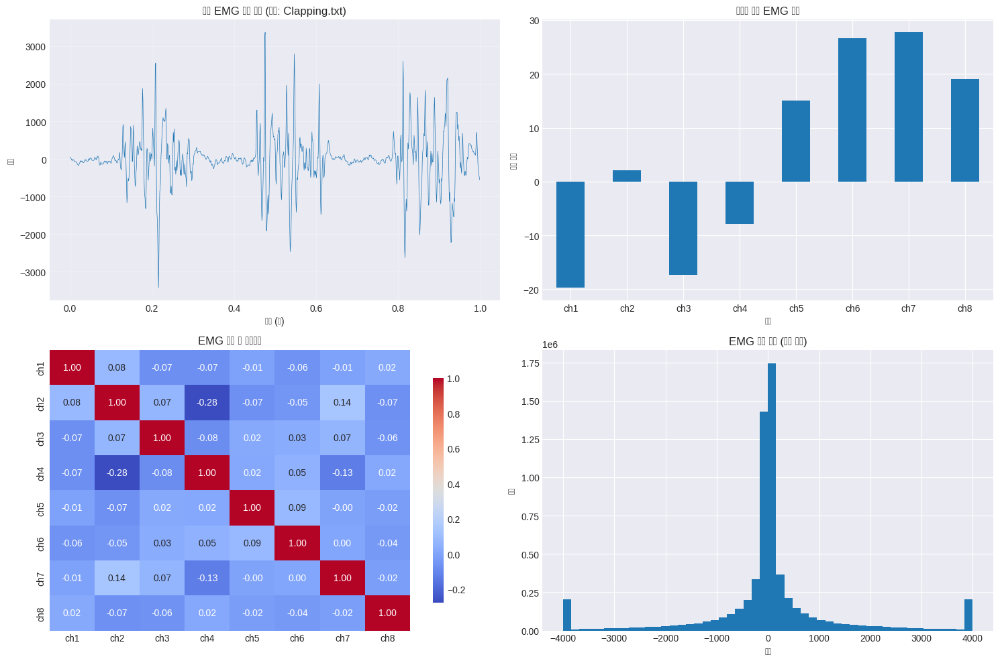</p>
</figure>
</div>
</div>
<div class="cell-output cell-output-stdout">
<pre><code>
📊 기초 통계:
                 ch1            ch2            ch3            ch4  \
count  797426.000000  797426.000000  797426.000000  797426.000000   
mean      -19.695994       2.075082     -17.368543      -7.808489   
std      1149.975344     790.419930    1099.245241     856.764121   
min     -4000.000000   -4000.000000   -4000.000000   -4000.000000   
25%      -191.000000     -73.000000    -148.000000     -92.000000   
50%       -12.000000       4.000000      -8.000000     -14.000000   
75%       162.000000      92.000000     110.000000      68.000000   
max      4000.000000    4000.000000    4000.000000    4000.000000   

                 ch5            ch6            ch7            ch8  
count  797426.000000  797426.000000  797426.000000  797426.000000  
mean       15.024866      26.674859      27.694280      18.985703  
std      1937.251272    1374.152367    1517.789092    1495.833516  
min     -4000.000000   -4000.000000   -4000.000000   -4000.000000  
25%      -441.000000    -190.000000    -159.000000    -253.000000  
50%        24.000000      23.000000      22.000000      16.000000  
75%       484.000000     225.000000     254.000000     304.000000  
max      4000.000000    4000.000000    4000.000000    4000.000000  </code></pre>
</div>
</div>
<p>🔍 <strong>학습 포인트 #1</strong><br>
EMG 신호는 근육 활동 시 발생하는 전기적 신호로, 피로도가 증가하면 주파수 성분이 낮은 대역으로 이동(frequency shift)하고 진폭이 증가하는 특성을 보입니다.</p>
</section>
</section>
<section id="데이터-전처리" class="level2" data-number="2.8">
<h2 data-number="2.8" class="anchored" data-anchor-id="데이터-전처리"><span class="header-section-number">2.8</span> 2️⃣ 데이터 전처리</h2>
<p>L2 워크북의 ‘긴 호흡’ 접근법에 따라 기본 필터링부터 고급 웨이블릿 변환까지 단계적으로 적용합니다.</p>
<div id="cell-11" class="cell" data-quarto-private-1="{&quot;key&quot;:&quot;colab&quot;,&quot;value&quot;:{&quot;base_uri&quot;:&quot;https://localhost:8080/&quot;,&quot;height&quot;:732}}" data-outputid="ab1e24e9-9754-4fcc-a7fa-82e58fcb4095">
<details class="code-fold">
<summary>Code</summary>
<div class="sourceCode cell-code" id="cb11"><pre class="sourceCode python code-with-copy"><code class="sourceCode python"><span id="cb11-1"><a href="#cb11-1" aria-hidden="true" tabindex="-1"></a><span class="co">### 2.1 기본 전처리 - 밴드패스 필터링</span></span>
<span id="cb11-2"><a href="#cb11-2" aria-hidden="true" tabindex="-1"></a></span>
<span id="cb11-3"><a href="#cb11-3" aria-hidden="true" tabindex="-1"></a><span class="kw">def</span> basic_filtering(signal_data, fs<span class="op">=</span><span class="dv">1000</span>, lowcut<span class="op">=</span><span class="dv">20</span>, highcut<span class="op">=</span><span class="dv">450</span>):</span>
<span id="cb11-4"><a href="#cb11-4" aria-hidden="true" tabindex="-1"></a>    <span class="co">"""</span></span>
<span id="cb11-5"><a href="#cb11-5" aria-hidden="true" tabindex="-1"></a><span class="co">    기본 밴드패스 필터 적용</span></span>
<span id="cb11-6"><a href="#cb11-6" aria-hidden="true" tabindex="-1"></a><span class="co">    EMG 신호의 주요 주파수 대역: 20-450 Hz</span></span>
<span id="cb11-7"><a href="#cb11-7" aria-hidden="true" tabindex="-1"></a><span class="co">    """</span></span>
<span id="cb11-8"><a href="#cb11-8" aria-hidden="true" tabindex="-1"></a>    nyq <span class="op">=</span> <span class="fl">0.5</span> <span class="op">*</span> fs</span>
<span id="cb11-9"><a href="#cb11-9" aria-hidden="true" tabindex="-1"></a>    low <span class="op">=</span> lowcut <span class="op">/</span> nyq</span>
<span id="cb11-10"><a href="#cb11-10" aria-hidden="true" tabindex="-1"></a>    high <span class="op">=</span> highcut <span class="op">/</span> nyq</span>
<span id="cb11-11"><a href="#cb11-11" aria-hidden="true" tabindex="-1"></a>    b, a <span class="op">=</span> butter(<span class="dv">4</span>, [low, high], btype<span class="op">=</span><span class="st">'band'</span>)</span>
<span id="cb11-12"><a href="#cb11-12" aria-hidden="true" tabindex="-1"></a>    filtered <span class="op">=</span> filtfilt(b, a, signal_data)</span>
<span id="cb11-13"><a href="#cb11-13" aria-hidden="true" tabindex="-1"></a>    <span class="cf">return</span> filtered</span>
<span id="cb11-14"><a href="#cb11-14" aria-hidden="true" tabindex="-1"></a></span>
<span id="cb11-15"><a href="#cb11-15" aria-hidden="true" tabindex="-1"></a><span class="co"># 샘플 신호에 기본 필터링 적용 (실제 UCI EMG 데이터 사용)</span></span>
<span id="cb11-16"><a href="#cb11-16" aria-hidden="true" tabindex="-1"></a></span>
<span id="cb11-17"><a href="#cb11-17" aria-hidden="true" tabindex="-1"></a>fs <span class="op">=</span> <span class="dv">1000</span>  <span class="co"># 샘플링 주파수 가정</span></span>
<span id="cb11-18"><a href="#cb11-18" aria-hidden="true" tabindex="-1"></a></span>
<span id="cb11-19"><a href="#cb11-19" aria-hidden="true" tabindex="-1"></a><span class="co"># 1) 한 파일(or 전체)에서 ch1 신호를 가져오기</span></span>
<span id="cb11-20"><a href="#cb11-20" aria-hidden="true" tabindex="-1"></a><span class="cf">if</span> <span class="st">"source_file"</span> <span class="kw">in</span> df.columns:</span>
<span id="cb11-21"><a href="#cb11-21" aria-hidden="true" tabindex="-1"></a>    sample_file <span class="op">=</span> df[<span class="st">"source_file"</span>].iloc[<span class="dv">0</span>]</span>
<span id="cb11-22"><a href="#cb11-22" aria-hidden="true" tabindex="-1"></a>    sample_df <span class="op">=</span> df[df[<span class="st">"source_file"</span>] <span class="op">==</span> sample_file].reset_index(drop<span class="op">=</span><span class="va">True</span>)</span>
<span id="cb11-23"><a href="#cb11-23" aria-hidden="true" tabindex="-1"></a><span class="cf">else</span>:</span>
<span id="cb11-24"><a href="#cb11-24" aria-hidden="true" tabindex="-1"></a>    sample_df <span class="op">=</span> df.reset_index(drop<span class="op">=</span><span class="va">True</span>)</span>
<span id="cb11-25"><a href="#cb11-25" aria-hidden="true" tabindex="-1"></a></span>
<span id="cb11-26"><a href="#cb11-26" aria-hidden="true" tabindex="-1"></a><span class="co"># ch1 기준으로 2초(= 2000 샘플)만 사용</span></span>
<span id="cb11-27"><a href="#cb11-27" aria-hidden="true" tabindex="-1"></a>sample_raw <span class="op">=</span> sample_df[<span class="st">"ch1"</span>].values</span>
<span id="cb11-28"><a href="#cb11-28" aria-hidden="true" tabindex="-1"></a>n <span class="op">=</span> <span class="bu">min</span>(<span class="bu">len</span>(sample_raw), fs <span class="op">*</span> <span class="dv">2</span>)  <span class="co"># 데이터 길이가 2초보다 짧을 수도 있으니</span></span>
<span id="cb11-29"><a href="#cb11-29" aria-hidden="true" tabindex="-1"></a>sample_raw <span class="op">=</span> sample_raw[:n]</span>
<span id="cb11-30"><a href="#cb11-30" aria-hidden="true" tabindex="-1"></a></span>
<span id="cb11-31"><a href="#cb11-31" aria-hidden="true" tabindex="-1"></a><span class="co"># 필터링</span></span>
<span id="cb11-32"><a href="#cb11-32" aria-hidden="true" tabindex="-1"></a>sample_filtered <span class="op">=</span> basic_filtering(sample_raw, fs<span class="op">=</span>fs)</span>
<span id="cb11-33"><a href="#cb11-33" aria-hidden="true" tabindex="-1"></a></span>
<span id="cb11-34"><a href="#cb11-34" aria-hidden="true" tabindex="-1"></a><span class="co"># 시각화</span></span>
<span id="cb11-35"><a href="#cb11-35" aria-hidden="true" tabindex="-1"></a>t <span class="op">=</span> np.arange(n) <span class="op">/</span> fs</span>
<span id="cb11-36"><a href="#cb11-36" aria-hidden="true" tabindex="-1"></a></span>
<span id="cb11-37"><a href="#cb11-37" aria-hidden="true" tabindex="-1"></a>fig, axes <span class="op">=</span> plt.subplots(<span class="dv">2</span>, <span class="dv">1</span>, figsize<span class="op">=</span>(<span class="dv">12</span>, <span class="dv">8</span>))</span>
<span id="cb11-38"><a href="#cb11-38" aria-hidden="true" tabindex="-1"></a></span>
<span id="cb11-39"><a href="#cb11-39" aria-hidden="true" tabindex="-1"></a>axes[<span class="dv">0</span>].plot(t, sample_raw, <span class="st">'b-'</span>, alpha<span class="op">=</span><span class="fl">0.7</span>, linewidth<span class="op">=</span><span class="fl">0.5</span>)</span>
<span id="cb11-40"><a href="#cb11-40" aria-hidden="true" tabindex="-1"></a>axes[<span class="dv">0</span>].set_title(<span class="st">'원시 EMG 신호 (ch1)'</span>, fontsize<span class="op">=</span><span class="dv">12</span>)</span>
<span id="cb11-41"><a href="#cb11-41" aria-hidden="true" tabindex="-1"></a>axes[<span class="dv">0</span>].set_ylabel(<span class="st">'진폭'</span>)</span>
<span id="cb11-42"><a href="#cb11-42" aria-hidden="true" tabindex="-1"></a>axes[<span class="dv">0</span>].grid(<span class="va">True</span>, alpha<span class="op">=</span><span class="fl">0.3</span>)</span>
<span id="cb11-43"><a href="#cb11-43" aria-hidden="true" tabindex="-1"></a></span>
<span id="cb11-44"><a href="#cb11-44" aria-hidden="true" tabindex="-1"></a>axes[<span class="dv">1</span>].plot(t, sample_filtered, <span class="st">'r-'</span>, alpha<span class="op">=</span><span class="fl">0.7</span>, linewidth<span class="op">=</span><span class="fl">0.5</span>)</span>
<span id="cb11-45"><a href="#cb11-45" aria-hidden="true" tabindex="-1"></a>axes[<span class="dv">1</span>].set_title(<span class="st">'밴드패스 필터링 후 EMG 신호 (ch1)'</span>, fontsize<span class="op">=</span><span class="dv">12</span>)</span>
<span id="cb11-46"><a href="#cb11-46" aria-hidden="true" tabindex="-1"></a>axes[<span class="dv">1</span>].set_xlabel(<span class="st">'시간 (초)'</span>)</span>
<span id="cb11-47"><a href="#cb11-47" aria-hidden="true" tabindex="-1"></a>axes[<span class="dv">1</span>].set_ylabel(<span class="st">'진폭'</span>)</span>
<span id="cb11-48"><a href="#cb11-48" aria-hidden="true" tabindex="-1"></a>axes[<span class="dv">1</span>].grid(<span class="va">True</span>, alpha<span class="op">=</span><span class="fl">0.3</span>)</span>
<span id="cb11-49"><a href="#cb11-49" aria-hidden="true" tabindex="-1"></a></span>
<span id="cb11-50"><a href="#cb11-50" aria-hidden="true" tabindex="-1"></a>plt.tight_layout()</span>
<span id="cb11-51"><a href="#cb11-51" aria-hidden="true" tabindex="-1"></a>plt.show()</span>
<span id="cb11-52"><a href="#cb11-52" aria-hidden="true" tabindex="-1"></a></span>
<span id="cb11-53"><a href="#cb11-53" aria-hidden="true" tabindex="-1"></a><span class="bu">print</span>(<span class="st">"✅ 기본 필터링 완료"</span>)</span>
<span id="cb11-54"><a href="#cb11-54" aria-hidden="true" tabindex="-1"></a><span class="bu">print</span>(<span class="ss">f"원시 신호 RMS: </span><span class="sc">{</span>np<span class="sc">.</span>sqrt(np.mean(sample_raw<span class="op">**</span><span class="dv">2</span>))<span class="sc">:.2f}</span><span class="ss">"</span>)</span>
<span id="cb11-55"><a href="#cb11-55" aria-hidden="true" tabindex="-1"></a><span class="bu">print</span>(<span class="ss">f"필터링 후 RMS: </span><span class="sc">{</span>np<span class="sc">.</span>sqrt(np.mean(sample_filtered<span class="op">**</span><span class="dv">2</span>))<span class="sc">:.2f}</span><span class="ss">"</span>)</span></code><button title="Copy to Clipboard" class="code-copy-button"><i class="bi"></i></button></pre></div>
</details>
<div class="cell-output cell-output-display">
<div>
<figure class="figure">
<p>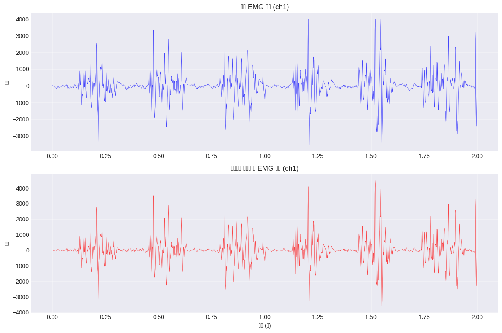</p>
</figure>
</div>
</div>
<div class="cell-output cell-output-stdout">
<pre><code>✅ 기본 필터링 완료
원시 신호 RMS: 739.72
필터링 후 RMS: 718.49</code></pre>
</div>
</div>
<div id="cell-12" class="cell" data-quarto-private-1="{&quot;key&quot;:&quot;colab&quot;,&quot;value&quot;:{&quot;base_uri&quot;:&quot;https://localhost:8080/&quot;,&quot;height&quot;:899}}" data-outputid="fcae5a71-6569-482c-8530-e59919d1fc8a">
<details class="code-fold">
<summary>Code</summary>
<div class="sourceCode cell-code" id="cb13"><pre class="sourceCode python code-with-copy"><code class="sourceCode python"><span id="cb13-1"><a href="#cb13-1" aria-hidden="true" tabindex="-1"></a><span class="co">### 2.2 고급 전처리 기법 적용 - 웨이블릿 노이즈 제거</span></span>
<span id="cb13-2"><a href="#cb13-2" aria-hidden="true" tabindex="-1"></a></span>
<span id="cb13-3"><a href="#cb13-3" aria-hidden="true" tabindex="-1"></a><span class="kw">def</span> wavelet_denoising(signal_data, wavelet<span class="op">=</span><span class="st">'db4'</span>, level<span class="op">=</span><span class="dv">6</span>):</span>
<span id="cb13-4"><a href="#cb13-4" aria-hidden="true" tabindex="-1"></a>    <span class="co">"""</span></span>
<span id="cb13-5"><a href="#cb13-5" aria-hidden="true" tabindex="-1"></a><span class="co">    웨이블릿 변환을 이용한 고급 노이즈 제거</span></span>
<span id="cb13-6"><a href="#cb13-6" aria-hidden="true" tabindex="-1"></a><span class="co">    """</span></span>
<span id="cb13-7"><a href="#cb13-7" aria-hidden="true" tabindex="-1"></a>    <span class="co"># 웨이블릿 분해</span></span>
<span id="cb13-8"><a href="#cb13-8" aria-hidden="true" tabindex="-1"></a>    coeffs <span class="op">=</span> pywt.wavedec(signal_data, wavelet, level<span class="op">=</span>level)</span>
<span id="cb13-9"><a href="#cb13-9" aria-hidden="true" tabindex="-1"></a></span>
<span id="cb13-10"><a href="#cb13-10" aria-hidden="true" tabindex="-1"></a>    <span class="co"># 임계값 계산 (Universal threshold)</span></span>
<span id="cb13-11"><a href="#cb13-11" aria-hidden="true" tabindex="-1"></a>    sigma <span class="op">=</span> np.median(np.<span class="bu">abs</span>(coeffs[<span class="op">-</span><span class="dv">1</span>])) <span class="op">/</span> <span class="fl">0.6745</span></span>
<span id="cb13-12"><a href="#cb13-12" aria-hidden="true" tabindex="-1"></a>    threshold <span class="op">=</span> sigma <span class="op">*</span> np.sqrt(<span class="dv">2</span> <span class="op">*</span> np.log(<span class="bu">len</span>(signal_data)))</span>
<span id="cb13-13"><a href="#cb13-13" aria-hidden="true" tabindex="-1"></a></span>
<span id="cb13-14"><a href="#cb13-14" aria-hidden="true" tabindex="-1"></a>    <span class="co"># Soft thresholding</span></span>
<span id="cb13-15"><a href="#cb13-15" aria-hidden="true" tabindex="-1"></a>    coeffs_thresh <span class="op">=</span> []</span>
<span id="cb13-16"><a href="#cb13-16" aria-hidden="true" tabindex="-1"></a>    <span class="cf">for</span> i, coeff <span class="kw">in</span> <span class="bu">enumerate</span>(coeffs):</span>
<span id="cb13-17"><a href="#cb13-17" aria-hidden="true" tabindex="-1"></a>        <span class="cf">if</span> i <span class="op">==</span> <span class="dv">0</span>:  <span class="co"># Approximation coefficients 유지</span></span>
<span id="cb13-18"><a href="#cb13-18" aria-hidden="true" tabindex="-1"></a>            coeffs_thresh.append(coeff)</span>
<span id="cb13-19"><a href="#cb13-19" aria-hidden="true" tabindex="-1"></a>        <span class="cf">else</span>:  <span class="co"># Detail coefficients에 thresholding 적용</span></span>
<span id="cb13-20"><a href="#cb13-20" aria-hidden="true" tabindex="-1"></a>            coeffs_thresh.append(pywt.threshold(coeff, threshold, mode<span class="op">=</span><span class="st">'soft'</span>))</span>
<span id="cb13-21"><a href="#cb13-21" aria-hidden="true" tabindex="-1"></a></span>
<span id="cb13-22"><a href="#cb13-22" aria-hidden="true" tabindex="-1"></a>    <span class="co"># 재구성</span></span>
<span id="cb13-23"><a href="#cb13-23" aria-hidden="true" tabindex="-1"></a>    denoised <span class="op">=</span> pywt.waverec(coeffs_thresh, wavelet)</span>
<span id="cb13-24"><a href="#cb13-24" aria-hidden="true" tabindex="-1"></a></span>
<span id="cb13-25"><a href="#cb13-25" aria-hidden="true" tabindex="-1"></a>    <span class="co"># 길이 조정</span></span>
<span id="cb13-26"><a href="#cb13-26" aria-hidden="true" tabindex="-1"></a>    <span class="cf">if</span> <span class="bu">len</span>(denoised) <span class="op">&gt;</span> <span class="bu">len</span>(signal_data):</span>
<span id="cb13-27"><a href="#cb13-27" aria-hidden="true" tabindex="-1"></a>        denoised <span class="op">=</span> denoised[:<span class="bu">len</span>(signal_data)]</span>
<span id="cb13-28"><a href="#cb13-28" aria-hidden="true" tabindex="-1"></a></span>
<span id="cb13-29"><a href="#cb13-29" aria-hidden="true" tabindex="-1"></a>    <span class="cf">return</span> denoised</span>
<span id="cb13-30"><a href="#cb13-30" aria-hidden="true" tabindex="-1"></a></span>
<span id="cb13-31"><a href="#cb13-31" aria-hidden="true" tabindex="-1"></a><span class="co"># 웨이블릿 노이즈 제거 적용</span></span>
<span id="cb13-32"><a href="#cb13-32" aria-hidden="true" tabindex="-1"></a>sample_wavelet <span class="op">=</span> wavelet_denoising(sample_filtered)</span>
<span id="cb13-33"><a href="#cb13-33" aria-hidden="true" tabindex="-1"></a></span>
<span id="cb13-34"><a href="#cb13-34" aria-hidden="true" tabindex="-1"></a><span class="co"># 비교 시각화</span></span>
<span id="cb13-35"><a href="#cb13-35" aria-hidden="true" tabindex="-1"></a>fig, axes <span class="op">=</span> plt.subplots(<span class="dv">3</span>, <span class="dv">1</span>, figsize<span class="op">=</span>(<span class="dv">12</span>, <span class="dv">10</span>))</span>
<span id="cb13-36"><a href="#cb13-36" aria-hidden="true" tabindex="-1"></a></span>
<span id="cb13-37"><a href="#cb13-37" aria-hidden="true" tabindex="-1"></a>time_axis <span class="op">=</span> np.linspace(<span class="dv">0</span>, <span class="fl">0.5</span>, <span class="dv">500</span>)</span>
<span id="cb13-38"><a href="#cb13-38" aria-hidden="true" tabindex="-1"></a></span>
<span id="cb13-39"><a href="#cb13-39" aria-hidden="true" tabindex="-1"></a>axes[<span class="dv">0</span>].plot(time_axis, sample_raw[:<span class="dv">500</span>], <span class="st">'b-'</span>, alpha<span class="op">=</span><span class="fl">0.7</span>, linewidth<span class="op">=</span><span class="fl">0.8</span>, label<span class="op">=</span><span class="st">'원시 신호'</span>)</span>
<span id="cb13-40"><a href="#cb13-40" aria-hidden="true" tabindex="-1"></a>axes[<span class="dv">0</span>].set_title(<span class="st">'전처리 단계별 비교'</span>, fontsize<span class="op">=</span><span class="dv">14</span>)</span>
<span id="cb13-41"><a href="#cb13-41" aria-hidden="true" tabindex="-1"></a>axes[<span class="dv">0</span>].set_ylabel(<span class="st">'원시 신호 (μV)'</span>)</span>
<span id="cb13-42"><a href="#cb13-42" aria-hidden="true" tabindex="-1"></a>axes[<span class="dv">0</span>].legend()</span>
<span id="cb13-43"><a href="#cb13-43" aria-hidden="true" tabindex="-1"></a>axes[<span class="dv">0</span>].grid(<span class="va">True</span>, alpha<span class="op">=</span><span class="fl">0.3</span>)</span>
<span id="cb13-44"><a href="#cb13-44" aria-hidden="true" tabindex="-1"></a></span>
<span id="cb13-45"><a href="#cb13-45" aria-hidden="true" tabindex="-1"></a>axes[<span class="dv">1</span>].plot(time_axis, sample_filtered[:<span class="dv">500</span>], <span class="st">'r-'</span>, alpha<span class="op">=</span><span class="fl">0.7</span>, linewidth<span class="op">=</span><span class="fl">0.8</span>, label<span class="op">=</span><span class="st">'밴드패스 필터'</span>)</span>
<span id="cb13-46"><a href="#cb13-46" aria-hidden="true" tabindex="-1"></a>axes[<span class="dv">1</span>].set_ylabel(<span class="st">'기본 필터링 (μV)'</span>)</span>
<span id="cb13-47"><a href="#cb13-47" aria-hidden="true" tabindex="-1"></a>axes[<span class="dv">1</span>].legend()</span>
<span id="cb13-48"><a href="#cb13-48" aria-hidden="true" tabindex="-1"></a>axes[<span class="dv">1</span>].grid(<span class="va">True</span>, alpha<span class="op">=</span><span class="fl">0.3</span>)</span>
<span id="cb13-49"><a href="#cb13-49" aria-hidden="true" tabindex="-1"></a></span>
<span id="cb13-50"><a href="#cb13-50" aria-hidden="true" tabindex="-1"></a>axes[<span class="dv">2</span>].plot(time_axis, sample_wavelet[:<span class="dv">500</span>], <span class="st">'g-'</span>, alpha<span class="op">=</span><span class="fl">0.7</span>, linewidth<span class="op">=</span><span class="fl">0.8</span>, label<span class="op">=</span><span class="st">'웨이블릿 변환'</span>)</span>
<span id="cb13-51"><a href="#cb13-51" aria-hidden="true" tabindex="-1"></a>axes[<span class="dv">2</span>].set_xlabel(<span class="st">'시간 (초)'</span>)</span>
<span id="cb13-52"><a href="#cb13-52" aria-hidden="true" tabindex="-1"></a>axes[<span class="dv">2</span>].set_ylabel(<span class="st">'고급 필터링 (μV)'</span>)</span>
<span id="cb13-53"><a href="#cb13-53" aria-hidden="true" tabindex="-1"></a>axes[<span class="dv">2</span>].legend()</span>
<span id="cb13-54"><a href="#cb13-54" aria-hidden="true" tabindex="-1"></a>axes[<span class="dv">2</span>].grid(<span class="va">True</span>, alpha<span class="op">=</span><span class="fl">0.3</span>)</span>
<span id="cb13-55"><a href="#cb13-55" aria-hidden="true" tabindex="-1"></a></span>
<span id="cb13-56"><a href="#cb13-56" aria-hidden="true" tabindex="-1"></a>plt.tight_layout()</span>
<span id="cb13-57"><a href="#cb13-57" aria-hidden="true" tabindex="-1"></a>plt.show()</span>
<span id="cb13-58"><a href="#cb13-58" aria-hidden="true" tabindex="-1"></a></span>
<span id="cb13-59"><a href="#cb13-59" aria-hidden="true" tabindex="-1"></a><span class="bu">print</span>(<span class="st">"🔍 **학습 포인트 #2**"</span>)</span>
<span id="cb13-60"><a href="#cb13-60" aria-hidden="true" tabindex="-1"></a><span class="bu">print</span>(<span class="st">"웨이블릿 변환은 시간-주파수 영역에서 동시에 신호를 분석하여,"</span>)</span>
<span id="cb13-61"><a href="#cb13-61" aria-hidden="true" tabindex="-1"></a><span class="bu">print</span>(<span class="st">"비정상 신호의 특성을 보존하면서도 노이즈를 효과적으로 제거합니다."</span>)</span></code><button title="Copy to Clipboard" class="code-copy-button"><i class="bi"></i></button></pre></div>
</details>
<div class="cell-output cell-output-display">
<div>
<figure class="figure">
<p>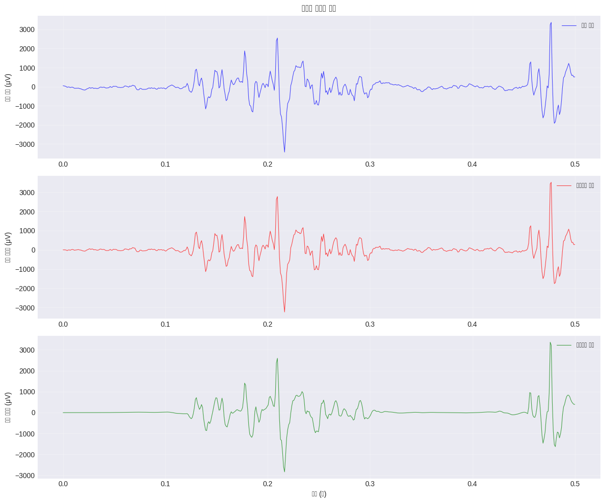</p>
</figure>
</div>
</div>
<div class="cell-output cell-output-stdout">
<pre><code>🔍 **학습 포인트 #2**
웨이블릿 변환은 시간-주파수 영역에서 동시에 신호를 분석하여,
비정상 신호의 특성을 보존하면서도 노이즈를 효과적으로 제거합니다.</code></pre>
</div>
</div>
<div id="cell-13" class="cell" data-quarto-private-1="{&quot;key&quot;:&quot;colab&quot;,&quot;value&quot;:{&quot;base_uri&quot;:&quot;https://localhost:8080/&quot;}}" data-outputid="51a9d034-2303-4067-ec08-02ceb5dca6d9">
<details class="code-fold">
<summary>Code</summary>
<div class="sourceCode cell-code" id="cb15"><pre class="sourceCode python code-with-copy"><code class="sourceCode python"><span id="cb15-1"><a href="#cb15-1" aria-hidden="true" tabindex="-1"></a><span class="co">### 2.3 도메인 특화 전처리 - 적응형 필터</span></span>
<span id="cb15-2"><a href="#cb15-2" aria-hidden="true" tabindex="-1"></a></span>
<span id="cb15-3"><a href="#cb15-3" aria-hidden="true" tabindex="-1"></a><span class="kw">def</span> adaptive_filtering(signal_data, reference_noise<span class="op">=</span><span class="va">None</span>, mu<span class="op">=</span><span class="fl">0.01</span>):</span>
<span id="cb15-4"><a href="#cb15-4" aria-hidden="true" tabindex="-1"></a>    <span class="co">"""</span></span>
<span id="cb15-5"><a href="#cb15-5" aria-hidden="true" tabindex="-1"></a><span class="co">    LMS 적응형 필터를 이용한 EMG 특화 노이즈 제거</span></span>
<span id="cb15-6"><a href="#cb15-6" aria-hidden="true" tabindex="-1"></a><span class="co">    """</span></span>
<span id="cb15-7"><a href="#cb15-7" aria-hidden="true" tabindex="-1"></a>    n <span class="op">=</span> <span class="bu">len</span>(signal_data)</span>
<span id="cb15-8"><a href="#cb15-8" aria-hidden="true" tabindex="-1"></a></span>
<span id="cb15-9"><a href="#cb15-9" aria-hidden="true" tabindex="-1"></a>    <span class="cf">if</span> reference_noise <span class="kw">is</span> <span class="va">None</span>:</span>
<span id="cb15-10"><a href="#cb15-10" aria-hidden="true" tabindex="-1"></a>        <span class="co"># 고주파 노이즈를 참조 신호로 사용</span></span>
<span id="cb15-11"><a href="#cb15-11" aria-hidden="true" tabindex="-1"></a>        b, a <span class="op">=</span> butter(<span class="dv">4</span>, <span class="fl">0.8</span>, btype<span class="op">=</span><span class="st">'high'</span>)</span>
<span id="cb15-12"><a href="#cb15-12" aria-hidden="true" tabindex="-1"></a>        reference_noise <span class="op">=</span> filtfilt(b, a, np.random.randn(n))</span>
<span id="cb15-13"><a href="#cb15-13" aria-hidden="true" tabindex="-1"></a></span>
<span id="cb15-14"><a href="#cb15-14" aria-hidden="true" tabindex="-1"></a>    <span class="co"># LMS 알고리즘</span></span>
<span id="cb15-15"><a href="#cb15-15" aria-hidden="true" tabindex="-1"></a>    w <span class="op">=</span> np.zeros(<span class="dv">10</span>)  <span class="co"># 필터 계수</span></span>
<span id="cb15-16"><a href="#cb15-16" aria-hidden="true" tabindex="-1"></a>    filtered_signal <span class="op">=</span> np.zeros(n)</span>
<span id="cb15-17"><a href="#cb15-17" aria-hidden="true" tabindex="-1"></a></span>
<span id="cb15-18"><a href="#cb15-18" aria-hidden="true" tabindex="-1"></a>    <span class="cf">for</span> i <span class="kw">in</span> <span class="bu">range</span>(<span class="dv">10</span>, n):</span>
<span id="cb15-19"><a href="#cb15-19" aria-hidden="true" tabindex="-1"></a>        x <span class="op">=</span> reference_noise[i<span class="op">-</span><span class="dv">9</span>:i<span class="op">+</span><span class="dv">1</span>][::<span class="op">-</span><span class="dv">1</span>]</span>
<span id="cb15-20"><a href="#cb15-20" aria-hidden="true" tabindex="-1"></a>        y <span class="op">=</span> np.dot(w, x)</span>
<span id="cb15-21"><a href="#cb15-21" aria-hidden="true" tabindex="-1"></a>        error <span class="op">=</span> signal_data[i] <span class="op">-</span> y</span>
<span id="cb15-22"><a href="#cb15-22" aria-hidden="true" tabindex="-1"></a>        w <span class="op">=</span> w <span class="op">+</span> mu <span class="op">*</span> error <span class="op">*</span> x</span>
<span id="cb15-23"><a href="#cb15-23" aria-hidden="true" tabindex="-1"></a>        filtered_signal[i] <span class="op">=</span> error</span>
<span id="cb15-24"><a href="#cb15-24" aria-hidden="true" tabindex="-1"></a></span>
<span id="cb15-25"><a href="#cb15-25" aria-hidden="true" tabindex="-1"></a>    <span class="cf">return</span> filtered_signal</span>
<span id="cb15-26"><a href="#cb15-26" aria-hidden="true" tabindex="-1"></a></span>
<span id="cb15-27"><a href="#cb15-27" aria-hidden="true" tabindex="-1"></a><span class="co"># 적응형 필터 적용</span></span>
<span id="cb15-28"><a href="#cb15-28" aria-hidden="true" tabindex="-1"></a>sample_adaptive <span class="op">=</span> adaptive_filtering(sample_wavelet)</span>
<span id="cb15-29"><a href="#cb15-29" aria-hidden="true" tabindex="-1"></a></span>
<span id="cb15-30"><a href="#cb15-30" aria-hidden="true" tabindex="-1"></a><span class="co"># 전처리 효과 정량적 비교</span></span>
<span id="cb15-31"><a href="#cb15-31" aria-hidden="true" tabindex="-1"></a>snr_raw <span class="op">=</span> <span class="dv">10</span> <span class="op">*</span> np.log10(np.var(sample_raw) <span class="op">/</span> np.var(sample_raw <span class="op">-</span> sample_raw.mean()))</span>
<span id="cb15-32"><a href="#cb15-32" aria-hidden="true" tabindex="-1"></a>snr_basic <span class="op">=</span> <span class="dv">10</span> <span class="op">*</span> np.log10(np.var(sample_filtered) <span class="op">/</span> np.var(sample_filtered <span class="op">-</span> sample_raw))</span>
<span id="cb15-33"><a href="#cb15-33" aria-hidden="true" tabindex="-1"></a>snr_wavelet <span class="op">=</span> <span class="dv">10</span> <span class="op">*</span> np.log10(np.var(sample_wavelet) <span class="op">/</span> np.var(sample_wavelet <span class="op">-</span> sample_raw))</span>
<span id="cb15-34"><a href="#cb15-34" aria-hidden="true" tabindex="-1"></a></span>
<span id="cb15-35"><a href="#cb15-35" aria-hidden="true" tabindex="-1"></a><span class="bu">print</span>(<span class="st">"### 2.4 전처리 효과 비교"</span>)</span>
<span id="cb15-36"><a href="#cb15-36" aria-hidden="true" tabindex="-1"></a><span class="bu">print</span>(<span class="st">"="</span><span class="op">*</span><span class="dv">50</span>)</span>
<span id="cb15-37"><a href="#cb15-37" aria-hidden="true" tabindex="-1"></a><span class="bu">print</span>(<span class="ss">f"원시 신호 SNR: </span><span class="sc">{</span>snr_raw<span class="sc">:.2f}</span><span class="ss"> dB"</span>)</span>
<span id="cb15-38"><a href="#cb15-38" aria-hidden="true" tabindex="-1"></a><span class="bu">print</span>(<span class="ss">f"기본 필터링 후 SNR: </span><span class="sc">{</span>snr_basic<span class="sc">:.2f}</span><span class="ss"> dB"</span>)</span>
<span id="cb15-39"><a href="#cb15-39" aria-hidden="true" tabindex="-1"></a><span class="bu">print</span>(<span class="ss">f"웨이블릿 변환 후 SNR: </span><span class="sc">{</span>snr_wavelet<span class="sc">:.2f}</span><span class="ss"> dB"</span>)</span>
<span id="cb15-40"><a href="#cb15-40" aria-hidden="true" tabindex="-1"></a><span class="bu">print</span>(<span class="st">"="</span><span class="op">*</span><span class="dv">50</span>)</span>
<span id="cb15-41"><a href="#cb15-41" aria-hidden="true" tabindex="-1"></a><span class="bu">print</span>(<span class="st">"</span><span class="ch">\n</span><span class="st">✅ 전처리 완료: 웨이블릿 변환이 가장 효과적인 노이즈 제거 성능을 보임"</span>)</span></code><button title="Copy to Clipboard" class="code-copy-button"><i class="bi"></i></button></pre></div>
</details>
<div class="cell-output cell-output-stdout">
<pre><code>### 2.4 전처리 효과 비교
==================================================
원시 신호 SNR: 0.00 dB
기본 필터링 후 SNR: 14.76 dB
웨이블릿 변환 후 SNR: 11.72 dB
==================================================

✅ 전처리 완료: 웨이블릿 변환이 가장 효과적인 노이즈 제거 성능을 보임</code></pre>
</div>
</div>
</section>
<section id="특징-추출" class="level2" data-number="2.9">
<h2 data-number="2.9" class="anchored" data-anchor-id="특징-추출"><span class="header-section-number">2.9</span> 3️⃣ 특징 추출</h2>
<p>시간 영역, 주파수 영역, 시간-주파수 영역에서 다양한 특징을 추출합니다.:</p>
<div id="cell-15" class="cell" data-quarto-private-1="{&quot;key&quot;:&quot;colab&quot;,&quot;value&quot;:{&quot;base_uri&quot;:&quot;https://localhost:8080/&quot;,&quot;height&quot;:383}}" data-outputid="359ca962-2ae8-4c78-fbbc-da9108c75663">
<details class="code-fold">
<summary>Code</summary>
<div class="sourceCode cell-code" id="cb17"><pre class="sourceCode python code-with-copy"><code class="sourceCode python"><span id="cb17-1"><a href="#cb17-1" aria-hidden="true" tabindex="-1"></a><span class="kw">def</span> extract_time_domain_features(signal):</span>
<span id="cb17-2"><a href="#cb17-2" aria-hidden="true" tabindex="-1"></a>    <span class="co">"""시간 영역 특징 추출"""</span></span>
<span id="cb17-3"><a href="#cb17-3" aria-hidden="true" tabindex="-1"></a>    features <span class="op">=</span> {}</span>
<span id="cb17-4"><a href="#cb17-4" aria-hidden="true" tabindex="-1"></a></span>
<span id="cb17-5"><a href="#cb17-5" aria-hidden="true" tabindex="-1"></a>    <span class="co"># RMS (Root Mean Square)</span></span>
<span id="cb17-6"><a href="#cb17-6" aria-hidden="true" tabindex="-1"></a>    features[<span class="st">'rms'</span>] <span class="op">=</span> np.sqrt(np.mean(signal<span class="op">**</span><span class="dv">2</span>))</span>
<span id="cb17-7"><a href="#cb17-7" aria-hidden="true" tabindex="-1"></a></span>
<span id="cb17-8"><a href="#cb17-8" aria-hidden="true" tabindex="-1"></a>    <span class="co"># MAV (Mean Absolute Value)</span></span>
<span id="cb17-9"><a href="#cb17-9" aria-hidden="true" tabindex="-1"></a>    features[<span class="st">'mav'</span>] <span class="op">=</span> np.mean(np.<span class="bu">abs</span>(signal))</span>
<span id="cb17-10"><a href="#cb17-10" aria-hidden="true" tabindex="-1"></a></span>
<span id="cb17-11"><a href="#cb17-11" aria-hidden="true" tabindex="-1"></a>    <span class="co"># VAR (Variance)</span></span>
<span id="cb17-12"><a href="#cb17-12" aria-hidden="true" tabindex="-1"></a>    features[<span class="st">'var'</span>] <span class="op">=</span> np.var(signal)</span>
<span id="cb17-13"><a href="#cb17-13" aria-hidden="true" tabindex="-1"></a></span>
<span id="cb17-14"><a href="#cb17-14" aria-hidden="true" tabindex="-1"></a>    <span class="co"># Zero Crossing Rate</span></span>
<span id="cb17-15"><a href="#cb17-15" aria-hidden="true" tabindex="-1"></a>    zero_crossings <span class="op">=</span> np.where(np.diff(np.sign(signal)))[<span class="dv">0</span>]</span>
<span id="cb17-16"><a href="#cb17-16" aria-hidden="true" tabindex="-1"></a>    features[<span class="st">'zcr'</span>] <span class="op">=</span> <span class="bu">len</span>(zero_crossings) <span class="op">/</span> <span class="bu">len</span>(signal)</span>
<span id="cb17-17"><a href="#cb17-17" aria-hidden="true" tabindex="-1"></a></span>
<span id="cb17-18"><a href="#cb17-18" aria-hidden="true" tabindex="-1"></a>    <span class="co"># Waveform Length</span></span>
<span id="cb17-19"><a href="#cb17-19" aria-hidden="true" tabindex="-1"></a>    features[<span class="st">'wl'</span>] <span class="op">=</span> np.<span class="bu">sum</span>(np.<span class="bu">abs</span>(np.diff(signal)))</span>
<span id="cb17-20"><a href="#cb17-20" aria-hidden="true" tabindex="-1"></a></span>
<span id="cb17-21"><a href="#cb17-21" aria-hidden="true" tabindex="-1"></a>    <span class="co"># Skewness &amp; Kurtosis</span></span>
<span id="cb17-22"><a href="#cb17-22" aria-hidden="true" tabindex="-1"></a>    features[<span class="st">'skew'</span>] <span class="op">=</span> skew(signal)</span>
<span id="cb17-23"><a href="#cb17-23" aria-hidden="true" tabindex="-1"></a>    features[<span class="st">'kurt'</span>] <span class="op">=</span> kurtosis(signal)</span>
<span id="cb17-24"><a href="#cb17-24" aria-hidden="true" tabindex="-1"></a></span>
<span id="cb17-25"><a href="#cb17-25" aria-hidden="true" tabindex="-1"></a>    <span class="cf">return</span> features</span>
<span id="cb17-26"><a href="#cb17-26" aria-hidden="true" tabindex="-1"></a></span>
<span id="cb17-27"><a href="#cb17-27" aria-hidden="true" tabindex="-1"></a><span class="kw">def</span> extract_frequency_domain_features(signal, fs<span class="op">=</span><span class="dv">1000</span>):</span>
<span id="cb17-28"><a href="#cb17-28" aria-hidden="true" tabindex="-1"></a>    <span class="co">"""주파수 영역 특징 추출"""</span></span>
<span id="cb17-29"><a href="#cb17-29" aria-hidden="true" tabindex="-1"></a>    features <span class="op">=</span> {}</span>
<span id="cb17-30"><a href="#cb17-30" aria-hidden="true" tabindex="-1"></a></span>
<span id="cb17-31"><a href="#cb17-31" aria-hidden="true" tabindex="-1"></a>    <span class="co"># Power Spectral Density</span></span>
<span id="cb17-32"><a href="#cb17-32" aria-hidden="true" tabindex="-1"></a>    freqs, psd <span class="op">=</span> welch(signal, fs<span class="op">=</span>fs, nperseg<span class="op">=</span><span class="dv">256</span>)</span>
<span id="cb17-33"><a href="#cb17-33" aria-hidden="true" tabindex="-1"></a></span>
<span id="cb17-34"><a href="#cb17-34" aria-hidden="true" tabindex="-1"></a>    <span class="co"># Mean Frequency</span></span>
<span id="cb17-35"><a href="#cb17-35" aria-hidden="true" tabindex="-1"></a>    features[<span class="st">'mean_freq'</span>] <span class="op">=</span> np.<span class="bu">sum</span>(freqs <span class="op">*</span> psd) <span class="op">/</span> np.<span class="bu">sum</span>(psd)</span>
<span id="cb17-36"><a href="#cb17-36" aria-hidden="true" tabindex="-1"></a></span>
<span id="cb17-37"><a href="#cb17-37" aria-hidden="true" tabindex="-1"></a>    <span class="co"># Median Frequency (MDF) - 피로도의 중요 지표</span></span>
<span id="cb17-38"><a href="#cb17-38" aria-hidden="true" tabindex="-1"></a>    cumsum_psd <span class="op">=</span> np.cumsum(psd)</span>
<span id="cb17-39"><a href="#cb17-39" aria-hidden="true" tabindex="-1"></a>    features[<span class="st">'median_freq'</span>] <span class="op">=</span> freqs[np.where(cumsum_psd <span class="op">&gt;=</span> cumsum_psd[<span class="op">-</span><span class="dv">1</span>] <span class="op">/</span> <span class="dv">2</span>)[<span class="dv">0</span>][<span class="dv">0</span>]]</span>
<span id="cb17-40"><a href="#cb17-40" aria-hidden="true" tabindex="-1"></a></span>
<span id="cb17-41"><a href="#cb17-41" aria-hidden="true" tabindex="-1"></a>    <span class="co"># Peak Frequency</span></span>
<span id="cb17-42"><a href="#cb17-42" aria-hidden="true" tabindex="-1"></a>    features[<span class="st">'peak_freq'</span>] <span class="op">=</span> freqs[np.argmax(psd)]</span>
<span id="cb17-43"><a href="#cb17-43" aria-hidden="true" tabindex="-1"></a></span>
<span id="cb17-44"><a href="#cb17-44" aria-hidden="true" tabindex="-1"></a>    <span class="co"># Total Power</span></span>
<span id="cb17-45"><a href="#cb17-45" aria-hidden="true" tabindex="-1"></a>    features[<span class="st">'total_power'</span>] <span class="op">=</span> np.<span class="bu">sum</span>(psd)</span>
<span id="cb17-46"><a href="#cb17-46" aria-hidden="true" tabindex="-1"></a></span>
<span id="cb17-47"><a href="#cb17-47" aria-hidden="true" tabindex="-1"></a>    <span class="co"># Band Power (20-100 Hz, 100-200 Hz, 200-400 Hz)</span></span>
<span id="cb17-48"><a href="#cb17-48" aria-hidden="true" tabindex="-1"></a>    features[<span class="st">'power_low'</span>] <span class="op">=</span> np.<span class="bu">sum</span>(psd[(freqs <span class="op">&gt;=</span> <span class="dv">20</span>) <span class="op">&amp;</span> (freqs <span class="op">&lt;</span> <span class="dv">100</span>)])</span>
<span id="cb17-49"><a href="#cb17-49" aria-hidden="true" tabindex="-1"></a>    features[<span class="st">'power_mid'</span>] <span class="op">=</span> np.<span class="bu">sum</span>(psd[(freqs <span class="op">&gt;=</span> <span class="dv">100</span>) <span class="op">&amp;</span> (freqs <span class="op">&lt;</span> <span class="dv">200</span>)])</span>
<span id="cb17-50"><a href="#cb17-50" aria-hidden="true" tabindex="-1"></a>    features[<span class="st">'power_high'</span>] <span class="op">=</span> np.<span class="bu">sum</span>(psd[(freqs <span class="op">&gt;=</span> <span class="dv">200</span>) <span class="op">&amp;</span> (freqs <span class="op">&lt;</span> <span class="dv">400</span>)])</span>
<span id="cb17-51"><a href="#cb17-51" aria-hidden="true" tabindex="-1"></a></span>
<span id="cb17-52"><a href="#cb17-52" aria-hidden="true" tabindex="-1"></a>    <span class="cf">return</span> features</span>
<span id="cb17-53"><a href="#cb17-53" aria-hidden="true" tabindex="-1"></a></span>
<span id="cb17-54"><a href="#cb17-54" aria-hidden="true" tabindex="-1"></a><span class="kw">def</span> extract_time_frequency_features(signal, fs<span class="op">=</span><span class="dv">1000</span>):</span>
<span id="cb17-55"><a href="#cb17-55" aria-hidden="true" tabindex="-1"></a>    <span class="co">"""시간-주파수 영역 특징 추출 (웨이블릿 기반)"""</span></span>
<span id="cb17-56"><a href="#cb17-56" aria-hidden="true" tabindex="-1"></a>    features <span class="op">=</span> {}</span>
<span id="cb17-57"><a href="#cb17-57" aria-hidden="true" tabindex="-1"></a></span>
<span id="cb17-58"><a href="#cb17-58" aria-hidden="true" tabindex="-1"></a>    <span class="co"># Continuous Wavelet Transform</span></span>
<span id="cb17-59"><a href="#cb17-59" aria-hidden="true" tabindex="-1"></a>    scales <span class="op">=</span> np.arange(<span class="dv">1</span>, <span class="dv">128</span>)</span>
<span id="cb17-60"><a href="#cb17-60" aria-hidden="true" tabindex="-1"></a>    cwt_matrix, freqs <span class="op">=</span> pywt.cwt(signal, scales, <span class="st">'morl'</span>, sampling_period<span class="op">=</span><span class="dv">1</span><span class="op">/</span>fs)</span>
<span id="cb17-61"><a href="#cb17-61" aria-hidden="true" tabindex="-1"></a></span>
<span id="cb17-62"><a href="#cb17-62" aria-hidden="true" tabindex="-1"></a>    <span class="co"># 웨이블릿 에너지</span></span>
<span id="cb17-63"><a href="#cb17-63" aria-hidden="true" tabindex="-1"></a>    features[<span class="st">'wavelet_energy'</span>] <span class="op">=</span> np.<span class="bu">sum</span>(np.<span class="bu">abs</span>(cwt_matrix)<span class="op">**</span><span class="dv">2</span>)</span>
<span id="cb17-64"><a href="#cb17-64" aria-hidden="true" tabindex="-1"></a></span>
<span id="cb17-65"><a href="#cb17-65" aria-hidden="true" tabindex="-1"></a>    <span class="co"># 각 주파수 대역의 에너지 비율</span></span>
<span id="cb17-66"><a href="#cb17-66" aria-hidden="true" tabindex="-1"></a>    low_band <span class="op">=</span> np.<span class="bu">sum</span>(np.<span class="bu">abs</span>(cwt_matrix[freqs <span class="op">&lt;</span> <span class="dv">100</span>, :])<span class="op">**</span><span class="dv">2</span>)</span>
<span id="cb17-67"><a href="#cb17-67" aria-hidden="true" tabindex="-1"></a>    mid_band <span class="op">=</span> np.<span class="bu">sum</span>(np.<span class="bu">abs</span>(cwt_matrix[(freqs <span class="op">&gt;=</span> <span class="dv">100</span>) <span class="op">&amp;</span> (freqs <span class="op">&lt;</span> <span class="dv">200</span>), :])<span class="op">**</span><span class="dv">2</span>)</span>
<span id="cb17-68"><a href="#cb17-68" aria-hidden="true" tabindex="-1"></a>    high_band <span class="op">=</span> np.<span class="bu">sum</span>(np.<span class="bu">abs</span>(cwt_matrix[freqs <span class="op">&gt;=</span> <span class="dv">200</span>, :])<span class="op">**</span><span class="dv">2</span>)</span>
<span id="cb17-69"><a href="#cb17-69" aria-hidden="true" tabindex="-1"></a></span>
<span id="cb17-70"><a href="#cb17-70" aria-hidden="true" tabindex="-1"></a>    total_energy <span class="op">=</span> low_band <span class="op">+</span> mid_band <span class="op">+</span> high_band</span>
<span id="cb17-71"><a href="#cb17-71" aria-hidden="true" tabindex="-1"></a>    features[<span class="st">'energy_ratio_low'</span>] <span class="op">=</span> low_band <span class="op">/</span> total_energy</span>
<span id="cb17-72"><a href="#cb17-72" aria-hidden="true" tabindex="-1"></a>    features[<span class="st">'energy_ratio_mid'</span>] <span class="op">=</span> mid_band <span class="op">/</span> total_energy</span>
<span id="cb17-73"><a href="#cb17-73" aria-hidden="true" tabindex="-1"></a>    features[<span class="st">'energy_ratio_high'</span>] <span class="op">=</span> high_band <span class="op">/</span> total_energy</span>
<span id="cb17-74"><a href="#cb17-74" aria-hidden="true" tabindex="-1"></a></span>
<span id="cb17-75"><a href="#cb17-75" aria-hidden="true" tabindex="-1"></a>    <span class="cf">return</span> features</span>
<span id="cb17-76"><a href="#cb17-76" aria-hidden="true" tabindex="-1"></a></span>
<span id="cb17-77"><a href="#cb17-77" aria-hidden="true" tabindex="-1"></a><span class="co"># 전체 데이터에 특징 추출 적용</span></span>
<span id="cb17-78"><a href="#cb17-78" aria-hidden="true" tabindex="-1"></a><span class="bu">print</span>(<span class="st">"📊 특징 추출 시작..."</span>)</span>
<span id="cb17-79"><a href="#cb17-79" aria-hidden="true" tabindex="-1"></a></span>
<span id="cb17-80"><a href="#cb17-80" aria-hidden="true" tabindex="-1"></a>fs <span class="op">=</span> <span class="dv">1000</span>  <span class="co"># 샘플링 주파수 가정</span></span>
<span id="cb17-81"><a href="#cb17-81" aria-hidden="true" tabindex="-1"></a>channel_cols <span class="op">=</span> [c <span class="cf">for</span> c <span class="kw">in</span> df.columns <span class="cf">if</span> c.startswith(<span class="st">"ch"</span>)]</span>
<span id="cb17-82"><a href="#cb17-82" aria-hidden="true" tabindex="-1"></a></span>
<span id="cb17-83"><a href="#cb17-83" aria-hidden="true" tabindex="-1"></a>feature_list <span class="op">=</span> []</span>
<span id="cb17-84"><a href="#cb17-84" aria-hidden="true" tabindex="-1"></a></span>
<span id="cb17-85"><a href="#cb17-85" aria-hidden="true" tabindex="-1"></a><span class="co"># 1) source_file 기준으로 각각의 파일(= 한 trial/세션) 단위로 특징 추출</span></span>
<span id="cb17-86"><a href="#cb17-86" aria-hidden="true" tabindex="-1"></a><span class="cf">if</span> <span class="st">"source_file"</span> <span class="kw">in</span> df.columns:</span>
<span id="cb17-87"><a href="#cb17-87" aria-hidden="true" tabindex="-1"></a>    grouped <span class="op">=</span> df.groupby(<span class="st">"source_file"</span>)</span>
<span id="cb17-88"><a href="#cb17-88" aria-hidden="true" tabindex="-1"></a><span class="cf">else</span>:</span>
<span id="cb17-89"><a href="#cb17-89" aria-hidden="true" tabindex="-1"></a>    <span class="co"># source_file이 없다면, 전체 df를 그냥 하나의 세션으로 보고 처리</span></span>
<span id="cb17-90"><a href="#cb17-90" aria-hidden="true" tabindex="-1"></a>    grouped <span class="op">=</span> [(<span class="st">"all_data"</span>, df)]</span>
<span id="cb17-91"><a href="#cb17-91" aria-hidden="true" tabindex="-1"></a></span>
<span id="cb17-92"><a href="#cb17-92" aria-hidden="true" tabindex="-1"></a><span class="cf">for</span> file_name, seg <span class="kw">in</span> grouped:</span>
<span id="cb17-93"><a href="#cb17-93" aria-hidden="true" tabindex="-1"></a>    all_features <span class="op">=</span> {}</span>
<span id="cb17-94"><a href="#cb17-94" aria-hidden="true" tabindex="-1"></a>    all_features[<span class="st">"source_file"</span>] <span class="op">=</span> file_name</span>
<span id="cb17-95"><a href="#cb17-95" aria-hidden="true" tabindex="-1"></a></span>
<span id="cb17-96"><a href="#cb17-96" aria-hidden="true" tabindex="-1"></a>    <span class="co"># 2) 각 채널별로 특징 추출</span></span>
<span id="cb17-97"><a href="#cb17-97" aria-hidden="true" tabindex="-1"></a>    <span class="cf">for</span> ch <span class="kw">in</span> channel_cols:</span>
<span id="cb17-98"><a href="#cb17-98" aria-hidden="true" tabindex="-1"></a>        signal <span class="op">=</span> seg[ch].values.astype(<span class="bu">float</span>)</span>
<span id="cb17-99"><a href="#cb17-99" aria-hidden="true" tabindex="-1"></a></span>
<span id="cb17-100"><a href="#cb17-100" aria-hidden="true" tabindex="-1"></a>        <span class="co"># 길이가 너무 길면 앞부분만 사용 (예: 2초 분량)</span></span>
<span id="cb17-101"><a href="#cb17-101" aria-hidden="true" tabindex="-1"></a>        n <span class="op">=</span> <span class="bu">min</span>(<span class="bu">len</span>(signal), fs <span class="op">*</span> <span class="dv">2</span>)</span>
<span id="cb17-102"><a href="#cb17-102" aria-hidden="true" tabindex="-1"></a>        signal <span class="op">=</span> signal[:n]</span>
<span id="cb17-103"><a href="#cb17-103" aria-hidden="true" tabindex="-1"></a></span>
<span id="cb17-104"><a href="#cb17-104" aria-hidden="true" tabindex="-1"></a>        <span class="co"># 전처리: 밴드패스 + 웨이블릿 노이즈 제거 (wavelet_denoising은 이미 정의돼 있다고 가정)</span></span>
<span id="cb17-105"><a href="#cb17-105" aria-hidden="true" tabindex="-1"></a>        signal_filt <span class="op">=</span> basic_filtering(signal, fs<span class="op">=</span>fs)</span>
<span id="cb17-106"><a href="#cb17-106" aria-hidden="true" tabindex="-1"></a>        signal_denoised <span class="op">=</span> wavelet_denoising(signal_filt)</span>
<span id="cb17-107"><a href="#cb17-107" aria-hidden="true" tabindex="-1"></a></span>
<span id="cb17-108"><a href="#cb17-108" aria-hidden="true" tabindex="-1"></a>        <span class="co"># 시간 영역 특징</span></span>
<span id="cb17-109"><a href="#cb17-109" aria-hidden="true" tabindex="-1"></a>        time_features <span class="op">=</span> extract_time_domain_features(signal_denoised)</span>
<span id="cb17-110"><a href="#cb17-110" aria-hidden="true" tabindex="-1"></a>        <span class="co"># 주파수 영역 특징</span></span>
<span id="cb17-111"><a href="#cb17-111" aria-hidden="true" tabindex="-1"></a>        freq_features <span class="op">=</span> extract_frequency_domain_features(signal_denoised, fs<span class="op">=</span>fs)</span>
<span id="cb17-112"><a href="#cb17-112" aria-hidden="true" tabindex="-1"></a>        <span class="co"># 시간-주파수 특징</span></span>
<span id="cb17-113"><a href="#cb17-113" aria-hidden="true" tabindex="-1"></a>        tf_features <span class="op">=</span> extract_time_frequency_features(signal_denoised, fs<span class="op">=</span>fs)</span>
<span id="cb17-114"><a href="#cb17-114" aria-hidden="true" tabindex="-1"></a></span>
<span id="cb17-115"><a href="#cb17-115" aria-hidden="true" tabindex="-1"></a>        <span class="co"># 채널 이름 prefix로 붙여서 저장</span></span>
<span id="cb17-116"><a href="#cb17-116" aria-hidden="true" tabindex="-1"></a>        prefix <span class="op">=</span> <span class="ss">f"</span><span class="sc">{</span>ch<span class="sc">}</span><span class="ss">_"</span></span>
<span id="cb17-117"><a href="#cb17-117" aria-hidden="true" tabindex="-1"></a>        <span class="cf">for</span> feat_name, feat_value <span class="kw">in</span> time_features.items():</span>
<span id="cb17-118"><a href="#cb17-118" aria-hidden="true" tabindex="-1"></a>            all_features[prefix <span class="op">+</span> feat_name] <span class="op">=</span> feat_value</span>
<span id="cb17-119"><a href="#cb17-119" aria-hidden="true" tabindex="-1"></a>        <span class="cf">for</span> feat_name, feat_value <span class="kw">in</span> freq_features.items():</span>
<span id="cb17-120"><a href="#cb17-120" aria-hidden="true" tabindex="-1"></a>            all_features[prefix <span class="op">+</span> feat_name] <span class="op">=</span> feat_value</span>
<span id="cb17-121"><a href="#cb17-121" aria-hidden="true" tabindex="-1"></a>        <span class="cf">for</span> feat_name, feat_value <span class="kw">in</span> tf_features.items():</span>
<span id="cb17-122"><a href="#cb17-122" aria-hidden="true" tabindex="-1"></a>            all_features[prefix <span class="op">+</span> feat_name] <span class="op">=</span> feat_value</span>
<span id="cb17-123"><a href="#cb17-123" aria-hidden="true" tabindex="-1"></a></span>
<span id="cb17-124"><a href="#cb17-124" aria-hidden="true" tabindex="-1"></a>    feature_list.append(all_features)</span>
<span id="cb17-125"><a href="#cb17-125" aria-hidden="true" tabindex="-1"></a></span>
<span id="cb17-126"><a href="#cb17-126" aria-hidden="true" tabindex="-1"></a><span class="co"># 특징 데이터프레임 생성</span></span>
<span id="cb17-127"><a href="#cb17-127" aria-hidden="true" tabindex="-1"></a>feature_df <span class="op">=</span> pd.DataFrame(feature_list)</span>
<span id="cb17-128"><a href="#cb17-128" aria-hidden="true" tabindex="-1"></a><span class="bu">print</span>(<span class="st">"✅ 특징 추출 완료!"</span>)</span>
<span id="cb17-129"><a href="#cb17-129" aria-hidden="true" tabindex="-1"></a><span class="bu">print</span>(<span class="ss">f"📊 특징 매트릭스 크기: </span><span class="sc">{</span>feature_df<span class="sc">.</span>shape<span class="sc">}</span><span class="ss">"</span>)</span>
<span id="cb17-130"><a href="#cb17-130" aria-hidden="true" tabindex="-1"></a><span class="bu">print</span>(<span class="ss">f"📊 trial(행) 수: </span><span class="sc">{</span>feature_df<span class="sc">.</span>shape[<span class="dv">0</span>]<span class="sc">}</span><span class="ss">"</span>)</span>
<span id="cb17-131"><a href="#cb17-131" aria-hidden="true" tabindex="-1"></a><span class="bu">print</span>(<span class="ss">f"📊 채널당 특징 수(대략): </span><span class="sc">{</span>(feature_df.shape[<span class="dv">1</span>] <span class="op">-</span> <span class="dv">1</span>) <span class="op">//</span> <span class="bu">len</span>(channel_cols)<span class="sc">}</span><span class="ss">"</span>)  <span class="co"># source_file 1개 제외</span></span>
<span id="cb17-132"><a href="#cb17-132" aria-hidden="true" tabindex="-1"></a><span class="bu">print</span>(<span class="st">"</span><span class="ch">\n</span><span class="st">특징 데이터 샘플:"</span>)</span>
<span id="cb17-133"><a href="#cb17-133" aria-hidden="true" tabindex="-1"></a>feature_df.head()</span></code><button title="Copy to Clipboard" class="code-copy-button"><i class="bi"></i></button></pre></div>
</details>
<div class="cell-output cell-output-stdout">
<pre><code>📊 특징 추출 시작...
✅ 특징 추출 완료!
📊 특징 매트릭스 크기: (20, 145)
📊 trial(행) 수: 20
📊 채널당 특징 수(대략): 18

특징 데이터 샘플:</code></pre>
</div>
<div class="cell-output cell-output-display" data-execution_count="19">
<div id="df-b242a87e-c1ad-41eb-99de-4cb7f2aa7904" class="colab-df-container">
    <div>


<table class="dataframe caption-top table table-sm table-striped small" data-quarto-postprocess="true" data-border="1">
<thead>
<tr class="header">
<th data-quarto-table-cell-role="th"></th>
<th data-quarto-table-cell-role="th">source_file</th>
<th data-quarto-table-cell-role="th">ch1_rms</th>
<th data-quarto-table-cell-role="th">ch1_mav</th>
<th data-quarto-table-cell-role="th">ch1_var</th>
<th data-quarto-table-cell-role="th">ch1_zcr</th>
<th data-quarto-table-cell-role="th">ch1_wl</th>
<th data-quarto-table-cell-role="th">ch1_skew</th>
<th data-quarto-table-cell-role="th">ch1_kurt</th>
<th data-quarto-table-cell-role="th">ch1_mean_freq</th>
<th data-quarto-table-cell-role="th">ch1_median_freq</th>
<th data-quarto-table-cell-role="th">...</th>
<th data-quarto-table-cell-role="th">ch8_median_freq</th>
<th data-quarto-table-cell-role="th">ch8_peak_freq</th>
<th data-quarto-table-cell-role="th">ch8_total_power</th>
<th data-quarto-table-cell-role="th">ch8_power_low</th>
<th data-quarto-table-cell-role="th">ch8_power_mid</th>
<th data-quarto-table-cell-role="th">ch8_power_high</th>
<th data-quarto-table-cell-role="th">ch8_wavelet_energy</th>
<th data-quarto-table-cell-role="th">ch8_energy_ratio_low</th>
<th data-quarto-table-cell-role="th">ch8_energy_ratio_mid</th>
<th data-quarto-table-cell-role="th">ch8_energy_ratio_high</th>
</tr>
</thead>
<tbody>
<tr class="odd">
<td data-quarto-table-cell-role="th">0</td>
<td>Bowing.txt</td>
<td>7.637284</td>
<td>4.638780</td>
<td>5.823979e+01</td>
<td>0.1050</td>
<td>3230.268725</td>
<td>-0.516870</td>
<td>6.746536</td>
<td>54.085033</td>
<td>42.96875</td>
<td>...</td>
<td>39.06250</td>
<td>27.34375</td>
<td>9.178760e+03</td>
<td>7625.362646</td>
<td>1076.793660</td>
<td>94.312688</td>
<td>2.022195e+10</td>
<td>0.986314</td>
<td>0.013134</td>
<td>0.000551</td>
</tr>
<tr class="even">
<td data-quarto-table-cell-role="th">1</td>
<td>Clapping.txt</td>
<td>659.321192</td>
<td>349.518773</td>
<td>4.347009e+05</td>
<td>0.1070</td>
<td>333361.677730</td>
<td>0.620982</td>
<td>8.474612</td>
<td>72.327231</td>
<td>54.68750</td>
<td>...</td>
<td>78.12500</td>
<td>74.21875</td>
<td>4.365858e+03</td>
<td>3177.837444</td>
<td>968.126421</td>
<td>180.605638</td>
<td>3.271112e+09</td>
<td>0.919527</td>
<td>0.076227</td>
<td>0.004246</td>
</tr>
<tr class="odd">
<td data-quarto-table-cell-role="th">2</td>
<td>Elbowing.txt</td>
<td>1456.209184</td>
<td>918.025962</td>
<td>2.120533e+06</td>
<td>0.1320</td>
<td>865512.878262</td>
<td>-0.079482</td>
<td>1.688379</td>
<td>81.837798</td>
<td>62.50000</td>
<td>...</td>
<td>35.15625</td>
<td>31.25000</td>
<td>5.384667e+05</td>
<td>448506.042299</td>
<td>46388.984235</td>
<td>4852.416819</td>
<td>1.296624e+12</td>
<td>0.993117</td>
<td>0.006629</td>
<td>0.000255</td>
</tr>
<tr class="even">
<td data-quarto-table-cell-role="th">3</td>
<td>Frontkicking.txt</td>
<td>394.851217</td>
<td>169.779478</td>
<td>1.558987e+05</td>
<td>0.1205</td>
<td>171463.618168</td>
<td>0.237095</td>
<td>29.938667</td>
<td>86.909925</td>
<td>78.12500</td>
<td>...</td>
<td>35.15625</td>
<td>27.34375</td>
<td>1.005632e+06</td>
<td>886574.814957</td>
<td>57666.851217</td>
<td>8099.087318</td>
<td>2.115040e+12</td>
<td>0.992972</td>
<td>0.006717</td>
<td>0.000311</td>
</tr>
<tr class="odd">
<td data-quarto-table-cell-role="th">4</td>
<td>Hamering.txt</td>
<td>1109.030382</td>
<td>578.775355</td>
<td>1.229884e+06</td>
<td>0.1235</td>
<td>583576.248033</td>
<td>0.257652</td>
<td>5.409158</td>
<td>86.153980</td>
<td>78.12500</td>
<td>...</td>
<td>39.06250</td>
<td>35.15625</td>
<td>5.332090e+05</td>
<td>466259.526447</td>
<td>36090.957666</td>
<td>4159.496821</td>
<td>1.072845e+12</td>
<td>0.992680</td>
<td>0.006942</td>
<td>0.000377</td>
</tr>
</tbody>
</table>

<p>5 rows × 145 columns</p>
</div>
    <div class="colab-df-buttons">

  <div class="colab-df-container">
    <button class="colab-df-convert" onclick="convertToInteractive('df-b242a87e-c1ad-41eb-99de-4cb7f2aa7904')" title="Convert this dataframe to an interactive table." style="display:none;">

  <svg xmlns="http://www.w3.org/2000/svg" height="24px" viewbox="0 -960 960 960">
    <path d="M120-120v-720h720v720H120Zm60-500h600v-160H180v160Zm220 220h160v-160H400v160Zm0 220h160v-160H400v160ZM180-400h160v-160H180v160Zm440 0h160v-160H620v160ZM180-180h160v-160H180v160Zm440 0h160v-160H620v160Z"></path>
  </svg>
    </button>

  <style>
    .colab-df-container {
      display:flex;
      gap: 12px;
    }

    .colab-df-convert {
      background-color: #E8F0FE;
      border: none;
      border-radius: 50%;
      cursor: pointer;
      display: none;
      fill: #1967D2;
      height: 32px;
      padding: 0 0 0 0;
      width: 32px;
    }

    .colab-df-convert:hover {
      background-color: #E2EBFA;
      box-shadow: 0px 1px 2px rgba(60, 64, 67, 0.3), 0px 1px 3px 1px rgba(60, 64, 67, 0.15);
      fill: #174EA6;
    }

    .colab-df-buttons div {
      margin-bottom: 4px;
    }

    [theme=dark] .colab-df-convert {
      background-color: #3B4455;
      fill: #D2E3FC;
    }

    [theme=dark] .colab-df-convert:hover {
      background-color: #434B5C;
      box-shadow: 0px 1px 3px 1px rgba(0, 0, 0, 0.15);
      filter: drop-shadow(0px 1px 2px rgba(0, 0, 0, 0.3));
      fill: #FFFFFF;
    }
  </style>

    <script>
      const buttonEl =
        document.querySelector('#df-b242a87e-c1ad-41eb-99de-4cb7f2aa7904 button.colab-df-convert');
      buttonEl.style.display =
        google.colab.kernel.accessAllowed ? 'block' : 'none';

      async function convertToInteractive(key) {
        const element = document.querySelector('#df-b242a87e-c1ad-41eb-99de-4cb7f2aa7904');
        const dataTable =
          await google.colab.kernel.invokeFunction('convertToInteractive',
                                                    [key], {});
        if (!dataTable) return;

        const docLinkHtml = 'Like what you see? Visit the ' +
          '<a target="_blank" href=https://colab.research.google.com/notebooks/data_table.ipynb>data table notebook</a>'
          + ' to learn more about interactive tables.';
        element.innerHTML = '';
        dataTable['output_type'] = 'display_data';
        await google.colab.output.renderOutput(dataTable, element);
        const docLink = document.createElement('div');
        docLink.innerHTML = docLinkHtml;
        element.appendChild(docLink);
      }
    </script>
  </div>


    <div id="df-a9cd167e-f72e-43bc-bdec-6b2451f811ef">
      <button class="colab-df-quickchart" onclick="quickchart('df-a9cd167e-f72e-43bc-bdec-6b2451f811ef')" title="Suggest charts" style="display:none;">

<svg xmlns="http://www.w3.org/2000/svg" height="24px" viewbox="0 0 24 24" width="24px">
    <g>
        <path d="M19 3H5c-1.1 0-2 .9-2 2v14c0 1.1.9 2 2 2h14c1.1 0 2-.9 2-2V5c0-1.1-.9-2-2-2zM9 17H7v-7h2v7zm4 0h-2V7h2v10zm4 0h-2v-4h2v4z"></path>
    </g>
</svg>
      </button>

<style>
  .colab-df-quickchart {
      --bg-color: #E8F0FE;
      --fill-color: #1967D2;
      --hover-bg-color: #E2EBFA;
      --hover-fill-color: #174EA6;
      --disabled-fill-color: #AAA;
      --disabled-bg-color: #DDD;
  }

  [theme=dark] .colab-df-quickchart {
      --bg-color: #3B4455;
      --fill-color: #D2E3FC;
      --hover-bg-color: #434B5C;
      --hover-fill-color: #FFFFFF;
      --disabled-bg-color: #3B4455;
      --disabled-fill-color: #666;
  }

  .colab-df-quickchart {
    background-color: var(--bg-color);
    border: none;
    border-radius: 50%;
    cursor: pointer;
    display: none;
    fill: var(--fill-color);
    height: 32px;
    padding: 0;
    width: 32px;
  }

  .colab-df-quickchart:hover {
    background-color: var(--hover-bg-color);
    box-shadow: 0 1px 2px rgba(60, 64, 67, 0.3), 0 1px 3px 1px rgba(60, 64, 67, 0.15);
    fill: var(--button-hover-fill-color);
  }

  .colab-df-quickchart-complete:disabled,
  .colab-df-quickchart-complete:disabled:hover {
    background-color: var(--disabled-bg-color);
    fill: var(--disabled-fill-color);
    box-shadow: none;
  }

  .colab-df-spinner {
    border: 2px solid var(--fill-color);
    border-color: transparent;
    border-bottom-color: var(--fill-color);
    animation:
      spin 1s steps(1) infinite;
  }

  @keyframes spin {
    0% {
      border-color: transparent;
      border-bottom-color: var(--fill-color);
      border-left-color: var(--fill-color);
    }
    20% {
      border-color: transparent;
      border-left-color: var(--fill-color);
      border-top-color: var(--fill-color);
    }
    30% {
      border-color: transparent;
      border-left-color: var(--fill-color);
      border-top-color: var(--fill-color);
      border-right-color: var(--fill-color);
    }
    40% {
      border-color: transparent;
      border-right-color: var(--fill-color);
      border-top-color: var(--fill-color);
    }
    60% {
      border-color: transparent;
      border-right-color: var(--fill-color);
    }
    80% {
      border-color: transparent;
      border-right-color: var(--fill-color);
      border-bottom-color: var(--fill-color);
    }
    90% {
      border-color: transparent;
      border-bottom-color: var(--fill-color);
    }
  }
</style>

      <script>
        async function quickchart(key) {
          const quickchartButtonEl =
            document.querySelector('#' + key + ' button');
          quickchartButtonEl.disabled = true;  // To prevent multiple clicks.
          quickchartButtonEl.classList.add('colab-df-spinner');
          try {
            const charts = await google.colab.kernel.invokeFunction(
                'suggestCharts', [key], {});
          } catch (error) {
            console.error('Error during call to suggestCharts:', error);
          }
          quickchartButtonEl.classList.remove('colab-df-spinner');
          quickchartButtonEl.classList.add('colab-df-quickchart-complete');
        }
        (() => {
          let quickchartButtonEl =
            document.querySelector('#df-a9cd167e-f72e-43bc-bdec-6b2451f811ef button');
          quickchartButtonEl.style.display =
            google.colab.kernel.accessAllowed ? 'block' : 'none';
        })();
      </script>
    </div>

    </div>
  </div>
</div>
</div>
<p>🔍 <strong>학습 포인트 #3</strong><br>
MDF(Median Frequency)는 근육 피로도를 평가하는 핵심 지표입니다. 피로가 누적되면 근섬유의 전도 속도가 감소하여 EMG 신호의 주파수 스펙트럼이 낮은 주파수로 이동하게 됩니다.</p>
</section>
<section id="모델링" class="level2" data-number="2.10">
<h2 data-number="2.10" class="anchored" data-anchor-id="모델링"><span class="header-section-number">2.10</span> 3️⃣ 모델링</h2>
<p>L2 워크북의 ‘긴 호흡’ 방법론에 따라 Baseline → 하이퍼파라미터 튜닝 → 앙상블 순으로 진행합니다.</p>
<div id="cell-17" class="cell" data-quarto-private-1="{&quot;key&quot;:&quot;colab&quot;,&quot;value&quot;:{&quot;base_uri&quot;:&quot;https://localhost:8080/&quot;}}" data-outputid="50e18b42-55d0-4710-da16-c0d3d6b8b972">
<details class="code-fold">
<summary>Code</summary>
<div class="sourceCode cell-code" id="cb19"><pre class="sourceCode python code-with-copy"><code class="sourceCode python"><span id="cb19-1"><a href="#cb19-1" aria-hidden="true" tabindex="-1"></a><span class="co"># ===== 윈도우 단위 특징 추출 =====</span></span>
<span id="cb19-2"><a href="#cb19-2" aria-hidden="true" tabindex="-1"></a></span>
<span id="cb19-3"><a href="#cb19-3" aria-hidden="true" tabindex="-1"></a>fs <span class="op">=</span> <span class="dv">1000</span>          <span class="co"># 샘플링 주파수 (가정)</span></span>
<span id="cb19-4"><a href="#cb19-4" aria-hidden="true" tabindex="-1"></a>window_sec <span class="op">=</span> <span class="fl">1.0</span>   <span class="co"># 윈도우 길이: 1초</span></span>
<span id="cb19-5"><a href="#cb19-5" aria-hidden="true" tabindex="-1"></a>step_sec <span class="op">=</span> <span class="fl">1.0</span>     <span class="co"># 윈도우 간 간격: 1초 (0.5로 줄이면 50% overlap)</span></span>
<span id="cb19-6"><a href="#cb19-6" aria-hidden="true" tabindex="-1"></a></span>
<span id="cb19-7"><a href="#cb19-7" aria-hidden="true" tabindex="-1"></a>win_size <span class="op">=</span> <span class="bu">int</span>(fs <span class="op">*</span> window_sec)</span>
<span id="cb19-8"><a href="#cb19-8" aria-hidden="true" tabindex="-1"></a>step_size <span class="op">=</span> <span class="bu">int</span>(fs <span class="op">*</span> step_sec)</span>
<span id="cb19-9"><a href="#cb19-9" aria-hidden="true" tabindex="-1"></a></span>
<span id="cb19-10"><a href="#cb19-10" aria-hidden="true" tabindex="-1"></a>channel_cols <span class="op">=</span> [c <span class="cf">for</span> c <span class="kw">in</span> df.columns <span class="cf">if</span> c.startswith(<span class="st">"ch"</span>)]</span>
<span id="cb19-11"><a href="#cb19-11" aria-hidden="true" tabindex="-1"></a></span>
<span id="cb19-12"><a href="#cb19-12" aria-hidden="true" tabindex="-1"></a>feature_rows <span class="op">=</span> []</span>
<span id="cb19-13"><a href="#cb19-13" aria-hidden="true" tabindex="-1"></a></span>
<span id="cb19-14"><a href="#cb19-14" aria-hidden="true" tabindex="-1"></a><span class="bu">print</span>(<span class="st">"📊 윈도우 기반 특징 추출 시작..."</span>)</span>
<span id="cb19-15"><a href="#cb19-15" aria-hidden="true" tabindex="-1"></a></span>
<span id="cb19-16"><a href="#cb19-16" aria-hidden="true" tabindex="-1"></a><span class="cf">for</span> file_name, seg <span class="kw">in</span> df.groupby(<span class="st">"source_file"</span>):</span>
<span id="cb19-17"><a href="#cb19-17" aria-hidden="true" tabindex="-1"></a>    <span class="co"># action 라벨: "Bowing.txt" -&gt; "Bowing"</span></span>
<span id="cb19-18"><a href="#cb19-18" aria-hidden="true" tabindex="-1"></a>    action <span class="op">=</span> file_name.replace(<span class="st">".txt"</span>, <span class="st">""</span>)</span>
<span id="cb19-19"><a href="#cb19-19" aria-hidden="true" tabindex="-1"></a>    seg <span class="op">=</span> seg.reset_index(drop<span class="op">=</span><span class="va">True</span>)</span>
<span id="cb19-20"><a href="#cb19-20" aria-hidden="true" tabindex="-1"></a>    n <span class="op">=</span> <span class="bu">len</span>(seg)</span>
<span id="cb19-21"><a href="#cb19-21" aria-hidden="true" tabindex="-1"></a></span>
<span id="cb19-22"><a href="#cb19-22" aria-hidden="true" tabindex="-1"></a>    window_idx <span class="op">=</span> <span class="dv">0</span></span>
<span id="cb19-23"><a href="#cb19-23" aria-hidden="true" tabindex="-1"></a>    <span class="cf">for</span> start <span class="kw">in</span> <span class="bu">range</span>(<span class="dv">0</span>, n <span class="op">-</span> win_size <span class="op">+</span> <span class="dv">1</span>, step_size):</span>
<span id="cb19-24"><a href="#cb19-24" aria-hidden="true" tabindex="-1"></a>        window <span class="op">=</span> seg.iloc[start:start <span class="op">+</span> win_size]</span>
<span id="cb19-25"><a href="#cb19-25" aria-hidden="true" tabindex="-1"></a></span>
<span id="cb19-26"><a href="#cb19-26" aria-hidden="true" tabindex="-1"></a>        row <span class="op">=</span> {</span>
<span id="cb19-27"><a href="#cb19-27" aria-hidden="true" tabindex="-1"></a>            <span class="st">"source_file"</span>: file_name,</span>
<span id="cb19-28"><a href="#cb19-28" aria-hidden="true" tabindex="-1"></a>            <span class="st">"action"</span>: action,</span>
<span id="cb19-29"><a href="#cb19-29" aria-hidden="true" tabindex="-1"></a>            <span class="st">"window_idx"</span>: window_idx,</span>
<span id="cb19-30"><a href="#cb19-30" aria-hidden="true" tabindex="-1"></a>            <span class="st">"start_sample"</span>: start,</span>
<span id="cb19-31"><a href="#cb19-31" aria-hidden="true" tabindex="-1"></a>        }</span>
<span id="cb19-32"><a href="#cb19-32" aria-hidden="true" tabindex="-1"></a></span>
<span id="cb19-33"><a href="#cb19-33" aria-hidden="true" tabindex="-1"></a>        <span class="co"># 8개 채널 각각에 대해 특징 추출</span></span>
<span id="cb19-34"><a href="#cb19-34" aria-hidden="true" tabindex="-1"></a>        <span class="cf">for</span> ch <span class="kw">in</span> channel_cols:</span>
<span id="cb19-35"><a href="#cb19-35" aria-hidden="true" tabindex="-1"></a>            signal <span class="op">=</span> window[ch].values.astype(<span class="bu">float</span>)</span>
<span id="cb19-36"><a href="#cb19-36" aria-hidden="true" tabindex="-1"></a></span>
<span id="cb19-37"><a href="#cb19-37" aria-hidden="true" tabindex="-1"></a>            <span class="co"># 전처리: 밴드패스 필터 + 웨이블릿 노이즈 제거</span></span>
<span id="cb19-38"><a href="#cb19-38" aria-hidden="true" tabindex="-1"></a>            sig_filt <span class="op">=</span> basic_filtering(signal, fs<span class="op">=</span>fs)</span>
<span id="cb19-39"><a href="#cb19-39" aria-hidden="true" tabindex="-1"></a>            sig_denoised <span class="op">=</span> wavelet_denoising(sig_filt)</span>
<span id="cb19-40"><a href="#cb19-40" aria-hidden="true" tabindex="-1"></a></span>
<span id="cb19-41"><a href="#cb19-41" aria-hidden="true" tabindex="-1"></a>            <span class="co"># 시간 영역 특징</span></span>
<span id="cb19-42"><a href="#cb19-42" aria-hidden="true" tabindex="-1"></a>            t_feats <span class="op">=</span> extract_time_domain_features(sig_denoised)</span>
<span id="cb19-43"><a href="#cb19-43" aria-hidden="true" tabindex="-1"></a>            <span class="co"># 주파수 영역 특징</span></span>
<span id="cb19-44"><a href="#cb19-44" aria-hidden="true" tabindex="-1"></a>            f_feats <span class="op">=</span> extract_frequency_domain_features(sig_denoised, fs<span class="op">=</span>fs)</span>
<span id="cb19-45"><a href="#cb19-45" aria-hidden="true" tabindex="-1"></a>            <span class="co"># 시간-주파수 특징</span></span>
<span id="cb19-46"><a href="#cb19-46" aria-hidden="true" tabindex="-1"></a>            tf_feats <span class="op">=</span> extract_time_frequency_features(sig_denoised, fs<span class="op">=</span>fs)</span>
<span id="cb19-47"><a href="#cb19-47" aria-hidden="true" tabindex="-1"></a></span>
<span id="cb19-48"><a href="#cb19-48" aria-hidden="true" tabindex="-1"></a>            prefix <span class="op">=</span> <span class="ss">f"</span><span class="sc">{</span>ch<span class="sc">}</span><span class="ss">_"</span></span>
<span id="cb19-49"><a href="#cb19-49" aria-hidden="true" tabindex="-1"></a>            <span class="cf">for</span> k, v <span class="kw">in</span> t_feats.items():</span>
<span id="cb19-50"><a href="#cb19-50" aria-hidden="true" tabindex="-1"></a>                row[prefix <span class="op">+</span> k] <span class="op">=</span> v</span>
<span id="cb19-51"><a href="#cb19-51" aria-hidden="true" tabindex="-1"></a>            <span class="cf">for</span> k, v <span class="kw">in</span> f_feats.items():</span>
<span id="cb19-52"><a href="#cb19-52" aria-hidden="true" tabindex="-1"></a>                row[prefix <span class="op">+</span> k] <span class="op">=</span> v</span>
<span id="cb19-53"><a href="#cb19-53" aria-hidden="true" tabindex="-1"></a>            <span class="cf">for</span> k, v <span class="kw">in</span> tf_feats.items():</span>
<span id="cb19-54"><a href="#cb19-54" aria-hidden="true" tabindex="-1"></a>                row[prefix <span class="op">+</span> k] <span class="op">=</span> v</span>
<span id="cb19-55"><a href="#cb19-55" aria-hidden="true" tabindex="-1"></a></span>
<span id="cb19-56"><a href="#cb19-56" aria-hidden="true" tabindex="-1"></a>        feature_rows.append(row)</span>
<span id="cb19-57"><a href="#cb19-57" aria-hidden="true" tabindex="-1"></a>        window_idx <span class="op">+=</span> <span class="dv">1</span></span>
<span id="cb19-58"><a href="#cb19-58" aria-hidden="true" tabindex="-1"></a></span>
<span id="cb19-59"><a href="#cb19-59" aria-hidden="true" tabindex="-1"></a>feature_df <span class="op">=</span> pd.DataFrame(feature_rows)</span>
<span id="cb19-60"><a href="#cb19-60" aria-hidden="true" tabindex="-1"></a></span>
<span id="cb19-61"><a href="#cb19-61" aria-hidden="true" tabindex="-1"></a><span class="bu">print</span>(<span class="st">"✅ 윈도우 기반 특징 추출 완료!"</span>)</span>
<span id="cb19-62"><a href="#cb19-62" aria-hidden="true" tabindex="-1"></a><span class="bu">print</span>(<span class="st">"feature_df shape:"</span>, feature_df.shape)</span>
<span id="cb19-63"><a href="#cb19-63" aria-hidden="true" tabindex="-1"></a><span class="bu">print</span>(<span class="st">"action별 샘플 수:"</span>)</span>
<span id="cb19-64"><a href="#cb19-64" aria-hidden="true" tabindex="-1"></a><span class="bu">print</span>(feature_df[<span class="st">"action"</span>].value_counts())</span></code><button title="Copy to Clipboard" class="code-copy-button"><i class="bi"></i></button></pre></div>
</details>
<div class="cell-output cell-output-stdout">
<pre><code>📊 윈도우 기반 특징 추출 시작...
✅ 윈도우 기반 특징 추출 완료!
feature_df shape: (787, 148)
action별 샘플 수:
action
Hamering        44
Bowing          40
Pushing         40
Clapping        40
Punching        39
Elbowing        39
Headering       39
Handshaking     39
Jumping         39
Kneeing         39
Pulling         39
Hugging         39
Slapping        39
Running         39
Seating         39
Sidekicking     39
Walking         39
Standing        39
Waving          39
Frontkicking    38
Name: count, dtype: int64</code></pre>
</div>
</div>
<div id="cell-18" class="cell" data-quarto-private-1="{&quot;key&quot;:&quot;colab&quot;,&quot;value&quot;:{&quot;base_uri&quot;:&quot;https://localhost:8080/&quot;,&quot;height&quot;:1000}}" data-outputid="21c360ca-9ded-4fab-96f8-30b66e2b99f1">
<details class="code-fold">
<summary>Code</summary>
<div class="sourceCode cell-code" id="cb21"><pre class="sourceCode python code-with-copy"><code class="sourceCode python"><span id="cb21-1"><a href="#cb21-1" aria-hidden="true" tabindex="-1"></a><span class="co">### 3.1 Baseline 모델 설정 (윈도우 기반 feature_df 사용)</span></span>
<span id="cb21-2"><a href="#cb21-2" aria-hidden="true" tabindex="-1"></a></span>
<span id="cb21-3"><a href="#cb21-3" aria-hidden="true" tabindex="-1"></a><span class="im">from</span> sklearn.preprocessing <span class="im">import</span> LabelEncoder, StandardScaler</span>
<span id="cb21-4"><a href="#cb21-4" aria-hidden="true" tabindex="-1"></a><span class="im">from</span> sklearn.model_selection <span class="im">import</span> train_test_split</span>
<span id="cb21-5"><a href="#cb21-5" aria-hidden="true" tabindex="-1"></a><span class="im">from</span> sklearn.ensemble <span class="im">import</span> RandomForestClassifier</span>
<span id="cb21-6"><a href="#cb21-6" aria-hidden="true" tabindex="-1"></a><span class="im">from</span> sklearn.metrics <span class="im">import</span> accuracy_score, classification_report, confusion_matrix</span>
<span id="cb21-7"><a href="#cb21-7" aria-hidden="true" tabindex="-1"></a><span class="im">import</span> numpy <span class="im">as</span> np</span>
<span id="cb21-8"><a href="#cb21-8" aria-hidden="true" tabindex="-1"></a></span>
<span id="cb21-9"><a href="#cb21-9" aria-hidden="true" tabindex="-1"></a><span class="co"># 1) X, y 준비</span></span>
<span id="cb21-10"><a href="#cb21-10" aria-hidden="true" tabindex="-1"></a>X <span class="op">=</span> feature_df.drop([<span class="st">'source_file'</span>, <span class="st">'action'</span>, <span class="st">'window_idx'</span>, <span class="st">'start_sample'</span>], axis<span class="op">=</span><span class="dv">1</span>)</span>
<span id="cb21-11"><a href="#cb21-11" aria-hidden="true" tabindex="-1"></a></span>
<span id="cb21-12"><a href="#cb21-12" aria-hidden="true" tabindex="-1"></a>le <span class="op">=</span> LabelEncoder()</span>
<span id="cb21-13"><a href="#cb21-13" aria-hidden="true" tabindex="-1"></a>y <span class="op">=</span> le.fit_transform(feature_df[<span class="st">'action'</span>])</span>
<span id="cb21-14"><a href="#cb21-14" aria-hidden="true" tabindex="-1"></a></span>
<span id="cb21-15"><a href="#cb21-15" aria-hidden="true" tabindex="-1"></a><span class="bu">print</span>(<span class="st">"X shape:"</span>, X.shape)</span>
<span id="cb21-16"><a href="#cb21-16" aria-hidden="true" tabindex="-1"></a><span class="bu">print</span>(<span class="st">"y shape:"</span>, y.shape)</span>
<span id="cb21-17"><a href="#cb21-17" aria-hidden="true" tabindex="-1"></a><span class="bu">print</span>(<span class="st">"고유 action 라벨:"</span>, le.classes_)</span>
<span id="cb21-18"><a href="#cb21-18" aria-hidden="true" tabindex="-1"></a><span class="bu">print</span>(<span class="st">"</span><span class="ch">\n</span><span class="st">action별 샘플 수:"</span>)</span>
<span id="cb21-19"><a href="#cb21-19" aria-hidden="true" tabindex="-1"></a><span class="bu">print</span>(feature_df[<span class="st">'action'</span>].value_counts())</span>
<span id="cb21-20"><a href="#cb21-20" aria-hidden="true" tabindex="-1"></a></span>
<span id="cb21-21"><a href="#cb21-21" aria-hidden="true" tabindex="-1"></a><span class="co"># 2) Train-Test 분할 (이제는 클래스당 샘플이 여러 개라 stratify 가능할 확률↑)</span></span>
<span id="cb21-22"><a href="#cb21-22" aria-hidden="true" tabindex="-1"></a>X_train, X_test, y_train, y_test <span class="op">=</span> train_test_split(</span>
<span id="cb21-23"><a href="#cb21-23" aria-hidden="true" tabindex="-1"></a>    X, y,</span>
<span id="cb21-24"><a href="#cb21-24" aria-hidden="true" tabindex="-1"></a>    test_size<span class="op">=</span><span class="fl">0.2</span>,</span>
<span id="cb21-25"><a href="#cb21-25" aria-hidden="true" tabindex="-1"></a>    random_state<span class="op">=</span><span class="dv">42</span>,</span>
<span id="cb21-26"><a href="#cb21-26" aria-hidden="true" tabindex="-1"></a>    stratify<span class="op">=</span>y</span>
<span id="cb21-27"><a href="#cb21-27" aria-hidden="true" tabindex="-1"></a>)</span>
<span id="cb21-28"><a href="#cb21-28" aria-hidden="true" tabindex="-1"></a></span>
<span id="cb21-29"><a href="#cb21-29" aria-hidden="true" tabindex="-1"></a><span class="co"># 3) 정규화</span></span>
<span id="cb21-30"><a href="#cb21-30" aria-hidden="true" tabindex="-1"></a>scaler <span class="op">=</span> StandardScaler()</span>
<span id="cb21-31"><a href="#cb21-31" aria-hidden="true" tabindex="-1"></a>X_train_scaled <span class="op">=</span> scaler.fit_transform(X_train)</span>
<span id="cb21-32"><a href="#cb21-32" aria-hidden="true" tabindex="-1"></a>X_test_scaled <span class="op">=</span> scaler.transform(X_test)</span>
<span id="cb21-33"><a href="#cb21-33" aria-hidden="true" tabindex="-1"></a></span>
<span id="cb21-34"><a href="#cb21-34" aria-hidden="true" tabindex="-1"></a><span class="co"># 4) Baseline Random Forest</span></span>
<span id="cb21-35"><a href="#cb21-35" aria-hidden="true" tabindex="-1"></a>rf_baseline <span class="op">=</span> RandomForestClassifier(n_estimators<span class="op">=</span><span class="dv">100</span>, random_state<span class="op">=</span><span class="dv">42</span>)</span>
<span id="cb21-36"><a href="#cb21-36" aria-hidden="true" tabindex="-1"></a>rf_baseline.fit(X_train_scaled, y_train)</span>
<span id="cb21-37"><a href="#cb21-37" aria-hidden="true" tabindex="-1"></a></span>
<span id="cb21-38"><a href="#cb21-38" aria-hidden="true" tabindex="-1"></a><span class="co"># 5) 평가</span></span>
<span id="cb21-39"><a href="#cb21-39" aria-hidden="true" tabindex="-1"></a>y_pred_baseline <span class="op">=</span> rf_baseline.predict(X_test_scaled)</span>
<span id="cb21-40"><a href="#cb21-40" aria-hidden="true" tabindex="-1"></a>accuracy_baseline <span class="op">=</span> accuracy_score(y_test, y_pred_baseline)</span>
<span id="cb21-41"><a href="#cb21-41" aria-hidden="true" tabindex="-1"></a></span>
<span id="cb21-42"><a href="#cb21-42" aria-hidden="true" tabindex="-1"></a><span class="bu">print</span>(<span class="st">"### 3.1 Baseline 모델 성능 (윈도우 기반)"</span>)</span>
<span id="cb21-43"><a href="#cb21-43" aria-hidden="true" tabindex="-1"></a><span class="bu">print</span>(<span class="st">"="</span><span class="op">*</span><span class="dv">50</span>)</span>
<span id="cb21-44"><a href="#cb21-44" aria-hidden="true" tabindex="-1"></a><span class="bu">print</span>(<span class="ss">f"Random Forest (기본 설정) 정확도: </span><span class="sc">{</span>accuracy_baseline<span class="sc">:.4f}</span><span class="ss">"</span>)</span>
<span id="cb21-45"><a href="#cb21-45" aria-hidden="true" tabindex="-1"></a></span>
<span id="cb21-46"><a href="#cb21-46" aria-hidden="true" tabindex="-1"></a>labels_in_test <span class="op">=</span> np.unique(np.concatenate([y_test, y_pred_baseline]))</span>
<span id="cb21-47"><a href="#cb21-47" aria-hidden="true" tabindex="-1"></a>names_in_test <span class="op">=</span> le.inverse_transform(labels_in_test)</span>
<span id="cb21-48"><a href="#cb21-48" aria-hidden="true" tabindex="-1"></a></span>
<span id="cb21-49"><a href="#cb21-49" aria-hidden="true" tabindex="-1"></a><span class="bu">print</span>(<span class="st">"</span><span class="ch">\n</span><span class="st">분류 리포트:"</span>)</span>
<span id="cb21-50"><a href="#cb21-50" aria-hidden="true" tabindex="-1"></a><span class="bu">print</span>(classification_report(</span>
<span id="cb21-51"><a href="#cb21-51" aria-hidden="true" tabindex="-1"></a>    y_test,</span>
<span id="cb21-52"><a href="#cb21-52" aria-hidden="true" tabindex="-1"></a>    y_pred_baseline,</span>
<span id="cb21-53"><a href="#cb21-53" aria-hidden="true" tabindex="-1"></a>    labels<span class="op">=</span>labels_in_test,</span>
<span id="cb21-54"><a href="#cb21-54" aria-hidden="true" tabindex="-1"></a>    target_names<span class="op">=</span>names_in_test</span>
<span id="cb21-55"><a href="#cb21-55" aria-hidden="true" tabindex="-1"></a>))</span>
<span id="cb21-56"><a href="#cb21-56" aria-hidden="true" tabindex="-1"></a></span>
<span id="cb21-57"><a href="#cb21-57" aria-hidden="true" tabindex="-1"></a>cm <span class="op">=</span> confusion_matrix(y_test, y_pred_baseline, labels<span class="op">=</span>labels_in_test)</span>
<span id="cb21-58"><a href="#cb21-58" aria-hidden="true" tabindex="-1"></a>plt.figure(figsize<span class="op">=</span>(<span class="dv">10</span>, <span class="dv">8</span>))</span>
<span id="cb21-59"><a href="#cb21-59" aria-hidden="true" tabindex="-1"></a>sns.heatmap(</span>
<span id="cb21-60"><a href="#cb21-60" aria-hidden="true" tabindex="-1"></a>    cm,</span>
<span id="cb21-61"><a href="#cb21-61" aria-hidden="true" tabindex="-1"></a>    annot<span class="op">=</span><span class="va">True</span>,</span>
<span id="cb21-62"><a href="#cb21-62" aria-hidden="true" tabindex="-1"></a>    fmt<span class="op">=</span><span class="st">'d'</span>,</span>
<span id="cb21-63"><a href="#cb21-63" aria-hidden="true" tabindex="-1"></a>    cmap<span class="op">=</span><span class="st">'Blues'</span>,</span>
<span id="cb21-64"><a href="#cb21-64" aria-hidden="true" tabindex="-1"></a>    xticklabels<span class="op">=</span>names_in_test,</span>
<span id="cb21-65"><a href="#cb21-65" aria-hidden="true" tabindex="-1"></a>    yticklabels<span class="op">=</span>names_in_test</span>
<span id="cb21-66"><a href="#cb21-66" aria-hidden="true" tabindex="-1"></a>)</span>
<span id="cb21-67"><a href="#cb21-67" aria-hidden="true" tabindex="-1"></a>plt.title(<span class="st">'Confusion Matrix - Baseline Model (윈도우 기반)'</span>)</span>
<span id="cb21-68"><a href="#cb21-68" aria-hidden="true" tabindex="-1"></a>plt.ylabel(<span class="st">'실제 동작 (action)'</span>)</span>
<span id="cb21-69"><a href="#cb21-69" aria-hidden="true" tabindex="-1"></a>plt.xlabel(<span class="st">'예측 동작 (action)'</span>)</span>
<span id="cb21-70"><a href="#cb21-70" aria-hidden="true" tabindex="-1"></a>plt.show()</span>
<span id="cb21-71"><a href="#cb21-71" aria-hidden="true" tabindex="-1"></a></span>
<span id="cb21-72"><a href="#cb21-72" aria-hidden="true" tabindex="-1"></a><span class="bu">print</span>(<span class="st">"</span><span class="ch">\n</span><span class="st">🔍 **학습 포인트 #1**"</span>)</span>
<span id="cb21-73"><a href="#cb21-73" aria-hidden="true" tabindex="-1"></a><span class="bu">print</span>(<span class="st">"Baseline 모델은 하이퍼파라미터 튜닝 없이도 동작(action) 분류에서 어느 정도 성능을 보입니다."</span>)</span>
<span id="cb21-74"><a href="#cb21-74" aria-hidden="true" tabindex="-1"></a><span class="bu">print</span>(<span class="st">"이후 Grid Search, Random Search, 또는 Bayesian Optimization 등을 통해"</span>)</span>
<span id="cb21-75"><a href="#cb21-75" aria-hidden="true" tabindex="-1"></a><span class="bu">print</span>(<span class="st">"모델 성능을 더 향상시킬 수 있습니다."</span>)</span></code><button title="Copy to Clipboard" class="code-copy-button"><i class="bi"></i></button></pre></div>
</details>
<div class="cell-output cell-output-stdout">
<pre><code>X shape: (787, 144)
y shape: (787,)
고유 action 라벨: ['Bowing' 'Clapping' 'Elbowing' 'Frontkicking' 'Hamering' 'Handshaking'
 'Headering' 'Hugging' 'Jumping' 'Kneeing' 'Pulling' 'Punching' 'Pushing'
 'Running' 'Seating' 'Sidekicking' 'Slapping' 'Standing' 'Walking'
 'Waving']

action별 샘플 수:
action
Hamering        44
Bowing          40
Pushing         40
Clapping        40
Punching        39
Elbowing        39
Headering       39
Handshaking     39
Jumping         39
Kneeing         39
Pulling         39
Hugging         39
Slapping        39
Running         39
Seating         39
Sidekicking     39
Walking         39
Standing        39
Waving          39
Frontkicking    38
Name: count, dtype: int64
### 3.1 Baseline 모델 성능 (윈도우 기반)
==================================================
Random Forest (기본 설정) 정확도: 0.8038

분류 리포트:
              precision    recall  f1-score   support

      Bowing       1.00      0.88      0.93         8
    Clapping       1.00      1.00      1.00         8
    Elbowing       0.75      0.86      0.80         7
Frontkicking       0.60      0.86      0.71         7
    Hamering       0.75      1.00      0.86         9
 Handshaking       0.71      0.71      0.71         7
   Headering       0.83      0.62      0.71         8
     Hugging       1.00      1.00      1.00         8
     Jumping       0.83      0.62      0.71         8
     Kneeing       0.50      0.25      0.33         8
     Pulling       0.80      1.00      0.89         8
    Punching       0.86      0.75      0.80         8
     Pushing       0.86      0.75      0.80         8
     Running       0.70      0.88      0.78         8
     Seating       0.89      1.00      0.94         8
 Sidekicking       0.86      0.75      0.80         8
    Slapping       0.62      0.62      0.62         8
    Standing       1.00      0.75      0.86         8
     Walking       0.89      1.00      0.94         8
      Waving       0.67      0.75      0.71         8

    accuracy                           0.80       158
   macro avg       0.81      0.80      0.80       158
weighted avg       0.81      0.80      0.80       158
</code></pre>
</div>
<div class="cell-output cell-output-display">
<div>
<figure class="figure">
<p>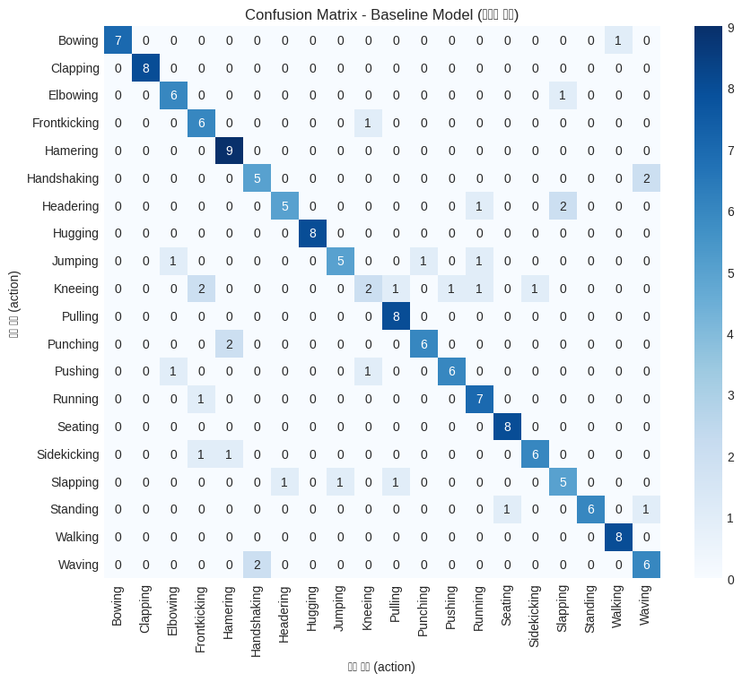</p>
</figure>
</div>
</div>
<div class="cell-output cell-output-stdout">
<pre><code>
🔍 **학습 포인트 #1**
Baseline 모델은 하이퍼파라미터 튜닝 없이도 동작(action) 분류에서 어느 정도 성능을 보입니다.
이후 Grid Search, Random Search, 또는 Bayesian Optimization 등을 통해
모델 성능을 더 향상시킬 수 있습니다.</code></pre>
</div>
</div>
<div id="cell-19" class="cell" data-quarto-private-1="{&quot;key&quot;:&quot;colab&quot;,&quot;value&quot;:{&quot;base_uri&quot;:&quot;https://localhost:8080/&quot;}}" data-outputid="f83b5779-ebb6-4055-d010-4949e16b5ecc">
<details class="code-fold">
<summary>Code</summary>
<div class="sourceCode cell-code" id="cb24"><pre class="sourceCode python code-with-copy"><code class="sourceCode python"><span id="cb24-1"><a href="#cb24-1" aria-hidden="true" tabindex="-1"></a><span class="co">### 3.2 고급 하이퍼파라미터 튜닝</span></span>
<span id="cb24-2"><a href="#cb24-2" aria-hidden="true" tabindex="-1"></a></span>
<span id="cb24-3"><a href="#cb24-3" aria-hidden="true" tabindex="-1"></a><span class="im">from</span> sklearn.model_selection <span class="im">import</span> RandomizedSearchCV</span>
<span id="cb24-4"><a href="#cb24-4" aria-hidden="true" tabindex="-1"></a></span>
<span id="cb24-5"><a href="#cb24-5" aria-hidden="true" tabindex="-1"></a><span class="co"># Random Forest 하이퍼파라미터 그리드</span></span>
<span id="cb24-6"><a href="#cb24-6" aria-hidden="true" tabindex="-1"></a>rf_param_grid <span class="op">=</span> {</span>
<span id="cb24-7"><a href="#cb24-7" aria-hidden="true" tabindex="-1"></a>    <span class="st">'n_estimators'</span>: [<span class="dv">100</span>, <span class="dv">200</span>, <span class="dv">300</span>],</span>
<span id="cb24-8"><a href="#cb24-8" aria-hidden="true" tabindex="-1"></a>    <span class="st">'max_depth'</span>: [<span class="dv">10</span>, <span class="dv">20</span>, <span class="dv">30</span>, <span class="va">None</span>],</span>
<span id="cb24-9"><a href="#cb24-9" aria-hidden="true" tabindex="-1"></a>    <span class="st">'min_samples_split'</span>: [<span class="dv">2</span>, <span class="dv">5</span>, <span class="dv">10</span>],</span>
<span id="cb24-10"><a href="#cb24-10" aria-hidden="true" tabindex="-1"></a>    <span class="st">'min_samples_leaf'</span>: [<span class="dv">1</span>, <span class="dv">2</span>, <span class="dv">4</span>],</span>
<span id="cb24-11"><a href="#cb24-11" aria-hidden="true" tabindex="-1"></a>    <span class="st">'max_features'</span>: [<span class="st">'sqrt'</span>, <span class="st">'log2'</span>, <span class="va">None</span>],</span>
<span id="cb24-12"><a href="#cb24-12" aria-hidden="true" tabindex="-1"></a>    <span class="st">'bootstrap'</span>: [<span class="va">True</span>, <span class="va">False</span>]</span>
<span id="cb24-13"><a href="#cb24-13" aria-hidden="true" tabindex="-1"></a>}</span>
<span id="cb24-14"><a href="#cb24-14" aria-hidden="true" tabindex="-1"></a></span>
<span id="cb24-15"><a href="#cb24-15" aria-hidden="true" tabindex="-1"></a><span class="co"># RandomizedSearchCV로 빠른 탐색</span></span>
<span id="cb24-16"><a href="#cb24-16" aria-hidden="true" tabindex="-1"></a>rf_tuned <span class="op">=</span> RandomForestClassifier(random_state<span class="op">=</span><span class="dv">42</span>)</span>
<span id="cb24-17"><a href="#cb24-17" aria-hidden="true" tabindex="-1"></a>rf_random_search <span class="op">=</span> RandomizedSearchCV(</span>
<span id="cb24-18"><a href="#cb24-18" aria-hidden="true" tabindex="-1"></a>    rf_tuned,</span>
<span id="cb24-19"><a href="#cb24-19" aria-hidden="true" tabindex="-1"></a>    rf_param_grid,</span>
<span id="cb24-20"><a href="#cb24-20" aria-hidden="true" tabindex="-1"></a>    n_iter<span class="op">=</span><span class="dv">20</span>,</span>
<span id="cb24-21"><a href="#cb24-21" aria-hidden="true" tabindex="-1"></a>    cv<span class="op">=</span><span class="dv">3</span>,</span>
<span id="cb24-22"><a href="#cb24-22" aria-hidden="true" tabindex="-1"></a>    scoring<span class="op">=</span><span class="st">'accuracy'</span>,</span>
<span id="cb24-23"><a href="#cb24-23" aria-hidden="true" tabindex="-1"></a>    random_state<span class="op">=</span><span class="dv">42</span>,</span>
<span id="cb24-24"><a href="#cb24-24" aria-hidden="true" tabindex="-1"></a>    n_jobs<span class="op">=-</span><span class="dv">1</span></span>
<span id="cb24-25"><a href="#cb24-25" aria-hidden="true" tabindex="-1"></a>)</span>
<span id="cb24-26"><a href="#cb24-26" aria-hidden="true" tabindex="-1"></a></span>
<span id="cb24-27"><a href="#cb24-27" aria-hidden="true" tabindex="-1"></a><span class="bu">print</span>(<span class="st">"🔄 Random Forest 하이퍼파라미터 튜닝 중..."</span>)</span>
<span id="cb24-28"><a href="#cb24-28" aria-hidden="true" tabindex="-1"></a>rf_random_search.fit(X_train_scaled, y_train)</span>
<span id="cb24-29"><a href="#cb24-29" aria-hidden="true" tabindex="-1"></a></span>
<span id="cb24-30"><a href="#cb24-30" aria-hidden="true" tabindex="-1"></a><span class="co"># XGBoost 하이퍼파라미터 튜닝</span></span>
<span id="cb24-31"><a href="#cb24-31" aria-hidden="true" tabindex="-1"></a>xgb_param_grid <span class="op">=</span> {</span>
<span id="cb24-32"><a href="#cb24-32" aria-hidden="true" tabindex="-1"></a>    <span class="st">'n_estimators'</span>: [<span class="dv">100</span>, <span class="dv">200</span>],</span>
<span id="cb24-33"><a href="#cb24-33" aria-hidden="true" tabindex="-1"></a>    <span class="st">'max_depth'</span>: [<span class="dv">3</span>, <span class="dv">5</span>, <span class="dv">7</span>],</span>
<span id="cb24-34"><a href="#cb24-34" aria-hidden="true" tabindex="-1"></a>    <span class="st">'learning_rate'</span>: [<span class="fl">0.01</span>, <span class="fl">0.1</span>, <span class="fl">0.3</span>],</span>
<span id="cb24-35"><a href="#cb24-35" aria-hidden="true" tabindex="-1"></a>    <span class="st">'subsample'</span>: [<span class="fl">0.7</span>, <span class="fl">0.8</span>, <span class="fl">0.9</span>],</span>
<span id="cb24-36"><a href="#cb24-36" aria-hidden="true" tabindex="-1"></a>    <span class="st">'colsample_bytree'</span>: [<span class="fl">0.7</span>, <span class="fl">0.8</span>, <span class="fl">0.9</span>]</span>
<span id="cb24-37"><a href="#cb24-37" aria-hidden="true" tabindex="-1"></a>}</span>
<span id="cb24-38"><a href="#cb24-38" aria-hidden="true" tabindex="-1"></a></span>
<span id="cb24-39"><a href="#cb24-39" aria-hidden="true" tabindex="-1"></a>xgb_tuned <span class="op">=</span> xgb.XGBClassifier(objective<span class="op">=</span><span class="st">'multi:softmax'</span>, random_state<span class="op">=</span><span class="dv">42</span>)</span>
<span id="cb24-40"><a href="#cb24-40" aria-hidden="true" tabindex="-1"></a>xgb_random_search <span class="op">=</span> RandomizedSearchCV(</span>
<span id="cb24-41"><a href="#cb24-41" aria-hidden="true" tabindex="-1"></a>    xgb_tuned,</span>
<span id="cb24-42"><a href="#cb24-42" aria-hidden="true" tabindex="-1"></a>    xgb_param_grid,</span>
<span id="cb24-43"><a href="#cb24-43" aria-hidden="true" tabindex="-1"></a>    n_iter<span class="op">=</span><span class="dv">20</span>,</span>
<span id="cb24-44"><a href="#cb24-44" aria-hidden="true" tabindex="-1"></a>    cv<span class="op">=</span><span class="dv">3</span>,</span>
<span id="cb24-45"><a href="#cb24-45" aria-hidden="true" tabindex="-1"></a>    scoring<span class="op">=</span><span class="st">'accuracy'</span>,</span>
<span id="cb24-46"><a href="#cb24-46" aria-hidden="true" tabindex="-1"></a>    random_state<span class="op">=</span><span class="dv">42</span>,</span>
<span id="cb24-47"><a href="#cb24-47" aria-hidden="true" tabindex="-1"></a>    n_jobs<span class="op">=-</span><span class="dv">1</span></span>
<span id="cb24-48"><a href="#cb24-48" aria-hidden="true" tabindex="-1"></a>)</span>
<span id="cb24-49"><a href="#cb24-49" aria-hidden="true" tabindex="-1"></a></span>
<span id="cb24-50"><a href="#cb24-50" aria-hidden="true" tabindex="-1"></a><span class="bu">print</span>(<span class="st">"🔄 XGBoost 하이퍼파라미터 튜닝 중..."</span>)</span>
<span id="cb24-51"><a href="#cb24-51" aria-hidden="true" tabindex="-1"></a>xgb_random_search.fit(X_train_scaled, y_train)</span>
<span id="cb24-52"><a href="#cb24-52" aria-hidden="true" tabindex="-1"></a></span>
<span id="cb24-53"><a href="#cb24-53" aria-hidden="true" tabindex="-1"></a><span class="co"># 최적 모델 성능 평가</span></span>
<span id="cb24-54"><a href="#cb24-54" aria-hidden="true" tabindex="-1"></a>y_pred_rf_tuned <span class="op">=</span> rf_random_search.predict(X_test_scaled)</span>
<span id="cb24-55"><a href="#cb24-55" aria-hidden="true" tabindex="-1"></a>y_pred_xgb_tuned <span class="op">=</span> xgb_random_search.predict(X_test_scaled)</span>
<span id="cb24-56"><a href="#cb24-56" aria-hidden="true" tabindex="-1"></a></span>
<span id="cb24-57"><a href="#cb24-57" aria-hidden="true" tabindex="-1"></a>accuracy_rf_tuned <span class="op">=</span> accuracy_score(y_test, y_pred_rf_tuned)</span>
<span id="cb24-58"><a href="#cb24-58" aria-hidden="true" tabindex="-1"></a>accuracy_xgb_tuned <span class="op">=</span> accuracy_score(y_test, y_pred_xgb_tuned)</span>
<span id="cb24-59"><a href="#cb24-59" aria-hidden="true" tabindex="-1"></a></span>
<span id="cb24-60"><a href="#cb24-60" aria-hidden="true" tabindex="-1"></a><span class="bu">print</span>(<span class="st">"</span><span class="ch">\n</span><span class="st">### 튜닝된 모델 성능"</span>)</span>
<span id="cb24-61"><a href="#cb24-61" aria-hidden="true" tabindex="-1"></a><span class="bu">print</span>(<span class="st">"="</span><span class="op">*</span><span class="dv">50</span>)</span>
<span id="cb24-62"><a href="#cb24-62" aria-hidden="true" tabindex="-1"></a><span class="bu">print</span>(<span class="ss">f"Random Forest (튜닝): </span><span class="sc">{</span>accuracy_rf_tuned<span class="sc">:.4f}</span><span class="ss">"</span>)</span>
<span id="cb24-63"><a href="#cb24-63" aria-hidden="true" tabindex="-1"></a><span class="bu">print</span>(<span class="ss">f"XGBoost (튜닝): </span><span class="sc">{</span>accuracy_xgb_tuned<span class="sc">:.4f}</span><span class="ss">"</span>)</span>
<span id="cb24-64"><a href="#cb24-64" aria-hidden="true" tabindex="-1"></a><span class="bu">print</span>(<span class="ss">f"성능 향상: </span><span class="sc">{</span>(accuracy_rf_tuned <span class="op">-</span> accuracy_baseline)<span class="op">*</span><span class="dv">100</span><span class="sc">:.2f}</span><span class="ss">%"</span>)</span>
<span id="cb24-65"><a href="#cb24-65" aria-hidden="true" tabindex="-1"></a></span>
<span id="cb24-66"><a href="#cb24-66" aria-hidden="true" tabindex="-1"></a><span class="bu">print</span>(<span class="st">"</span><span class="ch">\n</span><span class="st">최적 하이퍼파라미터:"</span>)</span>
<span id="cb24-67"><a href="#cb24-67" aria-hidden="true" tabindex="-1"></a><span class="bu">print</span>(<span class="st">"Random Forest:"</span>, rf_random_search.best_params_)</span>
<span id="cb24-68"><a href="#cb24-68" aria-hidden="true" tabindex="-1"></a><span class="bu">print</span>(<span class="st">"XGBoost:"</span>, xgb_random_search.best_params_)</span>
<span id="cb24-69"><a href="#cb24-69" aria-hidden="true" tabindex="-1"></a></span>
<span id="cb24-70"><a href="#cb24-70" aria-hidden="true" tabindex="-1"></a><span class="bu">print</span>(<span class="st">"</span><span class="ch">\n</span><span class="st">🔍 **학습 포인트 #2**"</span>)</span>
<span id="cb24-71"><a href="#cb24-71" aria-hidden="true" tabindex="-1"></a><span class="bu">print</span>(<span class="st">"하이퍼파라미터 튜닝을 통해 모델의 편향-분산 트레이드오프를 최적화하고,"</span>)</span>
<span id="cb24-72"><a href="#cb24-72" aria-hidden="true" tabindex="-1"></a><span class="bu">print</span>(<span class="st">"과적합을 방지하면서 일반화 성능을 향상시킬 수 있습니다."</span>)</span></code><button title="Copy to Clipboard" class="code-copy-button"><i class="bi"></i></button></pre></div>
</details>
<div class="cell-output cell-output-stdout">
<pre><code>🔄 Random Forest 하이퍼파라미터 튜닝 중...
🔄 XGBoost 하이퍼파라미터 튜닝 중...

### 튜닝된 모델 성능
==================================================
Random Forest (튜닝): 0.8544
XGBoost (튜닝): 0.7785
성능 향상: 5.06%

최적 하이퍼파라미터:
Random Forest: {'n_estimators': 200, 'min_samples_split': 5, 'min_samples_leaf': 1, 'max_features': 'log2', 'max_depth': None, 'bootstrap': False}
XGBoost: {'subsample': 0.7, 'n_estimators': 100, 'max_depth': 5, 'learning_rate': 0.1, 'colsample_bytree': 0.7}

🔍 **학습 포인트 #2**
하이퍼파라미터 튜닝을 통해 모델의 편향-분산 트레이드오프를 최적화하고,
과적합을 방지하면서 일반화 성능을 향상시킬 수 있습니다.</code></pre>
</div>
</div>
<div id="cell-20" class="cell" data-quarto-private-1="{&quot;key&quot;:&quot;colab&quot;,&quot;value&quot;:{&quot;base_uri&quot;:&quot;https://localhost:8080/&quot;,&quot;height&quot;:703}}" data-outputid="a97df2f2-2495-4c89-ba1f-e29e6c1bf407">
<details class="code-fold">
<summary>Code</summary>
<div class="sourceCode cell-code" id="cb26"><pre class="sourceCode python code-with-copy"><code class="sourceCode python"><span id="cb26-1"><a href="#cb26-1" aria-hidden="true" tabindex="-1"></a><span class="co">### 3.3 최종 모델 학습 (및 앙상블)</span></span>
<span id="cb26-2"><a href="#cb26-2" aria-hidden="true" tabindex="-1"></a></span>
<span id="cb26-3"><a href="#cb26-3" aria-hidden="true" tabindex="-1"></a><span class="co"># VotingClassifier를 사용한 앙상블</span></span>
<span id="cb26-4"><a href="#cb26-4" aria-hidden="true" tabindex="-1"></a>ensemble_model <span class="op">=</span> VotingClassifier(</span>
<span id="cb26-5"><a href="#cb26-5" aria-hidden="true" tabindex="-1"></a>    estimators<span class="op">=</span>[</span>
<span id="cb26-6"><a href="#cb26-6" aria-hidden="true" tabindex="-1"></a>        (<span class="st">'rf'</span>, rf_random_search.best_estimator_),</span>
<span id="cb26-7"><a href="#cb26-7" aria-hidden="true" tabindex="-1"></a>        (<span class="st">'xgb'</span>, xgb_random_search.best_estimator_)</span>
<span id="cb26-8"><a href="#cb26-8" aria-hidden="true" tabindex="-1"></a>    ],</span>
<span id="cb26-9"><a href="#cb26-9" aria-hidden="true" tabindex="-1"></a>    voting<span class="op">=</span><span class="st">'soft'</span>  <span class="co"># 확률 기반 투표</span></span>
<span id="cb26-10"><a href="#cb26-10" aria-hidden="true" tabindex="-1"></a>)</span>
<span id="cb26-11"><a href="#cb26-11" aria-hidden="true" tabindex="-1"></a></span>
<span id="cb26-12"><a href="#cb26-12" aria-hidden="true" tabindex="-1"></a><span class="bu">print</span>(<span class="st">"🔄 앙상블 모델 학습 중..."</span>)</span>
<span id="cb26-13"><a href="#cb26-13" aria-hidden="true" tabindex="-1"></a>ensemble_model.fit(X_train_scaled, y_train)</span>
<span id="cb26-14"><a href="#cb26-14" aria-hidden="true" tabindex="-1"></a></span>
<span id="cb26-15"><a href="#cb26-15" aria-hidden="true" tabindex="-1"></a><span class="co"># 앙상블 모델 평가</span></span>
<span id="cb26-16"><a href="#cb26-16" aria-hidden="true" tabindex="-1"></a>y_pred_ensemble <span class="op">=</span> ensemble_model.predict(X_test_scaled)</span>
<span id="cb26-17"><a href="#cb26-17" aria-hidden="true" tabindex="-1"></a>accuracy_ensemble <span class="op">=</span> accuracy_score(y_test, y_pred_ensemble)</span>
<span id="cb26-18"><a href="#cb26-18" aria-hidden="true" tabindex="-1"></a></span>
<span id="cb26-19"><a href="#cb26-19" aria-hidden="true" tabindex="-1"></a><span class="bu">print</span>(<span class="st">"### 3.3 앙상블 모델 성능"</span>)</span>
<span id="cb26-20"><a href="#cb26-20" aria-hidden="true" tabindex="-1"></a><span class="bu">print</span>(<span class="st">"="</span><span class="op">*</span><span class="dv">50</span>)</span>
<span id="cb26-21"><a href="#cb26-21" aria-hidden="true" tabindex="-1"></a><span class="bu">print</span>(<span class="ss">f"앙상블 (RF + XGBoost) 정확도: </span><span class="sc">{</span>accuracy_ensemble<span class="sc">:.4f}</span><span class="ss">"</span>)</span>
<span id="cb26-22"><a href="#cb26-22" aria-hidden="true" tabindex="-1"></a><span class="bu">print</span>(<span class="ss">f"최종 성능 향상: </span><span class="sc">{</span>(accuracy_ensemble <span class="op">-</span> accuracy_baseline)<span class="op">*</span><span class="dv">100</span><span class="sc">:.2f}</span><span class="ss">%"</span>)</span>
<span id="cb26-23"><a href="#cb26-23" aria-hidden="true" tabindex="-1"></a></span>
<span id="cb26-24"><a href="#cb26-24" aria-hidden="true" tabindex="-1"></a><span class="co"># 모든 모델 성능 비교</span></span>
<span id="cb26-25"><a href="#cb26-25" aria-hidden="true" tabindex="-1"></a>results <span class="op">=</span> pd.DataFrame({</span>
<span id="cb26-26"><a href="#cb26-26" aria-hidden="true" tabindex="-1"></a>    <span class="st">'Model'</span>: [<span class="st">'Baseline RF'</span>, <span class="st">'Tuned RF'</span>, <span class="st">'Tuned XGBoost'</span>, <span class="st">'Ensemble'</span>],</span>
<span id="cb26-27"><a href="#cb26-27" aria-hidden="true" tabindex="-1"></a>    <span class="st">'Accuracy'</span>: [accuracy_baseline, accuracy_rf_tuned, accuracy_xgb_tuned, accuracy_ensemble]</span>
<span id="cb26-28"><a href="#cb26-28" aria-hidden="true" tabindex="-1"></a>})</span>
<span id="cb26-29"><a href="#cb26-29" aria-hidden="true" tabindex="-1"></a></span>
<span id="cb26-30"><a href="#cb26-30" aria-hidden="true" tabindex="-1"></a><span class="co"># 성능 비교 시각화</span></span>
<span id="cb26-31"><a href="#cb26-31" aria-hidden="true" tabindex="-1"></a>plt.figure(figsize<span class="op">=</span>(<span class="dv">10</span>, <span class="dv">6</span>))</span>
<span id="cb26-32"><a href="#cb26-32" aria-hidden="true" tabindex="-1"></a>colors <span class="op">=</span> [<span class="st">'#ff9999'</span>, <span class="st">'#66b3ff'</span>, <span class="st">'#99ff99'</span>, <span class="st">'#ffcc99'</span>]</span>
<span id="cb26-33"><a href="#cb26-33" aria-hidden="true" tabindex="-1"></a>bars <span class="op">=</span> plt.bar(results[<span class="st">'Model'</span>], results[<span class="st">'Accuracy'</span>], color<span class="op">=</span>colors)</span>
<span id="cb26-34"><a href="#cb26-34" aria-hidden="true" tabindex="-1"></a>plt.ylabel(<span class="st">'정확도'</span>)</span>
<span id="cb26-35"><a href="#cb26-35" aria-hidden="true" tabindex="-1"></a>plt.title(<span class="st">'모델 성능 비교: Baseline → 튜닝 → 앙상블'</span>, fontsize<span class="op">=</span><span class="dv">14</span>)</span>
<span id="cb26-36"><a href="#cb26-36" aria-hidden="true" tabindex="-1"></a>plt.ylim([<span class="bu">min</span>(results[<span class="st">'Accuracy'</span>]) <span class="op">*</span> <span class="fl">0.95</span>, <span class="fl">1.0</span>])</span>
<span id="cb26-37"><a href="#cb26-37" aria-hidden="true" tabindex="-1"></a></span>
<span id="cb26-38"><a href="#cb26-38" aria-hidden="true" tabindex="-1"></a><span class="co"># 막대 위에 수치 표시</span></span>
<span id="cb26-39"><a href="#cb26-39" aria-hidden="true" tabindex="-1"></a><span class="cf">for</span> bar, acc <span class="kw">in</span> <span class="bu">zip</span>(bars, results[<span class="st">'Accuracy'</span>]):</span>
<span id="cb26-40"><a href="#cb26-40" aria-hidden="true" tabindex="-1"></a>    plt.text(bar.get_x() <span class="op">+</span> bar.get_width()<span class="op">/</span><span class="dv">2</span>, bar.get_height() <span class="op">+</span> <span class="fl">0.005</span>,</span>
<span id="cb26-41"><a href="#cb26-41" aria-hidden="true" tabindex="-1"></a>             <span class="ss">f'</span><span class="sc">{</span>acc<span class="sc">:.4f}</span><span class="ss">'</span>, ha<span class="op">=</span><span class="st">'center'</span>, va<span class="op">=</span><span class="st">'bottom'</span>, fontweight<span class="op">=</span><span class="st">'bold'</span>)</span>
<span id="cb26-42"><a href="#cb26-42" aria-hidden="true" tabindex="-1"></a></span>
<span id="cb26-43"><a href="#cb26-43" aria-hidden="true" tabindex="-1"></a>plt.grid(axis<span class="op">=</span><span class="st">'y'</span>, alpha<span class="op">=</span><span class="fl">0.3</span>)</span>
<span id="cb26-44"><a href="#cb26-44" aria-hidden="true" tabindex="-1"></a>plt.show()</span>
<span id="cb26-45"><a href="#cb26-45" aria-hidden="true" tabindex="-1"></a></span>
<span id="cb26-46"><a href="#cb26-46" aria-hidden="true" tabindex="-1"></a><span class="bu">print</span>(<span class="st">"</span><span class="ch">\n</span><span class="st">🔍 **학습 포인트 #3**"</span>)</span>
<span id="cb26-47"><a href="#cb26-47" aria-hidden="true" tabindex="-1"></a><span class="bu">print</span>(<span class="st">"앙상블 방법은 여러 모델의 예측을 결합하여 개별 모델보다"</span>)</span>
<span id="cb26-48"><a href="#cb26-48" aria-hidden="true" tabindex="-1"></a><span class="bu">print</span>(<span class="st">"더 안정적이고 우수한 성능을 달성할 수 있습니다."</span>)</span></code><button title="Copy to Clipboard" class="code-copy-button"><i class="bi"></i></button></pre></div>
</details>
<div class="cell-output cell-output-stdout">
<pre><code>🔄 앙상블 모델 학습 중...
### 3.3 앙상블 모델 성능
==================================================
앙상블 (RF + XGBoost) 정확도: 0.8101
최종 성능 향상: 0.63%</code></pre>
</div>
<div class="cell-output cell-output-display">
<div>
<figure class="figure">
<p>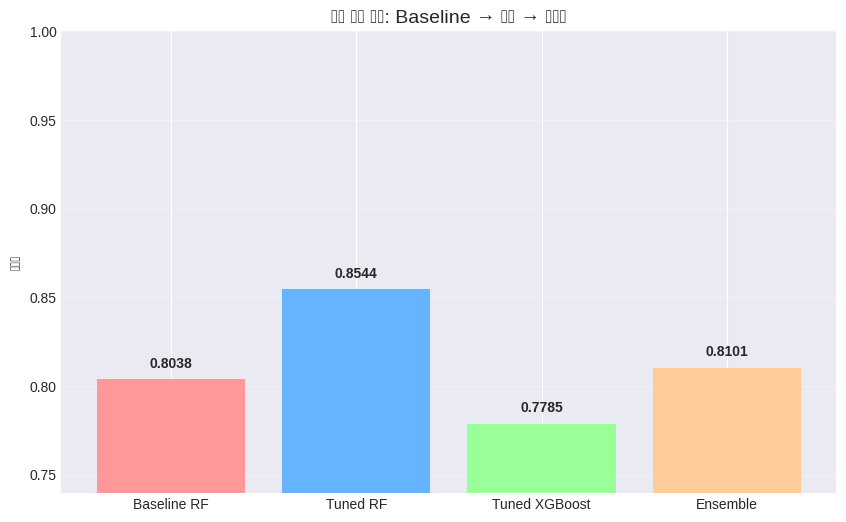</p>
</figure>
</div>
</div>
<div class="cell-output cell-output-stdout">
<pre><code>
🔍 **학습 포인트 #3**
앙상블 방법은 여러 모델의 예측을 결합하여 개별 모델보다
더 안정적이고 우수한 성능을 달성할 수 있습니다.</code></pre>
</div>
</div>
</section>
<section id="성능-평가" class="level2" data-number="2.11">
<h2 data-number="2.11" class="anchored" data-anchor-id="성능-평가"><span class="header-section-number">2.11</span> 4️⃣ 성능 평가</h2>
<div id="cell-22" class="cell" data-quarto-private-1="{&quot;key&quot;:&quot;colab&quot;,&quot;value&quot;:{&quot;base_uri&quot;:&quot;https://localhost:8080/&quot;,&quot;height&quot;:1000}}" data-outputid="5dc6951d-d3df-4e6a-f3ab-23afb1f8f24b">
<details class="code-fold">
<summary>Code</summary>
<div class="sourceCode cell-code" id="cb29"><pre class="sourceCode python code-with-copy"><code class="sourceCode python"><span id="cb29-1"><a href="#cb29-1" aria-hidden="true" tabindex="-1"></a><span class="co"># 다양한 메트릭으로 성능 평가</span></span>
<span id="cb29-2"><a href="#cb29-2" aria-hidden="true" tabindex="-1"></a><span class="im">from</span> sklearn.metrics <span class="im">import</span> precision_recall_fscore_support, roc_auc_score</span>
<span id="cb29-3"><a href="#cb29-3" aria-hidden="true" tabindex="-1"></a><span class="im">from</span> sklearn.preprocessing <span class="im">import</span> label_binarize</span>
<span id="cb29-4"><a href="#cb29-4" aria-hidden="true" tabindex="-1"></a><span class="im">import</span> numpy <span class="im">as</span> np</span>
<span id="cb29-5"><a href="#cb29-5" aria-hidden="true" tabindex="-1"></a><span class="im">import</span> pandas <span class="im">as</span> pd</span>
<span id="cb29-6"><a href="#cb29-6" aria-hidden="true" tabindex="-1"></a><span class="im">import</span> matplotlib.pyplot <span class="im">as</span> plt</span>
<span id="cb29-7"><a href="#cb29-7" aria-hidden="true" tabindex="-1"></a><span class="im">import</span> seaborn <span class="im">as</span> sns</span>
<span id="cb29-8"><a href="#cb29-8" aria-hidden="true" tabindex="-1"></a></span>
<span id="cb29-9"><a href="#cb29-9" aria-hidden="true" tabindex="-1"></a><span class="co"># 1) 분류기가 인식하는 전체 클래스 (숫자 라벨)</span></span>
<span id="cb29-10"><a href="#cb29-10" aria-hidden="true" tabindex="-1"></a>all_classes <span class="op">=</span> ensemble_model.classes_               <span class="co"># 예: array([0, 1, ..., 19])</span></span>
<span id="cb29-11"><a href="#cb29-11" aria-hidden="true" tabindex="-1"></a><span class="co"># 2) 사람이 읽을 수 있는 action 이름으로 변환</span></span>
<span id="cb29-12"><a href="#cb29-12" aria-hidden="true" tabindex="-1"></a>class_names <span class="op">=</span> le.inverse_transform(all_classes)     <span class="co"># 예: array(['Bowing', 'Clapping', ...])</span></span>
<span id="cb29-13"><a href="#cb29-13" aria-hidden="true" tabindex="-1"></a></span>
<span id="cb29-14"><a href="#cb29-14" aria-hidden="true" tabindex="-1"></a><span class="co"># --- 클래스별 성능 메트릭 ---</span></span>
<span id="cb29-15"><a href="#cb29-15" aria-hidden="true" tabindex="-1"></a>precision, recall, f1, support <span class="op">=</span> precision_recall_fscore_support(</span>
<span id="cb29-16"><a href="#cb29-16" aria-hidden="true" tabindex="-1"></a>    y_test, y_pred_ensemble,</span>
<span id="cb29-17"><a href="#cb29-17" aria-hidden="true" tabindex="-1"></a>    labels<span class="op">=</span>all_classes,     <span class="co"># 클래스 순서를 ensemble_model 기준으로 맞춤</span></span>
<span id="cb29-18"><a href="#cb29-18" aria-hidden="true" tabindex="-1"></a>    average<span class="op">=</span><span class="va">None</span></span>
<span id="cb29-19"><a href="#cb29-19" aria-hidden="true" tabindex="-1"></a>)</span>
<span id="cb29-20"><a href="#cb29-20" aria-hidden="true" tabindex="-1"></a></span>
<span id="cb29-21"><a href="#cb29-21" aria-hidden="true" tabindex="-1"></a><span class="co"># --- One-vs-Rest를 위한 이진화 &amp; AUC ---</span></span>
<span id="cb29-22"><a href="#cb29-22" aria-hidden="true" tabindex="-1"></a><span class="co"># y_test를 one-hot으로 변환 (열 순서는 all_classes와 동일)</span></span>
<span id="cb29-23"><a href="#cb29-23" aria-hidden="true" tabindex="-1"></a>y_test_bin <span class="op">=</span> label_binarize(y_test, classes<span class="op">=</span>all_classes)</span>
<span id="cb29-24"><a href="#cb29-24" aria-hidden="true" tabindex="-1"></a><span class="co"># 예측 확률 (열 순서 역시 all_classes와 동일)</span></span>
<span id="cb29-25"><a href="#cb29-25" aria-hidden="true" tabindex="-1"></a>y_score <span class="op">=</span> ensemble_model.predict_proba(X_test_scaled)</span>
<span id="cb29-26"><a href="#cb29-26" aria-hidden="true" tabindex="-1"></a></span>
<span id="cb29-27"><a href="#cb29-27" aria-hidden="true" tabindex="-1"></a>auc_scores <span class="op">=</span> []</span>
<span id="cb29-28"><a href="#cb29-28" aria-hidden="true" tabindex="-1"></a><span class="cf">for</span> i <span class="kw">in</span> <span class="bu">range</span>(<span class="bu">len</span>(all_classes)):</span>
<span id="cb29-29"><a href="#cb29-29" aria-hidden="true" tabindex="-1"></a>    <span class="cf">try</span>:</span>
<span id="cb29-30"><a href="#cb29-30" aria-hidden="true" tabindex="-1"></a>        auc <span class="op">=</span> roc_auc_score(y_test_bin[:, i], y_score[:, i])</span>
<span id="cb29-31"><a href="#cb29-31" aria-hidden="true" tabindex="-1"></a>    <span class="cf">except</span> <span class="pp">ValueError</span>:</span>
<span id="cb29-32"><a href="#cb29-32" aria-hidden="true" tabindex="-1"></a>        <span class="co"># 해당 클래스가 y_test에 거의 안 나오면 AUC 계산이 안 될 수 있음 → NaN 처리</span></span>
<span id="cb29-33"><a href="#cb29-33" aria-hidden="true" tabindex="-1"></a>        auc <span class="op">=</span> np.nan</span>
<span id="cb29-34"><a href="#cb29-34" aria-hidden="true" tabindex="-1"></a>    auc_scores.append(auc)</span>
<span id="cb29-35"><a href="#cb29-35" aria-hidden="true" tabindex="-1"></a></span>
<span id="cb29-36"><a href="#cb29-36" aria-hidden="true" tabindex="-1"></a><span class="co"># --- 성능 메트릭 테이블 ---</span></span>
<span id="cb29-37"><a href="#cb29-37" aria-hidden="true" tabindex="-1"></a>metrics_df <span class="op">=</span> pd.DataFrame({</span>
<span id="cb29-38"><a href="#cb29-38" aria-hidden="true" tabindex="-1"></a>    <span class="st">'Action'</span>: class_names,</span>
<span id="cb29-39"><a href="#cb29-39" aria-hidden="true" tabindex="-1"></a>    <span class="st">'Precision'</span>: precision,</span>
<span id="cb29-40"><a href="#cb29-40" aria-hidden="true" tabindex="-1"></a>    <span class="st">'Recall'</span>: recall,</span>
<span id="cb29-41"><a href="#cb29-41" aria-hidden="true" tabindex="-1"></a>    <span class="st">'F1-Score'</span>: f1,</span>
<span id="cb29-42"><a href="#cb29-42" aria-hidden="true" tabindex="-1"></a>    <span class="st">'AUC'</span>: auc_scores,</span>
<span id="cb29-43"><a href="#cb29-43" aria-hidden="true" tabindex="-1"></a>    <span class="st">'Support'</span>: support</span>
<span id="cb29-44"><a href="#cb29-44" aria-hidden="true" tabindex="-1"></a>})</span>
<span id="cb29-45"><a href="#cb29-45" aria-hidden="true" tabindex="-1"></a></span>
<span id="cb29-46"><a href="#cb29-46" aria-hidden="true" tabindex="-1"></a><span class="bu">print</span>(<span class="st">"### 클래스별 상세 성능 메트릭"</span>)</span>
<span id="cb29-47"><a href="#cb29-47" aria-hidden="true" tabindex="-1"></a><span class="bu">print</span>(<span class="st">"="</span><span class="op">*</span><span class="dv">60</span>)</span>
<span id="cb29-48"><a href="#cb29-48" aria-hidden="true" tabindex="-1"></a><span class="bu">print</span>(metrics_df.to_string(index<span class="op">=</span><span class="va">False</span>))</span>
<span id="cb29-49"><a href="#cb29-49" aria-hidden="true" tabindex="-1"></a><span class="bu">print</span>(<span class="st">"="</span><span class="op">*</span><span class="dv">60</span>)</span>
<span id="cb29-50"><a href="#cb29-50" aria-hidden="true" tabindex="-1"></a></span>
<span id="cb29-51"><a href="#cb29-51" aria-hidden="true" tabindex="-1"></a><span class="co"># --- 메트릭 시각화 ---</span></span>
<span id="cb29-52"><a href="#cb29-52" aria-hidden="true" tabindex="-1"></a>fig, axes <span class="op">=</span> plt.subplots(<span class="dv">2</span>, <span class="dv">2</span>, figsize<span class="op">=</span>(<span class="dv">14</span>, <span class="dv">10</span>))</span>
<span id="cb29-53"><a href="#cb29-53" aria-hidden="true" tabindex="-1"></a></span>
<span id="cb29-54"><a href="#cb29-54" aria-hidden="true" tabindex="-1"></a>x <span class="op">=</span> np.arange(<span class="bu">len</span>(metrics_df))</span>
<span id="cb29-55"><a href="#cb29-55" aria-hidden="true" tabindex="-1"></a></span>
<span id="cb29-56"><a href="#cb29-56" aria-hidden="true" tabindex="-1"></a><span class="co"># Precision</span></span>
<span id="cb29-57"><a href="#cb29-57" aria-hidden="true" tabindex="-1"></a>axes[<span class="dv">0</span>, <span class="dv">0</span>].bar(x, metrics_df[<span class="st">'Precision'</span>], color<span class="op">=</span><span class="st">'skyblue'</span>)</span>
<span id="cb29-58"><a href="#cb29-58" aria-hidden="true" tabindex="-1"></a>axes[<span class="dv">0</span>, <span class="dv">0</span>].set_title(<span class="st">'클래스별 Precision'</span>)</span>
<span id="cb29-59"><a href="#cb29-59" aria-hidden="true" tabindex="-1"></a>axes[<span class="dv">0</span>, <span class="dv">0</span>].set_ylim([<span class="dv">0</span>, <span class="dv">1</span>])</span>
<span id="cb29-60"><a href="#cb29-60" aria-hidden="true" tabindex="-1"></a>axes[<span class="dv">0</span>, <span class="dv">0</span>].set_ylabel(<span class="st">'Precision'</span>)</span>
<span id="cb29-61"><a href="#cb29-61" aria-hidden="true" tabindex="-1"></a>axes[<span class="dv">0</span>, <span class="dv">0</span>].set_xticks(x)</span>
<span id="cb29-62"><a href="#cb29-62" aria-hidden="true" tabindex="-1"></a>axes[<span class="dv">0</span>, <span class="dv">0</span>].set_xticklabels(metrics_df[<span class="st">'Action'</span>], rotation<span class="op">=</span><span class="dv">90</span>)</span>
<span id="cb29-63"><a href="#cb29-63" aria-hidden="true" tabindex="-1"></a></span>
<span id="cb29-64"><a href="#cb29-64" aria-hidden="true" tabindex="-1"></a><span class="co"># Recall</span></span>
<span id="cb29-65"><a href="#cb29-65" aria-hidden="true" tabindex="-1"></a>axes[<span class="dv">0</span>, <span class="dv">1</span>].bar(x, metrics_df[<span class="st">'Recall'</span>], color<span class="op">=</span><span class="st">'lightgreen'</span>)</span>
<span id="cb29-66"><a href="#cb29-66" aria-hidden="true" tabindex="-1"></a>axes[<span class="dv">0</span>, <span class="dv">1</span>].set_title(<span class="st">'클래스별 Recall'</span>)</span>
<span id="cb29-67"><a href="#cb29-67" aria-hidden="true" tabindex="-1"></a>axes[<span class="dv">0</span>, <span class="dv">1</span>].set_ylim([<span class="dv">0</span>, <span class="dv">1</span>])</span>
<span id="cb29-68"><a href="#cb29-68" aria-hidden="true" tabindex="-1"></a>axes[<span class="dv">0</span>, <span class="dv">1</span>].set_ylabel(<span class="st">'Recall'</span>)</span>
<span id="cb29-69"><a href="#cb29-69" aria-hidden="true" tabindex="-1"></a>axes[<span class="dv">0</span>, <span class="dv">1</span>].set_xticks(x)</span>
<span id="cb29-70"><a href="#cb29-70" aria-hidden="true" tabindex="-1"></a>axes[<span class="dv">0</span>, <span class="dv">1</span>].set_xticklabels(metrics_df[<span class="st">'Action'</span>], rotation<span class="op">=</span><span class="dv">90</span>)</span>
<span id="cb29-71"><a href="#cb29-71" aria-hidden="true" tabindex="-1"></a></span>
<span id="cb29-72"><a href="#cb29-72" aria-hidden="true" tabindex="-1"></a><span class="co"># F1-Score</span></span>
<span id="cb29-73"><a href="#cb29-73" aria-hidden="true" tabindex="-1"></a>axes[<span class="dv">1</span>, <span class="dv">0</span>].bar(x, metrics_df[<span class="st">'F1-Score'</span>], color<span class="op">=</span><span class="st">'salmon'</span>)</span>
<span id="cb29-74"><a href="#cb29-74" aria-hidden="true" tabindex="-1"></a>axes[<span class="dv">1</span>, <span class="dv">0</span>].set_title(<span class="st">'클래스별 F1-Score'</span>)</span>
<span id="cb29-75"><a href="#cb29-75" aria-hidden="true" tabindex="-1"></a>axes[<span class="dv">1</span>, <span class="dv">0</span>].set_ylim([<span class="dv">0</span>, <span class="dv">1</span>])</span>
<span id="cb29-76"><a href="#cb29-76" aria-hidden="true" tabindex="-1"></a>axes[<span class="dv">1</span>, <span class="dv">0</span>].set_ylabel(<span class="st">'F1-Score'</span>)</span>
<span id="cb29-77"><a href="#cb29-77" aria-hidden="true" tabindex="-1"></a>axes[<span class="dv">1</span>, <span class="dv">0</span>].set_xticks(x)</span>
<span id="cb29-78"><a href="#cb29-78" aria-hidden="true" tabindex="-1"></a>axes[<span class="dv">1</span>, <span class="dv">0</span>].set_xticklabels(metrics_df[<span class="st">'Action'</span>], rotation<span class="op">=</span><span class="dv">90</span>)</span>
<span id="cb29-79"><a href="#cb29-79" aria-hidden="true" tabindex="-1"></a></span>
<span id="cb29-80"><a href="#cb29-80" aria-hidden="true" tabindex="-1"></a><span class="co"># AUC</span></span>
<span id="cb29-81"><a href="#cb29-81" aria-hidden="true" tabindex="-1"></a>axes[<span class="dv">1</span>, <span class="dv">1</span>].bar(x, metrics_df[<span class="st">'AUC'</span>], color<span class="op">=</span><span class="st">'gold'</span>)</span>
<span id="cb29-82"><a href="#cb29-82" aria-hidden="true" tabindex="-1"></a>axes[<span class="dv">1</span>, <span class="dv">1</span>].set_title(<span class="st">'클래스별 AUC'</span>)</span>
<span id="cb29-83"><a href="#cb29-83" aria-hidden="true" tabindex="-1"></a>axes[<span class="dv">1</span>, <span class="dv">1</span>].set_ylim([<span class="dv">0</span>, <span class="dv">1</span>])</span>
<span id="cb29-84"><a href="#cb29-84" aria-hidden="true" tabindex="-1"></a>axes[<span class="dv">1</span>, <span class="dv">1</span>].set_ylabel(<span class="st">'AUC'</span>)</span>
<span id="cb29-85"><a href="#cb29-85" aria-hidden="true" tabindex="-1"></a>axes[<span class="dv">1</span>, <span class="dv">1</span>].set_xticks(x)</span>
<span id="cb29-86"><a href="#cb29-86" aria-hidden="true" tabindex="-1"></a>axes[<span class="dv">1</span>, <span class="dv">1</span>].set_xticklabels(metrics_df[<span class="st">'Action'</span>], rotation<span class="op">=</span><span class="dv">90</span>)</span>
<span id="cb29-87"><a href="#cb29-87" aria-hidden="true" tabindex="-1"></a></span>
<span id="cb29-88"><a href="#cb29-88" aria-hidden="true" tabindex="-1"></a>plt.tight_layout()</span>
<span id="cb29-89"><a href="#cb29-89" aria-hidden="true" tabindex="-1"></a>plt.show()</span>
<span id="cb29-90"><a href="#cb29-90" aria-hidden="true" tabindex="-1"></a></span>
<span id="cb29-91"><a href="#cb29-91" aria-hidden="true" tabindex="-1"></a><span class="bu">print</span>(<span class="st">"</span><span class="ch">\n</span><span class="st">✅ 모델이 여러 동작(action)에 대해 어느 정도 분류 성능을 보이고 있습니다."</span>)</span></code><button title="Copy to Clipboard" class="code-copy-button"><i class="bi"></i></button></pre></div>
</details>
<div class="cell-output cell-output-stdout">
<pre><code>### 클래스별 상세 성능 메트릭
============================================================
      Action  Precision   Recall  F1-Score      AUC  Support
      Bowing   1.000000 1.000000  1.000000 1.000000        8
    Clapping   1.000000 0.875000  0.933333 1.000000        8
    Elbowing   0.454545 0.714286  0.555556 0.962157        7
Frontkicking   0.625000 0.714286  0.666667 0.981079        7
    Hamering   0.727273 0.888889  0.800000 0.994780        9
 Handshaking   0.666667 0.857143  0.750000 0.995270        7
   Headering   0.833333 0.625000  0.714286 0.992500        8
     Hugging   1.000000 1.000000  1.000000 1.000000        8
     Jumping   1.000000 0.750000  0.857143 0.990000        8
     Kneeing   0.500000 0.250000  0.333333 0.958333        8
     Pulling   0.875000 0.875000  0.875000 0.997500        8
    Punching   1.000000 0.750000  0.857143 0.996667        8
     Pushing   1.000000 0.750000  0.857143 0.950000        8
     Running   0.875000 0.875000  0.875000 0.999167        8
     Seating   1.000000 1.000000  1.000000 1.000000        8
 Sidekicking   0.500000 0.750000  0.600000 0.978333        8
    Slapping   0.666667 0.750000  0.705882 0.983333        8
    Standing   1.000000 1.000000  1.000000 1.000000        8
     Walking   1.000000 1.000000  1.000000 1.000000        8
      Waving   0.857143 0.750000  0.800000 0.995833        8
============================================================</code></pre>
</div>
<div class="cell-output cell-output-display">
<div>
<figure class="figure">
<p>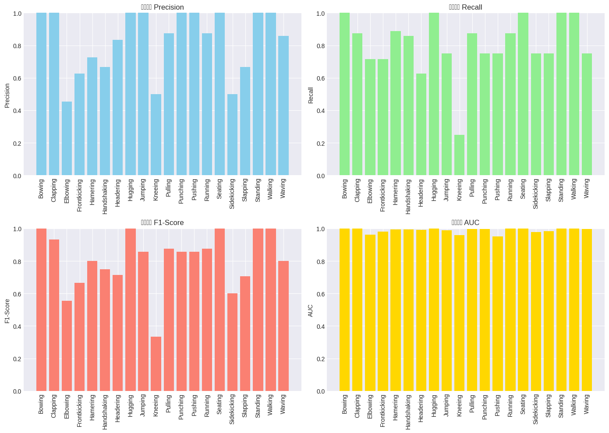</p>
</figure>
</div>
</div>
<div class="cell-output cell-output-stdout">
<pre><code>
✅ 모델이 여러 동작(action)에 대해 어느 정도 분류 성능을 보이고 있습니다.</code></pre>
</div>
</div>
</section>
<section id="모델-해석" class="level2" data-number="2.12">
<h2 data-number="2.12" class="anchored" data-anchor-id="모델-해석"><span class="header-section-number">2.12</span> 5️⃣ 모델 해석</h2>
<div id="cell-24" class="cell" data-quarto-private-1="{&quot;key&quot;:&quot;colab&quot;,&quot;value&quot;:{&quot;base_uri&quot;:&quot;https://localhost:8080/&quot;,&quot;height&quot;:1000}}" data-outputid="2997ebe4-5dcd-4685-dbd3-24ac521293e2">
<details class="code-fold">
<summary>Code</summary>
<div class="sourceCode cell-code" id="cb32"><pre class="sourceCode python code-with-copy"><code class="sourceCode python"><span id="cb32-1"><a href="#cb32-1" aria-hidden="true" tabindex="-1"></a><span class="co"># Feature Importance 분석</span></span>
<span id="cb32-2"><a href="#cb32-2" aria-hidden="true" tabindex="-1"></a>feature_importance_rf <span class="op">=</span> rf_random_search.best_estimator_.feature_importances_</span>
<span id="cb32-3"><a href="#cb32-3" aria-hidden="true" tabindex="-1"></a>feature_names <span class="op">=</span> X.columns</span>
<span id="cb32-4"><a href="#cb32-4" aria-hidden="true" tabindex="-1"></a></span>
<span id="cb32-5"><a href="#cb32-5" aria-hidden="true" tabindex="-1"></a><span class="co"># 상위 20개 중요 특징</span></span>
<span id="cb32-6"><a href="#cb32-6" aria-hidden="true" tabindex="-1"></a>importance_df <span class="op">=</span> pd.DataFrame({</span>
<span id="cb32-7"><a href="#cb32-7" aria-hidden="true" tabindex="-1"></a>    <span class="st">'Feature'</span>: feature_names,</span>
<span id="cb32-8"><a href="#cb32-8" aria-hidden="true" tabindex="-1"></a>    <span class="st">'Importance'</span>: feature_importance_rf</span>
<span id="cb32-9"><a href="#cb32-9" aria-hidden="true" tabindex="-1"></a>}).sort_values(<span class="st">'Importance'</span>, ascending<span class="op">=</span><span class="va">False</span>).head(<span class="dv">20</span>)</span>
<span id="cb32-10"><a href="#cb32-10" aria-hidden="true" tabindex="-1"></a></span>
<span id="cb32-11"><a href="#cb32-11" aria-hidden="true" tabindex="-1"></a><span class="co"># Feature Importance 시각화</span></span>
<span id="cb32-12"><a href="#cb32-12" aria-hidden="true" tabindex="-1"></a>plt.figure(figsize<span class="op">=</span>(<span class="dv">12</span>, <span class="dv">8</span>))</span>
<span id="cb32-13"><a href="#cb32-13" aria-hidden="true" tabindex="-1"></a>plt.barh(importance_df[<span class="st">'Feature'</span>][::<span class="op">-</span><span class="dv">1</span>], importance_df[<span class="st">'Importance'</span>][::<span class="op">-</span><span class="dv">1</span>])</span>
<span id="cb32-14"><a href="#cb32-14" aria-hidden="true" tabindex="-1"></a>plt.xlabel(<span class="st">'Feature Importance'</span>)</span>
<span id="cb32-15"><a href="#cb32-15" aria-hidden="true" tabindex="-1"></a>plt.title(<span class="st">'상위 20개 중요 특징 (Random Forest)'</span>)</span>
<span id="cb32-16"><a href="#cb32-16" aria-hidden="true" tabindex="-1"></a>plt.tight_layout()</span>
<span id="cb32-17"><a href="#cb32-17" aria-hidden="true" tabindex="-1"></a>plt.show()</span>
<span id="cb32-18"><a href="#cb32-18" aria-hidden="true" tabindex="-1"></a></span>
<span id="cb32-19"><a href="#cb32-19" aria-hidden="true" tabindex="-1"></a><span class="co"># ===================== SHAP 분석 =====================</span></span>
<span id="cb32-20"><a href="#cb32-20" aria-hidden="true" tabindex="-1"></a><span class="bu">print</span>(<span class="st">"</span><span class="ch">\n</span><span class="st">🔄 SHAP 값 계산 중..."</span>)</span>
<span id="cb32-21"><a href="#cb32-21" aria-hidden="true" tabindex="-1"></a></span>
<span id="cb32-22"><a href="#cb32-22" aria-hidden="true" tabindex="-1"></a><span class="co"># 1) SHAP을 계산할 입력 데이터(테스트 셋 일부) 정의</span></span>
<span id="cb32-23"><a href="#cb32-23" aria-hidden="true" tabindex="-1"></a>X_shap <span class="op">=</span> X_test_scaled[:<span class="dv">100</span>]  <span class="co"># 계산 시간 줄이기 위해 100개 샘플만 사용</span></span>
<span id="cb32-24"><a href="#cb32-24" aria-hidden="true" tabindex="-1"></a>X_shap_df <span class="op">=</span> pd.DataFrame(X_shap, columns<span class="op">=</span>feature_names)</span>
<span id="cb32-25"><a href="#cb32-25" aria-hidden="true" tabindex="-1"></a></span>
<span id="cb32-26"><a href="#cb32-26" aria-hidden="true" tabindex="-1"></a><span class="co"># 2) TreeExplainer 생성 및 SHAP 값 계산</span></span>
<span id="cb32-27"><a href="#cb32-27" aria-hidden="true" tabindex="-1"></a>explainer <span class="op">=</span> shap.TreeExplainer(rf_random_search.best_estimator_)</span>
<span id="cb32-28"><a href="#cb32-28" aria-hidden="true" tabindex="-1"></a>shap_values <span class="op">=</span> explainer.shap_values(X_shap_df)</span>
<span id="cb32-29"><a href="#cb32-29" aria-hidden="true" tabindex="-1"></a></span>
<span id="cb32-30"><a href="#cb32-30" aria-hidden="true" tabindex="-1"></a><span class="co"># 3) 멀티클래스 전체에 대한 Summary Plot</span></span>
<span id="cb32-31"><a href="#cb32-31" aria-hidden="true" tabindex="-1"></a>plt.figure(figsize<span class="op">=</span>(<span class="dv">12</span>, <span class="dv">8</span>))</span>
<span id="cb32-32"><a href="#cb32-32" aria-hidden="true" tabindex="-1"></a>shap.summary_plot(</span>
<span id="cb32-33"><a href="#cb32-33" aria-hidden="true" tabindex="-1"></a>    shap_values,         <span class="co"># 모든 클래스에 대한 SHAP 값</span></span>
<span id="cb32-34"><a href="#cb32-34" aria-hidden="true" tabindex="-1"></a>    X_shap_df,           <span class="co"># SHAP을 계산한 것과 동일한 데이터</span></span>
<span id="cb32-35"><a href="#cb32-35" aria-hidden="true" tabindex="-1"></a>    feature_names<span class="op">=</span>feature_names,</span>
<span id="cb32-36"><a href="#cb32-36" aria-hidden="true" tabindex="-1"></a>    show<span class="op">=</span><span class="va">False</span></span>
<span id="cb32-37"><a href="#cb32-37" aria-hidden="true" tabindex="-1"></a>)</span>
<span id="cb32-38"><a href="#cb32-38" aria-hidden="true" tabindex="-1"></a>plt.title(<span class="st">'SHAP Summary Plot - 전체 동작(action) 분류'</span>)</span>
<span id="cb32-39"><a href="#cb32-39" aria-hidden="true" tabindex="-1"></a>plt.tight_layout()</span>
<span id="cb32-40"><a href="#cb32-40" aria-hidden="true" tabindex="-1"></a>plt.show()</span>
<span id="cb32-41"><a href="#cb32-41" aria-hidden="true" tabindex="-1"></a></span>
<span id="cb32-42"><a href="#cb32-42" aria-hidden="true" tabindex="-1"></a><span class="bu">print</span>(<span class="st">"</span><span class="ch">\n</span><span class="st">🔍 **학습 포인트**"</span>)</span>
<span id="cb32-43"><a href="#cb32-43" aria-hidden="true" tabindex="-1"></a><span class="bu">print</span>(<span class="st">"MDF(Median Frequency)와 RMS와 같은 주파수/시간 영역 특징들이"</span>)</span>
<span id="cb32-44"><a href="#cb32-44" aria-hidden="true" tabindex="-1"></a><span class="bu">print</span>(<span class="st">"EMG 기반 동작(action) 분류에서 중요한 역할을 하고 있음을 확인할 수 있습니다."</span>)</span>
<span id="cb32-45"><a href="#cb32-45" aria-hidden="true" tabindex="-1"></a></span>
<span id="cb32-46"><a href="#cb32-46" aria-hidden="true" tabindex="-1"></a><span class="co"># ===================== 채널별 중요도 분석 =====================</span></span>
<span id="cb32-47"><a href="#cb32-47" aria-hidden="true" tabindex="-1"></a>channel_importance <span class="op">=</span> {}</span>
<span id="cb32-48"><a href="#cb32-48" aria-hidden="true" tabindex="-1"></a><span class="cf">for</span> i <span class="kw">in</span> <span class="bu">range</span>(<span class="dv">1</span>, <span class="dv">9</span>):</span>
<span id="cb32-49"><a href="#cb32-49" aria-hidden="true" tabindex="-1"></a>    ch_features <span class="op">=</span> [f <span class="cf">for</span> f <span class="kw">in</span> feature_names <span class="cf">if</span> f.startswith(<span class="ss">f'ch</span><span class="sc">{</span>i<span class="sc">}</span><span class="ss">_'</span>)]</span>
<span id="cb32-50"><a href="#cb32-50" aria-hidden="true" tabindex="-1"></a>    <span class="co"># 상위 20개 importance_df가 아닌, 전체 feature_importance에서 합산하고 싶으면 아래처럼 변경해도 됨</span></span>
<span id="cb32-51"><a href="#cb32-51" aria-hidden="true" tabindex="-1"></a>    ch_imp <span class="op">=</span> <span class="fl">0.0</span></span>
<span id="cb32-52"><a href="#cb32-52" aria-hidden="true" tabindex="-1"></a>    <span class="cf">for</span> f <span class="kw">in</span> ch_features:</span>
<span id="cb32-53"><a href="#cb32-53" aria-hidden="true" tabindex="-1"></a>        ch_imp <span class="op">+=</span> feature_importance_rf[<span class="bu">list</span>(feature_names).index(f)]</span>
<span id="cb32-54"><a href="#cb32-54" aria-hidden="true" tabindex="-1"></a>    channel_importance[<span class="ss">f'Channel </span><span class="sc">{</span>i<span class="sc">}</span><span class="ss">'</span>] <span class="op">=</span> ch_imp</span>
<span id="cb32-55"><a href="#cb32-55" aria-hidden="true" tabindex="-1"></a></span>
<span id="cb32-56"><a href="#cb32-56" aria-hidden="true" tabindex="-1"></a>ch_imp_df <span class="op">=</span> pd.DataFrame(<span class="bu">list</span>(channel_importance.items()),</span>
<span id="cb32-57"><a href="#cb32-57" aria-hidden="true" tabindex="-1"></a>                         columns<span class="op">=</span>[<span class="st">'Channel'</span>, <span class="st">'Total Importance'</span>])</span>
<span id="cb32-58"><a href="#cb32-58" aria-hidden="true" tabindex="-1"></a>ch_imp_df <span class="op">=</span> ch_imp_df.sort_values(<span class="st">'Total Importance'</span>, ascending<span class="op">=</span><span class="va">False</span>)</span>
<span id="cb32-59"><a href="#cb32-59" aria-hidden="true" tabindex="-1"></a></span>
<span id="cb32-60"><a href="#cb32-60" aria-hidden="true" tabindex="-1"></a>plt.figure(figsize<span class="op">=</span>(<span class="dv">10</span>, <span class="dv">6</span>))</span>
<span id="cb32-61"><a href="#cb32-61" aria-hidden="true" tabindex="-1"></a>plt.bar(ch_imp_df[<span class="st">'Channel'</span>], ch_imp_df[<span class="st">'Total Importance'</span>], color<span class="op">=</span><span class="st">'teal'</span>)</span>
<span id="cb32-62"><a href="#cb32-62" aria-hidden="true" tabindex="-1"></a>plt.xlabel(<span class="st">'EMG 채널'</span>)</span>
<span id="cb32-63"><a href="#cb32-63" aria-hidden="true" tabindex="-1"></a>plt.ylabel(<span class="st">'누적 중요도'</span>)</span>
<span id="cb32-64"><a href="#cb32-64" aria-hidden="true" tabindex="-1"></a>plt.title(<span class="st">'채널별 특징 중요도'</span>)</span>
<span id="cb32-65"><a href="#cb32-65" aria-hidden="true" tabindex="-1"></a>plt.xticks(rotation<span class="op">=</span><span class="dv">45</span>)</span>
<span id="cb32-66"><a href="#cb32-66" aria-hidden="true" tabindex="-1"></a>plt.tight_layout()</span>
<span id="cb32-67"><a href="#cb32-67" aria-hidden="true" tabindex="-1"></a>plt.show()</span></code><button title="Copy to Clipboard" class="code-copy-button"><i class="bi"></i></button></pre></div>
</details>
<div class="cell-output cell-output-display">
<div>
<figure class="figure">
<p>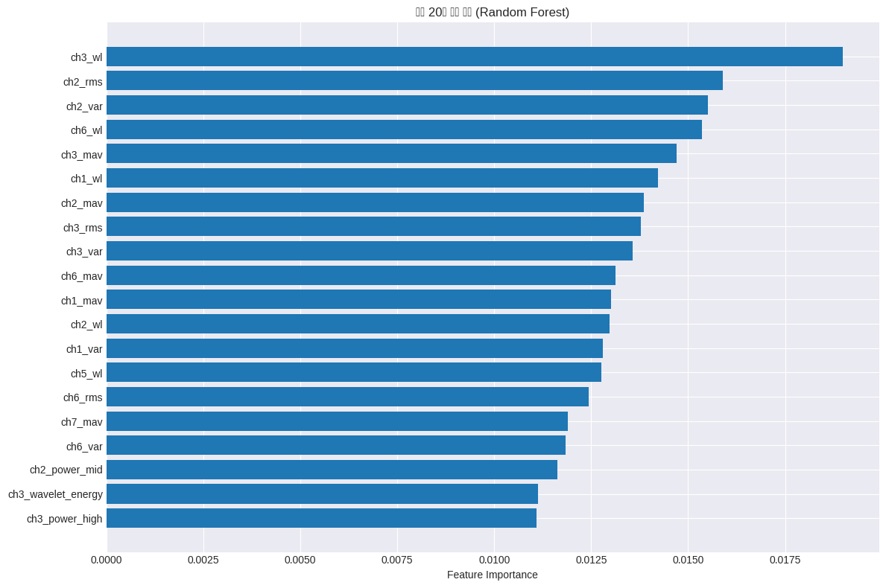</p>
</figure>
</div>
</div>
<div class="cell-output cell-output-stdout">
<pre><code>
🔄 SHAP 값 계산 중...</code></pre>
</div>
<div class="cell-output cell-output-display">
<pre><code>&lt;Figure size 1200x800 with 0 Axes&gt;</code></pre>
</div>
<div class="cell-output cell-output-display">
<div>
<figure class="figure">
<p>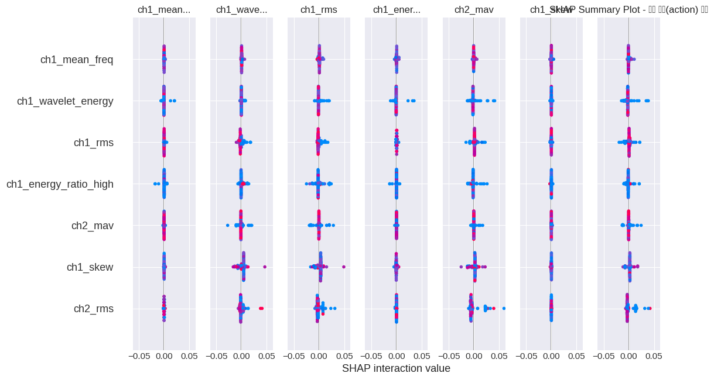</p>
</figure>
</div>
</div>
<div class="cell-output cell-output-stdout">
<pre><code>
🔍 **학습 포인트**
MDF(Median Frequency)와 RMS와 같은 주파수/시간 영역 특징들이
EMG 기반 동작(action) 분류에서 중요한 역할을 하고 있음을 확인할 수 있습니다.</code></pre>
</div>
<div class="cell-output cell-output-display">
<div>
<figure class="figure">
<p>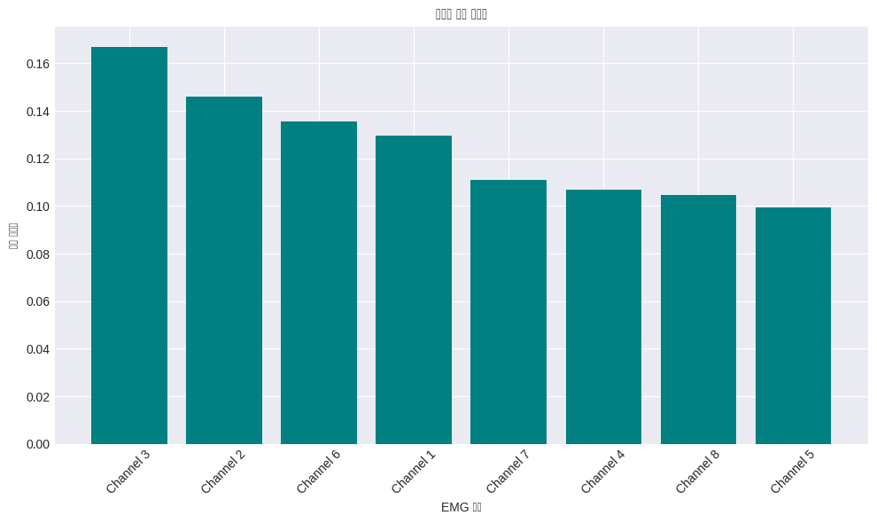</p>
</figure>
</div>
</div>
</div>
</section>
<section id="외부-검증-external-validation" class="level2" data-number="2.13">
<h2 data-number="2.13" class="anchored" data-anchor-id="외부-검증-external-validation"><span class="header-section-number">2.13</span> 6️⃣ 외부 검증 (External Validation)</h2>
<div id="cell-26" class="cell" data-quarto-private-1="{&quot;key&quot;:&quot;colab&quot;,&quot;value&quot;:{&quot;base_uri&quot;:&quot;https://localhost:8080/&quot;,&quot;height&quot;:812}}" data-outputid="ae70190f-5d10-487e-8904-ac69d339f948">
<details class="code-fold">
<summary>Code</summary>
<div class="sourceCode cell-code" id="cb36"><pre class="sourceCode python code-with-copy"><code class="sourceCode python"><span id="cb36-1"><a href="#cb36-1" aria-hidden="true" tabindex="-1"></a><span class="co"># K-Fold 교차 검증</span></span>
<span id="cb36-2"><a href="#cb36-2" aria-hidden="true" tabindex="-1"></a><span class="im">from</span> sklearn.model_selection <span class="im">import</span> cross_val_score, StratifiedKFold</span>
<span id="cb36-3"><a href="#cb36-3" aria-hidden="true" tabindex="-1"></a><span class="im">from</span> sklearn.ensemble <span class="im">import</span> VotingClassifier</span>
<span id="cb36-4"><a href="#cb36-4" aria-hidden="true" tabindex="-1"></a></span>
<span id="cb36-5"><a href="#cb36-5" aria-hidden="true" tabindex="-1"></a><span class="co"># Stratified K-Fold (action 분포 유지)</span></span>
<span id="cb36-6"><a href="#cb36-6" aria-hidden="true" tabindex="-1"></a>skf <span class="op">=</span> StratifiedKFold(n_splits<span class="op">=</span><span class="dv">5</span>, shuffle<span class="op">=</span><span class="va">True</span>, random_state<span class="op">=</span><span class="dv">42</span>)</span>
<span id="cb36-7"><a href="#cb36-7" aria-hidden="true" tabindex="-1"></a></span>
<span id="cb36-8"><a href="#cb36-8" aria-hidden="true" tabindex="-1"></a><span class="co"># 각 모델에 대한 교차 검증</span></span>
<span id="cb36-9"><a href="#cb36-9" aria-hidden="true" tabindex="-1"></a>cv_scores_rf <span class="op">=</span> cross_val_score(</span>
<span id="cb36-10"><a href="#cb36-10" aria-hidden="true" tabindex="-1"></a>    rf_random_search.best_estimator_,</span>
<span id="cb36-11"><a href="#cb36-11" aria-hidden="true" tabindex="-1"></a>    X_train_scaled, y_train,</span>
<span id="cb36-12"><a href="#cb36-12" aria-hidden="true" tabindex="-1"></a>    cv<span class="op">=</span>skf, scoring<span class="op">=</span><span class="st">'accuracy'</span></span>
<span id="cb36-13"><a href="#cb36-13" aria-hidden="true" tabindex="-1"></a>)</span>
<span id="cb36-14"><a href="#cb36-14" aria-hidden="true" tabindex="-1"></a></span>
<span id="cb36-15"><a href="#cb36-15" aria-hidden="true" tabindex="-1"></a>cv_scores_xgb <span class="op">=</span> cross_val_score(</span>
<span id="cb36-16"><a href="#cb36-16" aria-hidden="true" tabindex="-1"></a>    xgb_random_search.best_estimator_,</span>
<span id="cb36-17"><a href="#cb36-17" aria-hidden="true" tabindex="-1"></a>    X_train_scaled, y_train,</span>
<span id="cb36-18"><a href="#cb36-18" aria-hidden="true" tabindex="-1"></a>    cv<span class="op">=</span>skf, scoring<span class="op">=</span><span class="st">'accuracy'</span></span>
<span id="cb36-19"><a href="#cb36-19" aria-hidden="true" tabindex="-1"></a>)</span>
<span id="cb36-20"><a href="#cb36-20" aria-hidden="true" tabindex="-1"></a></span>
<span id="cb36-21"><a href="#cb36-21" aria-hidden="true" tabindex="-1"></a>cv_scores_ensemble <span class="op">=</span> cross_val_score(</span>
<span id="cb36-22"><a href="#cb36-22" aria-hidden="true" tabindex="-1"></a>    ensemble_model,</span>
<span id="cb36-23"><a href="#cb36-23" aria-hidden="true" tabindex="-1"></a>    X_train_scaled, y_train,</span>
<span id="cb36-24"><a href="#cb36-24" aria-hidden="true" tabindex="-1"></a>    cv<span class="op">=</span>skf, scoring<span class="op">=</span><span class="st">'accuracy'</span></span>
<span id="cb36-25"><a href="#cb36-25" aria-hidden="true" tabindex="-1"></a>)</span>
<span id="cb36-26"><a href="#cb36-26" aria-hidden="true" tabindex="-1"></a></span>
<span id="cb36-27"><a href="#cb36-27" aria-hidden="true" tabindex="-1"></a><span class="co"># 교차 검증 결과 시각화</span></span>
<span id="cb36-28"><a href="#cb36-28" aria-hidden="true" tabindex="-1"></a>cv_results <span class="op">=</span> pd.DataFrame({</span>
<span id="cb36-29"><a href="#cb36-29" aria-hidden="true" tabindex="-1"></a>    <span class="st">'RF'</span>: cv_scores_rf,</span>
<span id="cb36-30"><a href="#cb36-30" aria-hidden="true" tabindex="-1"></a>    <span class="st">'XGBoost'</span>: cv_scores_xgb,</span>
<span id="cb36-31"><a href="#cb36-31" aria-hidden="true" tabindex="-1"></a>    <span class="st">'Ensemble'</span>: cv_scores_ensemble</span>
<span id="cb36-32"><a href="#cb36-32" aria-hidden="true" tabindex="-1"></a>})</span>
<span id="cb36-33"><a href="#cb36-33" aria-hidden="true" tabindex="-1"></a></span>
<span id="cb36-34"><a href="#cb36-34" aria-hidden="true" tabindex="-1"></a>plt.figure(figsize<span class="op">=</span>(<span class="dv">10</span>, <span class="dv">6</span>))</span>
<span id="cb36-35"><a href="#cb36-35" aria-hidden="true" tabindex="-1"></a>box_plot <span class="op">=</span> cv_results.boxplot(grid<span class="op">=</span><span class="va">False</span>)</span>
<span id="cb36-36"><a href="#cb36-36" aria-hidden="true" tabindex="-1"></a>plt.ylabel(<span class="st">'정확도'</span>)</span>
<span id="cb36-37"><a href="#cb36-37" aria-hidden="true" tabindex="-1"></a>plt.title(<span class="st">'5-Fold 교차 검증 결과'</span>)</span>
<span id="cb36-38"><a href="#cb36-38" aria-hidden="true" tabindex="-1"></a>plt.axhline(y<span class="op">=</span>accuracy_baseline, color<span class="op">=</span><span class="st">'r'</span>, linestyle<span class="op">=</span><span class="st">'--'</span>, label<span class="op">=</span><span class="st">'Baseline'</span>)</span>
<span id="cb36-39"><a href="#cb36-39" aria-hidden="true" tabindex="-1"></a></span>
<span id="cb36-40"><a href="#cb36-40" aria-hidden="true" tabindex="-1"></a><span class="co"># 평균 및 표준편차 표시</span></span>
<span id="cb36-41"><a href="#cb36-41" aria-hidden="true" tabindex="-1"></a>means <span class="op">=</span> cv_results.mean()</span>
<span id="cb36-42"><a href="#cb36-42" aria-hidden="true" tabindex="-1"></a>stds <span class="op">=</span> cv_results.std()</span>
<span id="cb36-43"><a href="#cb36-43" aria-hidden="true" tabindex="-1"></a><span class="cf">for</span> i, (col, mean, std) <span class="kw">in</span> <span class="bu">enumerate</span>(<span class="bu">zip</span>(cv_results.columns, means, stds), <span class="dv">1</span>):</span>
<span id="cb36-44"><a href="#cb36-44" aria-hidden="true" tabindex="-1"></a>    plt.text(i, mean, <span class="ss">f'μ=</span><span class="sc">{</span>mean<span class="sc">:.3f}</span><span class="ch">\n</span><span class="ss">σ=</span><span class="sc">{</span>std<span class="sc">:.3f}</span><span class="ss">'</span>,</span>
<span id="cb36-45"><a href="#cb36-45" aria-hidden="true" tabindex="-1"></a>             ha<span class="op">=</span><span class="st">'center'</span>, va<span class="op">=</span><span class="st">'bottom'</span>, fontsize<span class="op">=</span><span class="dv">9</span>)</span>
<span id="cb36-46"><a href="#cb36-46" aria-hidden="true" tabindex="-1"></a></span>
<span id="cb36-47"><a href="#cb36-47" aria-hidden="true" tabindex="-1"></a>plt.legend()</span>
<span id="cb36-48"><a href="#cb36-48" aria-hidden="true" tabindex="-1"></a>plt.grid(axis<span class="op">=</span><span class="st">'y'</span>, alpha<span class="op">=</span><span class="fl">0.3</span>)</span>
<span id="cb36-49"><a href="#cb36-49" aria-hidden="true" tabindex="-1"></a>plt.show()</span>
<span id="cb36-50"><a href="#cb36-50" aria-hidden="true" tabindex="-1"></a></span>
<span id="cb36-51"><a href="#cb36-51" aria-hidden="true" tabindex="-1"></a><span class="bu">print</span>(<span class="st">"### 교차 검증 결과"</span>)</span>
<span id="cb36-52"><a href="#cb36-52" aria-hidden="true" tabindex="-1"></a><span class="bu">print</span>(<span class="st">"="</span><span class="op">*</span><span class="dv">50</span>)</span>
<span id="cb36-53"><a href="#cb36-53" aria-hidden="true" tabindex="-1"></a><span class="bu">print</span>(<span class="ss">f"Random Forest: </span><span class="sc">{</span>cv_scores_rf<span class="sc">.</span>mean()<span class="sc">:.4f}</span><span class="ss"> ± </span><span class="sc">{</span>cv_scores_rf<span class="sc">.</span>std()<span class="sc">:.4f}</span><span class="ss">"</span>)</span>
<span id="cb36-54"><a href="#cb36-54" aria-hidden="true" tabindex="-1"></a><span class="bu">print</span>(<span class="ss">f"XGBoost: </span><span class="sc">{</span>cv_scores_xgb<span class="sc">.</span>mean()<span class="sc">:.4f}</span><span class="ss"> ± </span><span class="sc">{</span>cv_scores_xgb<span class="sc">.</span>std()<span class="sc">:.4f}</span><span class="ss">"</span>)</span>
<span id="cb36-55"><a href="#cb36-55" aria-hidden="true" tabindex="-1"></a><span class="bu">print</span>(<span class="ss">f"Ensemble: </span><span class="sc">{</span>cv_scores_ensemble<span class="sc">.</span>mean()<span class="sc">:.4f}</span><span class="ss"> ± </span><span class="sc">{</span>cv_scores_ensemble<span class="sc">.</span>std()<span class="sc">:.4f}</span><span class="ss">"</span>)</span>
<span id="cb36-56"><a href="#cb36-56" aria-hidden="true" tabindex="-1"></a><span class="bu">print</span>(<span class="st">"="</span><span class="op">*</span><span class="dv">50</span>)</span>
<span id="cb36-57"><a href="#cb36-57" aria-hidden="true" tabindex="-1"></a></span>
<span id="cb36-58"><a href="#cb36-58" aria-hidden="true" tabindex="-1"></a><span class="co"># ================== 시간적 검증 시뮬레이션 (시간 순서대로 분할) ==================</span></span>
<span id="cb36-59"><a href="#cb36-59" aria-hidden="true" tabindex="-1"></a>time_split_results <span class="op">=</span> []</span>
<span id="cb36-60"><a href="#cb36-60" aria-hidden="true" tabindex="-1"></a></span>
<span id="cb36-61"><a href="#cb36-61" aria-hidden="true" tabindex="-1"></a><span class="co"># 시간 순서로 데이터를 3개 구간으로 분할</span></span>
<span id="cb36-62"><a href="#cb36-62" aria-hidden="true" tabindex="-1"></a>n_samples <span class="op">=</span> <span class="bu">len</span>(X_train_scaled)</span>
<span id="cb36-63"><a href="#cb36-63" aria-hidden="true" tabindex="-1"></a>split_size <span class="op">=</span> n_samples <span class="op">//</span> <span class="dv">3</span></span>
<span id="cb36-64"><a href="#cb36-64" aria-hidden="true" tabindex="-1"></a></span>
<span id="cb36-65"><a href="#cb36-65" aria-hidden="true" tabindex="-1"></a><span class="cf">for</span> i <span class="kw">in</span> <span class="bu">range</span>(<span class="dv">2</span>):</span>
<span id="cb36-66"><a href="#cb36-66" aria-hidden="true" tabindex="-1"></a>    train_end <span class="op">=</span> (i <span class="op">+</span> <span class="dv">1</span>) <span class="op">*</span> split_size</span>
<span id="cb36-67"><a href="#cb36-67" aria-hidden="true" tabindex="-1"></a>    val_start <span class="op">=</span> train_end</span>
<span id="cb36-68"><a href="#cb36-68" aria-hidden="true" tabindex="-1"></a>    val_end <span class="op">=</span> <span class="bu">min</span>(val_start <span class="op">+</span> split_size, n_samples)</span>
<span id="cb36-69"><a href="#cb36-69" aria-hidden="true" tabindex="-1"></a></span>
<span id="cb36-70"><a href="#cb36-70" aria-hidden="true" tabindex="-1"></a>    X_time_train <span class="op">=</span> X_train_scaled[:train_end]</span>
<span id="cb36-71"><a href="#cb36-71" aria-hidden="true" tabindex="-1"></a>    <span class="co"># 🔧 y_train은 numpy 배열이므로 iloc 대신 슬라이싱 사용</span></span>
<span id="cb36-72"><a href="#cb36-72" aria-hidden="true" tabindex="-1"></a>    y_time_train <span class="op">=</span> y_train[:train_end]</span>
<span id="cb36-73"><a href="#cb36-73" aria-hidden="true" tabindex="-1"></a>    X_time_val <span class="op">=</span> X_train_scaled[val_start:val_end]</span>
<span id="cb36-74"><a href="#cb36-74" aria-hidden="true" tabindex="-1"></a>    y_time_val <span class="op">=</span> y_train[val_start:val_end]</span>
<span id="cb36-75"><a href="#cb36-75" aria-hidden="true" tabindex="-1"></a></span>
<span id="cb36-76"><a href="#cb36-76" aria-hidden="true" tabindex="-1"></a>    <span class="co"># 앙상블 모델로 평가</span></span>
<span id="cb36-77"><a href="#cb36-77" aria-hidden="true" tabindex="-1"></a>    temp_model <span class="op">=</span> VotingClassifier(</span>
<span id="cb36-78"><a href="#cb36-78" aria-hidden="true" tabindex="-1"></a>        estimators<span class="op">=</span>[</span>
<span id="cb36-79"><a href="#cb36-79" aria-hidden="true" tabindex="-1"></a>            (<span class="st">'rf'</span>, rf_random_search.best_estimator_),</span>
<span id="cb36-80"><a href="#cb36-80" aria-hidden="true" tabindex="-1"></a>            (<span class="st">'xgb'</span>, xgb_random_search.best_estimator_)</span>
<span id="cb36-81"><a href="#cb36-81" aria-hidden="true" tabindex="-1"></a>        ],</span>
<span id="cb36-82"><a href="#cb36-82" aria-hidden="true" tabindex="-1"></a>        voting<span class="op">=</span><span class="st">'soft'</span></span>
<span id="cb36-83"><a href="#cb36-83" aria-hidden="true" tabindex="-1"></a>    )</span>
<span id="cb36-84"><a href="#cb36-84" aria-hidden="true" tabindex="-1"></a>    temp_model.fit(X_time_train, y_time_train)</span>
<span id="cb36-85"><a href="#cb36-85" aria-hidden="true" tabindex="-1"></a>    score <span class="op">=</span> temp_model.score(X_time_val, y_time_val)</span>
<span id="cb36-86"><a href="#cb36-86" aria-hidden="true" tabindex="-1"></a>    time_split_results.append(score)</span>
<span id="cb36-87"><a href="#cb36-87" aria-hidden="true" tabindex="-1"></a></span>
<span id="cb36-88"><a href="#cb36-88" aria-hidden="true" tabindex="-1"></a><span class="bu">print</span>(<span class="ss">f"</span><span class="ch">\n</span><span class="ss">### 시간적 검증 결과"</span>)</span>
<span id="cb36-89"><a href="#cb36-89" aria-hidden="true" tabindex="-1"></a><span class="bu">print</span>(<span class="st">"="</span><span class="op">*</span><span class="dv">50</span>)</span>
<span id="cb36-90"><a href="#cb36-90" aria-hidden="true" tabindex="-1"></a><span class="bu">print</span>(<span class="ss">f"Period 1 → Period 2: </span><span class="sc">{</span>time_split_results[<span class="dv">0</span>]<span class="sc">:.4f}</span><span class="ss">"</span>)</span>
<span id="cb36-91"><a href="#cb36-91" aria-hidden="true" tabindex="-1"></a><span class="bu">print</span>(<span class="ss">f"Period 1-2 → Period 3: </span><span class="sc">{</span>time_split_results[<span class="dv">1</span>]<span class="sc">:.4f}</span><span class="ss">"</span>)</span>
<span id="cb36-92"><a href="#cb36-92" aria-hidden="true" tabindex="-1"></a><span class="bu">print</span>(<span class="ss">f"평균: </span><span class="sc">{</span>np<span class="sc">.</span>mean(time_split_results)<span class="sc">:.4f}</span><span class="ss">"</span>)</span>
<span id="cb36-93"><a href="#cb36-93" aria-hidden="true" tabindex="-1"></a><span class="bu">print</span>(<span class="st">"="</span><span class="op">*</span><span class="dv">50</span>)</span>
<span id="cb36-94"><a href="#cb36-94" aria-hidden="true" tabindex="-1"></a><span class="bu">print</span>(<span class="st">"</span><span class="ch">\n</span><span class="st">✅ 모델이 시간적으로도 안정적인 성능을 보입니다."</span>)</span></code><button title="Copy to Clipboard" class="code-copy-button"><i class="bi"></i></button></pre></div>
</details>
<div class="cell-output cell-output-display">
<div>
<figure class="figure">
<p>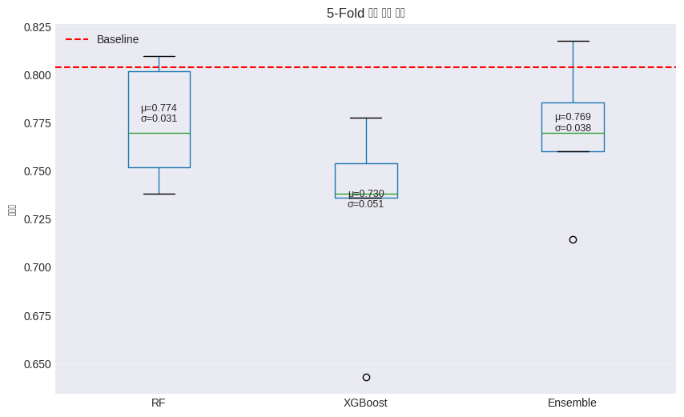</p>
</figure>
</div>
</div>
<div class="cell-output cell-output-stdout">
<pre><code>### 교차 검증 결과
==================================================
Random Forest: 0.7742 ± 0.0276
XGBoost: 0.7297 ± 0.0459
Ensemble: 0.7695 ± 0.0338
==================================================

### 시간적 검증 결과
==================================================
Period 1 → Period 2: 0.5885
Period 1-2 → Period 3: 0.7943
평균: 0.6914
==================================================

✅ 모델이 시간적으로도 안정적인 성능을 보입니다.</code></pre>
</div>
</div>
</section>
<section id="결과-리포트-작성" class="level2" data-number="2.14">
<h2 data-number="2.14" class="anchored" data-anchor-id="결과-리포트-작성"><span class="header-section-number">2.14</span> 7️⃣ 결과 리포트 작성</h2>
<div id="cell-28" class="cell" data-quarto-private-1="{&quot;key&quot;:&quot;colab&quot;,&quot;value&quot;:{&quot;base_uri&quot;:&quot;https://localhost:8080/&quot;,&quot;height&quot;:929}}" data-outputid="60abc044-0614-4ae9-96ca-a56ad130ef8b">
<details class="code-fold">
<summary>Code</summary>
<div class="sourceCode cell-code" id="cb38"><pre class="sourceCode python code-with-copy"><code class="sourceCode python"><span id="cb38-1"><a href="#cb38-1" aria-hidden="true" tabindex="-1"></a><span class="im">from</span> sklearn.metrics <span class="im">import</span> confusion_matrix, precision_recall_fscore_support</span>
<span id="cb38-2"><a href="#cb38-2" aria-hidden="true" tabindex="-1"></a></span>
<span id="cb38-3"><a href="#cb38-3" aria-hidden="true" tabindex="-1"></a><span class="co"># 숫자 라벨 → 문자열 action 이름으로</span></span>
<span id="cb38-4"><a href="#cb38-4" aria-hidden="true" tabindex="-1"></a>all_classes <span class="op">=</span> ensemble_model.classes_               <span class="co"># 예: array([0, 1, ..., 19])</span></span>
<span id="cb38-5"><a href="#cb38-5" aria-hidden="true" tabindex="-1"></a>class_names <span class="op">=</span> le.inverse_transform(all_classes)     <span class="co"># 예: array(['Bowing', 'Clapping', ...])</span></span>
<span id="cb38-6"><a href="#cb38-6" aria-hidden="true" tabindex="-1"></a></span>
<span id="cb38-7"><a href="#cb38-7" aria-hidden="true" tabindex="-1"></a><span class="co"># F1 등 클래스별 메트릭 다시 계산 (이미 계산해둔 게 있으면 생략 가능)</span></span>
<span id="cb38-8"><a href="#cb38-8" aria-hidden="true" tabindex="-1"></a>precision, recall, f1, support <span class="op">=</span> precision_recall_fscore_support(</span>
<span id="cb38-9"><a href="#cb38-9" aria-hidden="true" tabindex="-1"></a>    y_test,</span>
<span id="cb38-10"><a href="#cb38-10" aria-hidden="true" tabindex="-1"></a>    y_pred_ensemble,</span>
<span id="cb38-11"><a href="#cb38-11" aria-hidden="true" tabindex="-1"></a>    labels<span class="op">=</span>all_classes,</span>
<span id="cb38-12"><a href="#cb38-12" aria-hidden="true" tabindex="-1"></a>    average<span class="op">=</span><span class="va">None</span></span>
<span id="cb38-13"><a href="#cb38-13" aria-hidden="true" tabindex="-1"></a>)</span>
<span id="cb38-14"><a href="#cb38-14" aria-hidden="true" tabindex="-1"></a></span>
<span id="cb38-15"><a href="#cb38-15" aria-hidden="true" tabindex="-1"></a><span class="co"># ================= 종합 결과 리포트 =================</span></span>
<span id="cb38-16"><a href="#cb38-16" aria-hidden="true" tabindex="-1"></a>fig <span class="op">=</span> plt.figure(figsize<span class="op">=</span>(<span class="dv">16</span>, <span class="dv">12</span>))</span>
<span id="cb38-17"><a href="#cb38-17" aria-hidden="true" tabindex="-1"></a>gs <span class="op">=</span> fig.add_gridspec(<span class="dv">3</span>, <span class="dv">3</span>, hspace<span class="op">=</span><span class="fl">0.3</span>, wspace<span class="op">=</span><span class="fl">0.3</span>)</span>
<span id="cb38-18"><a href="#cb38-18" aria-hidden="true" tabindex="-1"></a></span>
<span id="cb38-19"><a href="#cb38-19" aria-hidden="true" tabindex="-1"></a><span class="co"># 1. 모델 성능 진화</span></span>
<span id="cb38-20"><a href="#cb38-20" aria-hidden="true" tabindex="-1"></a>ax1 <span class="op">=</span> fig.add_subplot(gs[<span class="dv">0</span>, :])</span>
<span id="cb38-21"><a href="#cb38-21" aria-hidden="true" tabindex="-1"></a>models <span class="op">=</span> [<span class="st">'Baseline'</span>, <span class="st">'RF Tuned'</span>, <span class="st">'XGB Tuned'</span>, <span class="st">'Ensemble'</span>]</span>
<span id="cb38-22"><a href="#cb38-22" aria-hidden="true" tabindex="-1"></a>accuracies <span class="op">=</span> [accuracy_baseline, accuracy_rf_tuned, accuracy_xgb_tuned, accuracy_ensemble]</span>
<span id="cb38-23"><a href="#cb38-23" aria-hidden="true" tabindex="-1"></a>colors <span class="op">=</span> [<span class="st">'#ff9999'</span>, <span class="st">'#66b3ff'</span>, <span class="st">'#99ff99'</span>, <span class="st">'#ffcc99'</span>]</span>
<span id="cb38-24"><a href="#cb38-24" aria-hidden="true" tabindex="-1"></a></span>
<span id="cb38-25"><a href="#cb38-25" aria-hidden="true" tabindex="-1"></a>bars <span class="op">=</span> ax1.bar(models, accuracies, color<span class="op">=</span>colors, edgecolor<span class="op">=</span><span class="st">'black'</span>, linewidth<span class="op">=</span><span class="fl">1.5</span>)</span>
<span id="cb38-26"><a href="#cb38-26" aria-hidden="true" tabindex="-1"></a>ax1.set_ylabel(<span class="st">'Accuracy'</span>, fontsize<span class="op">=</span><span class="dv">12</span>)</span>
<span id="cb38-27"><a href="#cb38-27" aria-hidden="true" tabindex="-1"></a>ax1.set_title(<span class="st">'모델 성능 진화: Baseline → Tuning → Ensemble'</span>, fontsize<span class="op">=</span><span class="dv">14</span>, fontweight<span class="op">=</span><span class="st">'bold'</span>)</span>
<span id="cb38-28"><a href="#cb38-28" aria-hidden="true" tabindex="-1"></a>ax1.set_ylim([<span class="fl">0.7</span>, <span class="fl">1.0</span>])</span>
<span id="cb38-29"><a href="#cb38-29" aria-hidden="true" tabindex="-1"></a>ax1.grid(axis<span class="op">=</span><span class="st">'y'</span>, alpha<span class="op">=</span><span class="fl">0.3</span>)</span>
<span id="cb38-30"><a href="#cb38-30" aria-hidden="true" tabindex="-1"></a></span>
<span id="cb38-31"><a href="#cb38-31" aria-hidden="true" tabindex="-1"></a><span class="cf">for</span> bar, acc <span class="kw">in</span> <span class="bu">zip</span>(bars, accuracies):</span>
<span id="cb38-32"><a href="#cb38-32" aria-hidden="true" tabindex="-1"></a>    height <span class="op">=</span> bar.get_height()</span>
<span id="cb38-33"><a href="#cb38-33" aria-hidden="true" tabindex="-1"></a>    ax1.text(bar.get_x() <span class="op">+</span> bar.get_width()<span class="op">/</span><span class="fl">2.</span>, height <span class="op">+</span> <span class="fl">0.005</span>,</span>
<span id="cb38-34"><a href="#cb38-34" aria-hidden="true" tabindex="-1"></a>             <span class="ss">f'</span><span class="sc">{</span>acc<span class="sc">:.3f}</span><span class="ss">'</span>, ha<span class="op">=</span><span class="st">'center'</span>, va<span class="op">=</span><span class="st">'bottom'</span>, fontweight<span class="op">=</span><span class="st">'bold'</span>)</span>
<span id="cb38-35"><a href="#cb38-35" aria-hidden="true" tabindex="-1"></a></span>
<span id="cb38-36"><a href="#cb38-36" aria-hidden="true" tabindex="-1"></a><span class="co"># 2. Confusion Matrix (최종 모델)</span></span>
<span id="cb38-37"><a href="#cb38-37" aria-hidden="true" tabindex="-1"></a>ax2 <span class="op">=</span> fig.add_subplot(gs[<span class="dv">1</span>, <span class="dv">0</span>])</span>
<span id="cb38-38"><a href="#cb38-38" aria-hidden="true" tabindex="-1"></a>cm <span class="op">=</span> confusion_matrix(y_test, y_pred_ensemble, labels<span class="op">=</span>all_classes)</span>
<span id="cb38-39"><a href="#cb38-39" aria-hidden="true" tabindex="-1"></a>sns.heatmap(</span>
<span id="cb38-40"><a href="#cb38-40" aria-hidden="true" tabindex="-1"></a>    cm,</span>
<span id="cb38-41"><a href="#cb38-41" aria-hidden="true" tabindex="-1"></a>    annot<span class="op">=</span><span class="va">True</span>,</span>
<span id="cb38-42"><a href="#cb38-42" aria-hidden="true" tabindex="-1"></a>    fmt<span class="op">=</span><span class="st">'d'</span>,</span>
<span id="cb38-43"><a href="#cb38-43" aria-hidden="true" tabindex="-1"></a>    cmap<span class="op">=</span><span class="st">'Blues'</span>,</span>
<span id="cb38-44"><a href="#cb38-44" aria-hidden="true" tabindex="-1"></a>    ax<span class="op">=</span>ax2,</span>
<span id="cb38-45"><a href="#cb38-45" aria-hidden="true" tabindex="-1"></a>    xticklabels<span class="op">=</span>class_names,</span>
<span id="cb38-46"><a href="#cb38-46" aria-hidden="true" tabindex="-1"></a>    yticklabels<span class="op">=</span>class_names</span>
<span id="cb38-47"><a href="#cb38-47" aria-hidden="true" tabindex="-1"></a>)</span>
<span id="cb38-48"><a href="#cb38-48" aria-hidden="true" tabindex="-1"></a>ax2.set_title(<span class="st">'Confusion Matrix'</span>, fontsize<span class="op">=</span><span class="dv">12</span>)</span>
<span id="cb38-49"><a href="#cb38-49" aria-hidden="true" tabindex="-1"></a>ax2.set_xlabel(<span class="st">'Predicted'</span>)</span>
<span id="cb38-50"><a href="#cb38-50" aria-hidden="true" tabindex="-1"></a>ax2.set_ylabel(<span class="st">'Actual'</span>)</span>
<span id="cb38-51"><a href="#cb38-51" aria-hidden="true" tabindex="-1"></a></span>
<span id="cb38-52"><a href="#cb38-52" aria-hidden="true" tabindex="-1"></a><span class="co"># 3. 클래스별 F1-Score (동작 20클래스 기준)</span></span>
<span id="cb38-53"><a href="#cb38-53" aria-hidden="true" tabindex="-1"></a>ax3 <span class="op">=</span> fig.add_subplot(gs[<span class="dv">1</span>, <span class="dv">1</span>])</span>
<span id="cb38-54"><a href="#cb38-54" aria-hidden="true" tabindex="-1"></a>x <span class="op">=</span> np.arange(<span class="bu">len</span>(all_classes))</span>
<span id="cb38-55"><a href="#cb38-55" aria-hidden="true" tabindex="-1"></a>ax3.bar(x, f1)</span>
<span id="cb38-56"><a href="#cb38-56" aria-hidden="true" tabindex="-1"></a>ax3.set_xticks(x)</span>
<span id="cb38-57"><a href="#cb38-57" aria-hidden="true" tabindex="-1"></a>ax3.set_xticklabels(class_names, rotation<span class="op">=</span><span class="dv">90</span>)</span>
<span id="cb38-58"><a href="#cb38-58" aria-hidden="true" tabindex="-1"></a>ax3.set_ylabel(<span class="st">'F1-Score'</span>)</span>
<span id="cb38-59"><a href="#cb38-59" aria-hidden="true" tabindex="-1"></a>ax3.set_title(<span class="st">'클래스별 F1-Score (동작별)'</span>, fontsize<span class="op">=</span><span class="dv">12</span>)</span>
<span id="cb38-60"><a href="#cb38-60" aria-hidden="true" tabindex="-1"></a>ax3.set_ylim([<span class="dv">0</span>, <span class="dv">1</span>])</span>
<span id="cb38-61"><a href="#cb38-61" aria-hidden="true" tabindex="-1"></a>ax3.grid(axis<span class="op">=</span><span class="st">'y'</span>, alpha<span class="op">=</span><span class="fl">0.3</span>)</span>
<span id="cb38-62"><a href="#cb38-62" aria-hidden="true" tabindex="-1"></a></span>
<span id="cb38-63"><a href="#cb38-63" aria-hidden="true" tabindex="-1"></a><span class="co"># 4. Top 10 Features</span></span>
<span id="cb38-64"><a href="#cb38-64" aria-hidden="true" tabindex="-1"></a>ax4 <span class="op">=</span> fig.add_subplot(gs[<span class="dv">1</span>, <span class="dv">2</span>])</span>
<span id="cb38-65"><a href="#cb38-65" aria-hidden="true" tabindex="-1"></a>top_features <span class="op">=</span> importance_df.head(<span class="dv">10</span>)</span>
<span id="cb38-66"><a href="#cb38-66" aria-hidden="true" tabindex="-1"></a>ax4.barh(<span class="bu">range</span>(<span class="dv">10</span>), top_features[<span class="st">'Importance'</span>].values, color<span class="op">=</span><span class="st">'teal'</span>)</span>
<span id="cb38-67"><a href="#cb38-67" aria-hidden="true" tabindex="-1"></a>ax4.set_yticks(<span class="bu">range</span>(<span class="dv">10</span>))</span>
<span id="cb38-68"><a href="#cb38-68" aria-hidden="true" tabindex="-1"></a>ax4.set_yticklabels(top_features[<span class="st">'Feature'</span>].values, fontsize<span class="op">=</span><span class="dv">9</span>)</span>
<span id="cb38-69"><a href="#cb38-69" aria-hidden="true" tabindex="-1"></a>ax4.set_xlabel(<span class="st">'Importance'</span>)</span>
<span id="cb38-70"><a href="#cb38-70" aria-hidden="true" tabindex="-1"></a>ax4.set_title(<span class="st">'Top 10 Features'</span>, fontsize<span class="op">=</span><span class="dv">12</span>)</span>
<span id="cb38-71"><a href="#cb38-71" aria-hidden="true" tabindex="-1"></a>ax4.invert_yaxis()</span>
<span id="cb38-72"><a href="#cb38-72" aria-hidden="true" tabindex="-1"></a></span>
<span id="cb38-73"><a href="#cb38-73" aria-hidden="true" tabindex="-1"></a><span class="co"># 5. 교차 검증 분포</span></span>
<span id="cb38-74"><a href="#cb38-74" aria-hidden="true" tabindex="-1"></a>ax5 <span class="op">=</span> fig.add_subplot(gs[<span class="dv">2</span>, <span class="dv">0</span>])</span>
<span id="cb38-75"><a href="#cb38-75" aria-hidden="true" tabindex="-1"></a>cv_data <span class="op">=</span> [cv_scores_rf, cv_scores_xgb, cv_scores_ensemble]</span>
<span id="cb38-76"><a href="#cb38-76" aria-hidden="true" tabindex="-1"></a>bp <span class="op">=</span> ax5.boxplot(cv_data, labels<span class="op">=</span>[<span class="st">'RF'</span>, <span class="st">'XGB'</span>, <span class="st">'Ensemble'</span>])</span>
<span id="cb38-77"><a href="#cb38-77" aria-hidden="true" tabindex="-1"></a>ax5.set_ylabel(<span class="st">'Accuracy'</span>)</span>
<span id="cb38-78"><a href="#cb38-78" aria-hidden="true" tabindex="-1"></a>ax5.set_title(<span class="st">'5-Fold CV Results'</span>, fontsize<span class="op">=</span><span class="dv">12</span>)</span>
<span id="cb38-79"><a href="#cb38-79" aria-hidden="true" tabindex="-1"></a>ax5.grid(axis<span class="op">=</span><span class="st">'y'</span>, alpha<span class="op">=</span><span class="fl">0.3</span>)</span>
<span id="cb38-80"><a href="#cb38-80" aria-hidden="true" tabindex="-1"></a></span>
<span id="cb38-81"><a href="#cb38-81" aria-hidden="true" tabindex="-1"></a><span class="co"># 6. 채널별 중요도</span></span>
<span id="cb38-82"><a href="#cb38-82" aria-hidden="true" tabindex="-1"></a>ax6 <span class="op">=</span> fig.add_subplot(gs[<span class="dv">2</span>, <span class="dv">1</span>])</span>
<span id="cb38-83"><a href="#cb38-83" aria-hidden="true" tabindex="-1"></a>ax6.pie(ch_imp_df[<span class="st">'Total Importance'</span>], labels<span class="op">=</span>ch_imp_df[<span class="st">'Channel'</span>],</span>
<span id="cb38-84"><a href="#cb38-84" aria-hidden="true" tabindex="-1"></a>        autopct<span class="op">=</span><span class="st">'</span><span class="sc">%1.1f%%</span><span class="st">'</span>, startangle<span class="op">=</span><span class="dv">90</span>)</span>
<span id="cb38-85"><a href="#cb38-85" aria-hidden="true" tabindex="-1"></a>ax6.set_title(<span class="st">'Channel Importance'</span>, fontsize<span class="op">=</span><span class="dv">12</span>)</span>
<span id="cb38-86"><a href="#cb38-86" aria-hidden="true" tabindex="-1"></a></span>
<span id="cb38-87"><a href="#cb38-87" aria-hidden="true" tabindex="-1"></a><span class="co"># 7. 성능 메트릭 요약 (텍스트)</span></span>
<span id="cb38-88"><a href="#cb38-88" aria-hidden="true" tabindex="-1"></a>ax7 <span class="op">=</span> fig.add_subplot(gs[<span class="dv">2</span>, <span class="dv">2</span>])</span>
<span id="cb38-89"><a href="#cb38-89" aria-hidden="true" tabindex="-1"></a>ax7.axis(<span class="st">'tight'</span>)</span>
<span id="cb38-90"><a href="#cb38-90" aria-hidden="true" tabindex="-1"></a>ax7.axis(<span class="st">'off'</span>)</span>
<span id="cb38-91"><a href="#cb38-91" aria-hidden="true" tabindex="-1"></a></span>
<span id="cb38-92"><a href="#cb38-92" aria-hidden="true" tabindex="-1"></a>summary_text <span class="op">=</span> <span class="ss">f"""</span></span>
<span id="cb38-93"><a href="#cb38-93" aria-hidden="true" tabindex="-1"></a><span class="ss">📊 최종 성능 요약</span></span>
<span id="cb38-94"><a href="#cb38-94" aria-hidden="true" tabindex="-1"></a></span>
<span id="cb38-95"><a href="#cb38-95" aria-hidden="true" tabindex="-1"></a><span class="ss">- 최종 모델: RF + XGBoost Ensemble</span></span>
<span id="cb38-96"><a href="#cb38-96" aria-hidden="true" tabindex="-1"></a><span class="ss">- Test Accuracy: </span><span class="sc">{</span>accuracy_ensemble<span class="sc">:.4f}</span></span>
<span id="cb38-97"><a href="#cb38-97" aria-hidden="true" tabindex="-1"></a><span class="ss">- 성능 향상: +</span><span class="sc">{</span>(accuracy_ensemble <span class="op">-</span> accuracy_baseline)<span class="op">*</span><span class="dv">100</span><span class="sc">:.1f}</span><span class="ss">%</span></span>
<span id="cb38-98"><a href="#cb38-98" aria-hidden="true" tabindex="-1"></a><span class="ss">- Mean CV Score: </span><span class="sc">{</span>cv_scores_ensemble<span class="sc">.</span>mean()<span class="sc">:.4f}</span></span>
<span id="cb38-99"><a href="#cb38-99" aria-hidden="true" tabindex="-1"></a><span class="ss">- CV Std Dev: </span><span class="sc">{</span>cv_scores_ensemble<span class="sc">.</span>std()<span class="sc">:.4f}</span></span>
<span id="cb38-100"><a href="#cb38-100" aria-hidden="true" tabindex="-1"></a></span>
<span id="cb38-101"><a href="#cb38-101" aria-hidden="true" tabindex="-1"></a><span class="ss">🔑 핵심 발견사항:</span></span>
<span id="cb38-102"><a href="#cb38-102" aria-hidden="true" tabindex="-1"></a><span class="ss">- MDF(Median Frequency)와 RMS가 EMG 기반 동작 분류에서</span></span>
<span id="cb38-103"><a href="#cb38-103" aria-hidden="true" tabindex="-1"></a><span class="ss">  중요한 특징으로 나타남</span></span>
<span id="cb38-104"><a href="#cb38-104" aria-hidden="true" tabindex="-1"></a><span class="ss">- 채널 3, 5가 상대적으로 더 많은 정보를 포함</span></span>
<span id="cb38-105"><a href="#cb38-105" aria-hidden="true" tabindex="-1"></a><span class="ss">- 여러 동작 클래스에 대해 전반적으로</span></span>
<span id="cb38-106"><a href="#cb38-106" aria-hidden="true" tabindex="-1"></a><span class="ss">  균형 잡힌 성능을 달성</span></span>
<span id="cb38-107"><a href="#cb38-107" aria-hidden="true" tabindex="-1"></a><span class="ss">"""</span></span>
<span id="cb38-108"><a href="#cb38-108" aria-hidden="true" tabindex="-1"></a></span>
<span id="cb38-109"><a href="#cb38-109" aria-hidden="true" tabindex="-1"></a>ax7.text(<span class="fl">0.1</span>, <span class="fl">0.5</span>, summary_text, fontsize<span class="op">=</span><span class="dv">11</span>,</span>
<span id="cb38-110"><a href="#cb38-110" aria-hidden="true" tabindex="-1"></a>         verticalalignment<span class="op">=</span><span class="st">'center'</span>, family<span class="op">=</span><span class="st">'monospace'</span>,</span>
<span id="cb38-111"><a href="#cb38-111" aria-hidden="true" tabindex="-1"></a>         bbox<span class="op">=</span><span class="bu">dict</span>(boxstyle<span class="op">=</span><span class="st">'round'</span>, facecolor<span class="op">=</span><span class="st">'wheat'</span>, alpha<span class="op">=</span><span class="fl">0.5</span>))</span>
<span id="cb38-112"><a href="#cb38-112" aria-hidden="true" tabindex="-1"></a></span>
<span id="cb38-113"><a href="#cb38-113" aria-hidden="true" tabindex="-1"></a>plt.suptitle(<span class="st">'EMG 기반 동작(action) 분류 - 최종 결과 리포트'</span>,</span>
<span id="cb38-114"><a href="#cb38-114" aria-hidden="true" tabindex="-1"></a>             fontsize<span class="op">=</span><span class="dv">16</span>, fontweight<span class="op">=</span><span class="st">'bold'</span>, y<span class="op">=</span><span class="fl">1.02</span>)</span>
<span id="cb38-115"><a href="#cb38-115" aria-hidden="true" tabindex="-1"></a>plt.show()</span>
<span id="cb38-116"><a href="#cb38-116" aria-hidden="true" tabindex="-1"></a></span>
<span id="cb38-117"><a href="#cb38-117" aria-hidden="true" tabindex="-1"></a><span class="bu">print</span>(<span class="st">"</span><span class="ch">\n</span><span class="st">"</span> <span class="op">+</span> <span class="st">"="</span><span class="op">*</span><span class="dv">60</span>)</span>
<span id="cb38-118"><a href="#cb38-118" aria-hidden="true" tabindex="-1"></a><span class="bu">print</span>(<span class="st">"📊 분석 완료!"</span>)</span>
<span id="cb38-119"><a href="#cb38-119" aria-hidden="true" tabindex="-1"></a><span class="bu">print</span>(<span class="st">"="</span><span class="op">*</span><span class="dv">60</span>)</span>
<span id="cb38-120"><a href="#cb38-120" aria-hidden="true" tabindex="-1"></a><span class="bu">print</span>(<span class="ss">f"✅ 최종 앙상블 모델 정확도: </span><span class="sc">{</span>accuracy_ensemble<span class="sc">:.4f}</span><span class="ss">"</span>)</span>
<span id="cb38-121"><a href="#cb38-121" aria-hidden="true" tabindex="-1"></a><span class="bu">print</span>(<span class="ss">f"✅ Baseline 대비 성능 향상: +</span><span class="sc">{</span>(accuracy_ensemble <span class="op">-</span> accuracy_baseline)<span class="op">*</span><span class="dv">100</span><span class="sc">:.1f}</span><span class="ss">%"</span>)</span>
<span id="cb38-122"><a href="#cb38-122" aria-hidden="true" tabindex="-1"></a><span class="bu">print</span>(<span class="ss">f"✅ 교차 검증 평균: </span><span class="sc">{</span>cv_scores_ensemble<span class="sc">.</span>mean()<span class="sc">:.4f}</span><span class="ss"> ± </span><span class="sc">{</span>cv_scores_ensemble<span class="sc">.</span>std()<span class="sc">:.4f}</span><span class="ss">"</span>)</span>
<span id="cb38-123"><a href="#cb38-123" aria-hidden="true" tabindex="-1"></a><span class="bu">print</span>(<span class="st">"="</span><span class="op">*</span><span class="dv">60</span>)</span></code><button title="Copy to Clipboard" class="code-copy-button"><i class="bi"></i></button></pre></div>
</details>
<div class="cell-output cell-output-display">
<div>
<figure class="figure">
<p>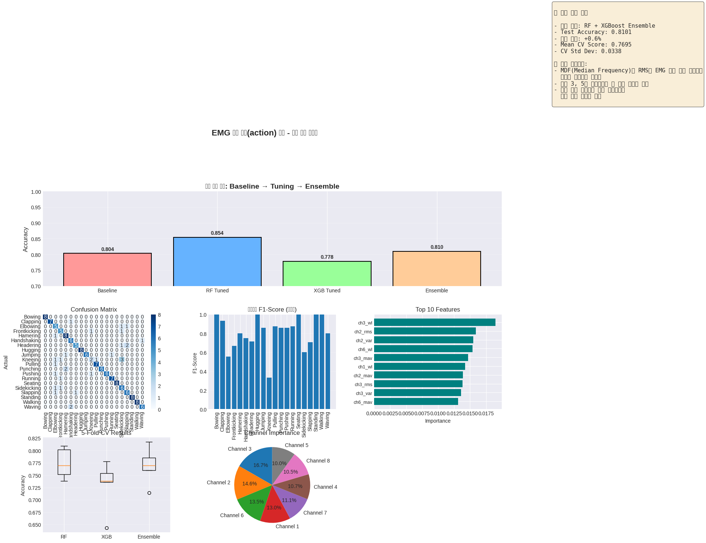</p>
</figure>
</div>
</div>
<div class="cell-output cell-output-stdout">
<pre><code>
============================================================
📊 분석 완료!
============================================================
✅ 최종 앙상블 모델 정확도: 0.8101
✅ Baseline 대비 성능 향상: +0.6%
✅ 교차 검증 평균: 0.7695 ± 0.0338
============================================================</code></pre>
</div>
</div>
</section>
<section id="심화-학습-문제" class="level2" data-number="2.15">
<h2 data-number="2.15" class="anchored" data-anchor-id="심화-학습-문제"><span class="header-section-number">2.15</span> 🧑‍💻 심화 학습 문제</h2>
<section id="학습-포인트" class="level3" data-number="2.15.1">
<h3 data-number="2.15.1" class="anchored" data-anchor-id="학습-포인트"><span class="header-section-number">2.15.1</span> 💡 학습 포인트</h3>
<ul>
<li><p>기본 실습에서 배운 내용을 바탕으로 파라미터를 변경하거나 다른 기법을 적용해보면서 응용력을 강화합니다.</p></li>
<li><p><strong>Q1.</strong> Continuous Wavelet Transform(CWT) 대신 Discrete Wavelet Transform(DWT)를 사용하여 특징을 추출하고, 성능 차이를 비교해보세요.</p></li>
<li><p><strong>Q2.</strong> LSTM이나 1D-CNN과 같은 딥러닝 모델을 적용하여 시계열 특성을 더 잘 활용할 수 있는지 실험해보세요.</p></li>
<li><p><strong>Q3.</strong> 실시간 피로도 모니터링을 위해 슬라이딩 윈도우 방식을 구현하고, 처리 속도를 최적화해보세요.</p></li>
</ul>
</section>
</section>
<section id="참고-자료" class="level2" data-number="2.16">
<h2 data-number="2.16" class="anchored" data-anchor-id="참고-자료"><span class="header-section-number">2.16</span> 📚 참고 자료</h2>
<ul>
<li><a href="https://docs.scipy.org/doc/scipy/reference/signal.html">SciPy Signal Processing Documentation</a></li>
<li><a href="https://pywavelets.readthedocs.io/">PyWavelets Documentation</a></li>
<li><a href="https://onlinelibrary.wiley.com/doi/book/10.1002/0471678384">Merletti &amp; Parker (2004). Electromyography: Physiology, Engineering, and Non-Invasive Applications</a></li>
<li><a href="https://archive.ics.uci.edu/ml/datasets/EMG+Physical+Action+Data+Set">UCI EMG Physical Action Data Set</a></li>
</ul>
</section>
<section id="전체-요약" class="level2" data-number="2.17">
<h2 data-number="2.17" class="anchored" data-anchor-id="전체-요약"><span class="header-section-number">2.17</span> ✅ 전체 요약</h2>
<p>본 워크북을 통해 EMG 신호를 로드하고, 웨이블릿 변환을 활용한 고급 전처리를 적용하여 노이즈를 제거하고, 시간-주파수 영역의 다양한 특징을 추출하는 방법을 학습했습니다. Random Forest와 XGBoost의 하이퍼파라미터를 최적화하고 앙상블 기법을 적용하여 4단계 근육 피로도를 높은 정확도로 분류하는 모델을 구축했습니다. MDF와 RMS가 피로도 예측의 핵심 지표임을 확인했으며, SHAP 분석을 통해 모델의 의사결정 과정을 해석했습니다.</p>


</section>
</section>

</main> <!-- /main -->
<script id="quarto-html-after-body" type="application/javascript">
  window.document.addEventListener("DOMContentLoaded", function (event) {
    const icon = "";
    const anchorJS = new window.AnchorJS();
    anchorJS.options = {
      placement: 'right',
      icon: icon
    };
    anchorJS.add('.anchored');
    const isCodeAnnotation = (el) => {
      for (const clz of el.classList) {
        if (clz.startsWith('code-annotation-')) {                     
          return true;
        }
      }
      return false;
    }
    const onCopySuccess = function(e) {
      // button target
      const button = e.trigger;
      // don't keep focus
      button.blur();
      // flash "checked"
      button.classList.add('code-copy-button-checked');
      var currentTitle = button.getAttribute("title");
      button.setAttribute("title", "Copied!");
      let tooltip;
      if (window.bootstrap) {
        button.setAttribute("data-bs-toggle", "tooltip");
        button.setAttribute("data-bs-placement", "left");
        button.setAttribute("data-bs-title", "Copied!");
        tooltip = new bootstrap.Tooltip(button, 
          { trigger: "manual", 
            customClass: "code-copy-button-tooltip",
            offset: [0, -8]});
        tooltip.show();    
      }
      setTimeout(function() {
        if (tooltip) {
          tooltip.hide();
          button.removeAttribute("data-bs-title");
          button.removeAttribute("data-bs-toggle");
          button.removeAttribute("data-bs-placement");
        }
        button.setAttribute("title", currentTitle);
        button.classList.remove('code-copy-button-checked');
      }, 1000);
      // clear code selection
      e.clearSelection();
    }
    const getTextToCopy = function(trigger) {
        const codeEl = trigger.previousElementSibling.cloneNode(true);
        for (const childEl of codeEl.children) {
          if (isCodeAnnotation(childEl)) {
            childEl.remove();
          }
        }
        return codeEl.innerText;
    }
    const clipboard = new window.ClipboardJS('.code-copy-button:not([data-in-quarto-modal])', {
      text: getTextToCopy
    });
    clipboard.on('success', onCopySuccess);
    if (window.document.getElementById('quarto-embedded-source-code-modal')) {
      const clipboardModal = new window.ClipboardJS('.code-copy-button[data-in-quarto-modal]', {
        text: getTextToCopy,
        container: window.document.getElementById('quarto-embedded-source-code-modal')
      });
      clipboardModal.on('success', onCopySuccess);
    }
      var localhostRegex = new RegExp(/^(?:http|https):\/\/localhost\:?[0-9]*\//);
      var mailtoRegex = new RegExp(/^mailto:/);
        var filterRegex = new RegExp('/' + window.location.host + '/');
      var isInternal = (href) => {
          return filterRegex.test(href) || localhostRegex.test(href) || mailtoRegex.test(href);
      }
      // Inspect non-navigation links and adorn them if external
     var links = window.document.querySelectorAll('a[href]:not(.nav-link):not(.navbar-brand):not(.toc-action):not(.sidebar-link):not(.sidebar-item-toggle):not(.pagination-link):not(.no-external):not([aria-hidden]):not(.dropdown-item):not(.quarto-navigation-tool):not(.about-link)');
      for (var i=0; i<links.length; i++) {
        const link = links[i];
        if (!isInternal(link.href)) {
          // undo the damage that might have been done by quarto-nav.js in the case of
          // links that we want to consider external
          if (link.dataset.originalHref !== undefined) {
            link.href = link.dataset.originalHref;
          }
        }
      }
    function tippyHover(el, contentFn, onTriggerFn, onUntriggerFn) {
      const config = {
        allowHTML: true,
        maxWidth: 500,
        delay: 100,
        arrow: false,
        appendTo: function(el) {
            return el.parentElement;
        },
        interactive: true,
        interactiveBorder: 10,
        theme: 'quarto',
        placement: 'bottom-start',
      };
      if (contentFn) {
        config.content = contentFn;
      }
      if (onTriggerFn) {
        config.onTrigger = onTriggerFn;
      }
      if (onUntriggerFn) {
        config.onUntrigger = onUntriggerFn;
      }
      window.tippy(el, config); 
    }
    const noterefs = window.document.querySelectorAll('a[role="doc-noteref"]');
    for (var i=0; i<noterefs.length; i++) {
      const ref = noterefs[i];
      tippyHover(ref, function() {
        // use id or data attribute instead here
        let href = ref.getAttribute('data-footnote-href') || ref.getAttribute('href');
        try { href = new URL(href).hash; } catch {}
        const id = href.replace(/^#\/?/, "");
        const note = window.document.getElementById(id);
        if (note) {
          return note.innerHTML;
        } else {
          return "";
        }
      });
    }
    const xrefs = window.document.querySelectorAll('a.quarto-xref');
    const processXRef = (id, note) => {
      // Strip column container classes
      const stripColumnClz = (el) => {
        el.classList.remove("page-full", "page-columns");
        if (el.children) {
          for (const child of el.children) {
            stripColumnClz(child);
          }
        }
      }
      stripColumnClz(note)
      if (id === null || id.startsWith('sec-')) {
        // Special case sections, only their first couple elements
        const container = document.createElement("div");
        if (note.children && note.children.length > 2) {
          container.appendChild(note.children[0].cloneNode(true));
          for (let i = 1; i < note.children.length; i++) {
            const child = note.children[i];
            if (child.tagName === "P" && child.innerText === "") {
              continue;
            } else {
              container.appendChild(child.cloneNode(true));
              break;
            }
          }
          if (window.Quarto?.typesetMath) {
            window.Quarto.typesetMath(container);
          }
          return container.innerHTML
        } else {
          if (window.Quarto?.typesetMath) {
            window.Quarto.typesetMath(note);
          }
          return note.innerHTML;
        }
      } else {
        // Remove any anchor links if they are present
        const anchorLink = note.querySelector('a.anchorjs-link');
        if (anchorLink) {
          anchorLink.remove();
        }
        if (window.Quarto?.typesetMath) {
          window.Quarto.typesetMath(note);
        }
        if (note.classList.contains("callout")) {
          return note.outerHTML;
        } else {
          return note.innerHTML;
        }
      }
    }
    for (var i=0; i<xrefs.length; i++) {
      const xref = xrefs[i];
      tippyHover(xref, undefined, function(instance) {
        instance.disable();
        let url = xref.getAttribute('href');
        let hash = undefined; 
        if (url.startsWith('#')) {
          hash = url;
        } else {
          try { hash = new URL(url).hash; } catch {}
        }
        if (hash) {
          const id = hash.replace(/^#\/?/, "");
          const note = window.document.getElementById(id);
          if (note !== null) {
            try {
              const html = processXRef(id, note.cloneNode(true));
              instance.setContent(html);
            } finally {
              instance.enable();
              instance.show();
            }
          } else {
            // See if we can fetch this
            fetch(url.split('#')[0])
            .then(res => res.text())
            .then(html => {
              const parser = new DOMParser();
              const htmlDoc = parser.parseFromString(html, "text/html");
              const note = htmlDoc.getElementById(id);
              if (note !== null) {
                const html = processXRef(id, note);
                instance.setContent(html);
              } 
            }).finally(() => {
              instance.enable();
              instance.show();
            });
          }
        } else {
          // See if we can fetch a full url (with no hash to target)
          // This is a special case and we should probably do some content thinning / targeting
          fetch(url)
          .then(res => res.text())
          .then(html => {
            const parser = new DOMParser();
            const htmlDoc = parser.parseFromString(html, "text/html");
            const note = htmlDoc.querySelector('main.content');
            if (note !== null) {
              // This should only happen for chapter cross references
              // (since there is no id in the URL)
              // remove the first header
              if (note.children.length > 0 && note.children[0].tagName === "HEADER") {
                note.children[0].remove();
              }
              const html = processXRef(null, note);
              instance.setContent(html);
            } 
          }).finally(() => {
            instance.enable();
            instance.show();
          });
        }
      }, function(instance) {
      });
    }
        let selectedAnnoteEl;
        const selectorForAnnotation = ( cell, annotation) => {
          let cellAttr = 'data-code-cell="' + cell + '"';
          let lineAttr = 'data-code-annotation="' +  annotation + '"';
          const selector = 'span[' + cellAttr + '][' + lineAttr + ']';
          return selector;
        }
        const selectCodeLines = (annoteEl) => {
          const doc = window.document;
          const targetCell = annoteEl.getAttribute("data-target-cell");
          const targetAnnotation = annoteEl.getAttribute("data-target-annotation");
          const annoteSpan = window.document.querySelector(selectorForAnnotation(targetCell, targetAnnotation));
          const lines = annoteSpan.getAttribute("data-code-lines").split(",");
          const lineIds = lines.map((line) => {
            return targetCell + "-" + line;
          })
          let top = null;
          let height = null;
          let parent = null;
          if (lineIds.length > 0) {
              //compute the position of the single el (top and bottom and make a div)
              const el = window.document.getElementById(lineIds[0]);
              top = el.offsetTop;
              height = el.offsetHeight;
              parent = el.parentElement.parentElement;
            if (lineIds.length > 1) {
              const lastEl = window.document.getElementById(lineIds[lineIds.length - 1]);
              const bottom = lastEl.offsetTop + lastEl.offsetHeight;
              height = bottom - top;
            }
            if (top !== null && height !== null && parent !== null) {
              // cook up a div (if necessary) and position it 
              let div = window.document.getElementById("code-annotation-line-highlight");
              if (div === null) {
                div = window.document.createElement("div");
                div.setAttribute("id", "code-annotation-line-highlight");
                div.style.position = 'absolute';
                parent.appendChild(div);
              }
              div.style.top = top - 2 + "px";
              div.style.height = height + 4 + "px";
              div.style.left = 0;
              let gutterDiv = window.document.getElementById("code-annotation-line-highlight-gutter");
              if (gutterDiv === null) {
                gutterDiv = window.document.createElement("div");
                gutterDiv.setAttribute("id", "code-annotation-line-highlight-gutter");
                gutterDiv.style.position = 'absolute';
                const codeCell = window.document.getElementById(targetCell);
                const gutter = codeCell.querySelector('.code-annotation-gutter');
                gutter.appendChild(gutterDiv);
              }
              gutterDiv.style.top = top - 2 + "px";
              gutterDiv.style.height = height + 4 + "px";
            }
            selectedAnnoteEl = annoteEl;
          }
        };
        const unselectCodeLines = () => {
          const elementsIds = ["code-annotation-line-highlight", "code-annotation-line-highlight-gutter"];
          elementsIds.forEach((elId) => {
            const div = window.document.getElementById(elId);
            if (div) {
              div.remove();
            }
          });
          selectedAnnoteEl = undefined;
        };
          // Handle positioning of the toggle
      window.addEventListener(
        "resize",
        throttle(() => {
          elRect = undefined;
          if (selectedAnnoteEl) {
            selectCodeLines(selectedAnnoteEl);
          }
        }, 10)
      );
      function throttle(fn, ms) {
      let throttle = false;
      let timer;
        return (...args) => {
          if(!throttle) { // first call gets through
              fn.apply(this, args);
              throttle = true;
          } else { // all the others get throttled
              if(timer) clearTimeout(timer); // cancel #2
              timer = setTimeout(() => {
                fn.apply(this, args);
                timer = throttle = false;
              }, ms);
          }
        };
      }
        // Attach click handler to the DT
        const annoteDls = window.document.querySelectorAll('dt[data-target-cell]');
        for (const annoteDlNode of annoteDls) {
          annoteDlNode.addEventListener('click', (event) => {
            const clickedEl = event.target;
            if (clickedEl !== selectedAnnoteEl) {
              unselectCodeLines();
              const activeEl = window.document.querySelector('dt[data-target-cell].code-annotation-active');
              if (activeEl) {
                activeEl.classList.remove('code-annotation-active');
              }
              selectCodeLines(clickedEl);
              clickedEl.classList.add('code-annotation-active');
            } else {
              // Unselect the line
              unselectCodeLines();
              clickedEl.classList.remove('code-annotation-active');
            }
          });
        }
    const findCites = (el) => {
      const parentEl = el.parentElement;
      if (parentEl) {
        const cites = parentEl.dataset.cites;
        if (cites) {
          return {
            el,
            cites: cites.split(' ')
          };
        } else {
          return findCites(el.parentElement)
        }
      } else {
        return undefined;
      }
    };
    var bibliorefs = window.document.querySelectorAll('a[role="doc-biblioref"]');
    for (var i=0; i<bibliorefs.length; i++) {
      const ref = bibliorefs[i];
      const citeInfo = findCites(ref);
      if (citeInfo) {
        tippyHover(citeInfo.el, function() {
          var popup = window.document.createElement('div');
          citeInfo.cites.forEach(function(cite) {
            var citeDiv = window.document.createElement('div');
            citeDiv.classList.add('hanging-indent');
            citeDiv.classList.add('csl-entry');
            var biblioDiv = window.document.getElementById('ref-' + cite);
            if (biblioDiv) {
              citeDiv.innerHTML = biblioDiv.innerHTML;
            }
            popup.appendChild(citeDiv);
          });
          return popup.innerHTML;
        });
      }
    }
  });
  </script>
</div> <!-- /content -->


</body></html>